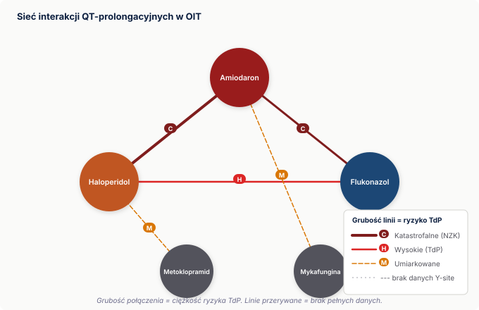

Ta książka powstała dla Ciebie. Nie dla lekarza, który zleca. Dla Ciebie — pielęgniarki lub pielęgniarza OIT, gdy stoisz przy wózku o 3:00 w nocy, trzymasz strzykawkę z noradrenaliną i zastanawiasz się, czy przez ten sam lumen możesz dać esomeprazol, bo lekarz nic o tym nie napisał, a pyta właśnie teraz.
Ta sytuacja zdarza się każdej nocy, na każdym oddziale intensywnej terapii. I za każdym razem to Ty musisz podjąć decyzję.
To narzędzie do pracy przy łóżku. Zawiera dane dotyczące kompatybilności i stabilności leków stosowanych w OIT, zasady preparowania, reguły zarządzania lumenami, algorytmy decyzyjne i checklisty gotowe do druku.
Zakres: leki dożylne w OIT. Nie ma tu chemioterapii, leków psychiatrycznych podawanych ambulatoryjnie ani preparatów podskórnych.
Dane są zebrane z Trissel’s Handbook on Injectable Drugs, kart charakterystyki produktu leczniczego (ChPL) oraz literatury peer-reviewed. Tam gdzie dane są sprzeczne lub ich brakuje — jest to wprost zaznaczone.
Nie jest podręcznikiem farmakologii. Nie zastąpi ChPL konkretnego leku konkretnego producenta. Nie jest dokumentem prawnym ani protokołem szpitalnym. Nie zwalnia z myślenia.
Jeśli zlecenie lub sposób podania budzi wątpliwości — pytasz lekarza zlecającego. Farmaceuta kliniczny, jeśli jest dostępny w Twoim oddziale, jest dodatkowym zasobem przy trudniejszych pytaniach o kompatybilność. W wielu polskich OIT tej roli przy łóżku nie ma — nie zakładaj że jest. Ta książka daje Ci punkt wyjścia i język do rozmowy. Decyzja ostateczna zawsze należy do człowieka przy łóżku.
Pacjent w OIT otrzymuje średnio 10–15 leków dożylnych jednocześnie. Każda para leków w tej samej linii to potencjalne ryzyko. Matematycznie: 10 leków to 45 możliwych par. Przy 15 lekach — 105 par.
Nikt nie pamięta 105 kombinacji. Nikt nie ma czasu sprawdzać każdej z nich w środku nocy. Dlatego potrzebujesz hierarchii, protokołów i szybkich narzędzi weryfikacji — nie wiedzy encyklopedycznej.
Masz konkretny lek i pytanie o nośnik lub bolus → Aneks A (stabilność) lub Aneks D (bolus). Oba posortowane alfabetycznie.
Pytanie o parę leków → Aneks B (macierz kompatybilności) lub Rozdział 5 (kluczowe pary z mechanizmem).
Nie masz lumenów i musisz zdecydować co gdzie → Rozdział 10 (hierarchia) lub Aneks E (tabela zbiorcza). Rozdział 11 zawiera gotowe scenariusze kliniczne.
Masz wątpliwości przed preparowaniem → Rozdział 17 (checklisty). Wersja do druku w materiałach do pobrania.
Chcesz zrozumieć mechanizm → Rozdziały 2–5 wyjaśniają dlaczego, nie tylko co.
Struktura jest celowo powtarzalna: każdy dział kończy się konkluzją praktyczną. Możesz czytać tylko te konkluzje i wciąż mieć użyteczne narzędzie.
Daje Ci język do opisania problemu — kiedy widzisz zmętnienie w linii, wiesz jak to nazwać i co z tym zrobić. Daje Ci hierarchię ryzyka — wiesz co jest absolutnym “nie”, co jest “ostrożnie”, a co jest w porządku. Daje Ci protokoły weryfikacji — zanim otworzysz ampułkę, wiesz co sprawdzić.
Przede wszystkim daje Ci pewność, że Twoja decyzja jest oparta na danych. Nie na przeczuciu, nie na tym co ktoś kiedyś powiedział, nie na tym że “zawsze tak robimy”.
To wystarczy. Reszta należy do Ciebie.
Dane w tej książce pochodzą z trzech głównych kategorii źródeł:
Trissel’s Handbook on Injectable Drugs — standardowe, wielokrotnie aktualizowane kompendium kompatybilności leków dożylnych. Zawiera dane eksperymentalne dotyczące Y-site, mieszania w worku i w strzykawce. Jest głównym źródłem dla danych o kompatybilności par leków.
Karty charakterystyki produktu leczniczego (ChPL) — dokumenty rejestracyjne konkretnych preparatów konkretnych producentów. Zawierają oficjalne zalecenia dotyczące nośnika, rozcieńczenia, przechowywania i warunków podania. Są wiążące prawnie dla danego preparatu. Uwaga: ChPL różni się między producentami tego samego substancji czynnej — dane dla generycznej ampicyliny producenta A mogą się różnić od producenta B.
Literatura peer-reviewed — badania stabilności, opisy przypadków klinicznych, wytyczne towarzystw naukowych (ESICM, ASHP, BAPEN). Szczególnie istotna dla danych farmakokinetycznych i interakcji niezależnych od linii IV.
Tam gdzie dane z różnych źródeł są sprzeczne — jest to zaznaczone w tekście i w tabelach. Brakujące dane są oznaczone jako [BRAK DANYCH], a nie pomijane.
“Zgodne” oznacza, że w warunkach badania — przy określonych stężeniach, w określonym nośniku, w określonym czasie — nie stwierdzono: - widocznego wytrącenia, zmętnienia ani zmiany barwy, - istotnej utraty aktywności substancji czynnej (zazwyczaj >10%), - zmiany pH przekraczającej ustalone progi.
Kluczowe ograniczenie: dane dotyczą konkretnych stężeń. Vankomycyna podawana w stężeniu 5 mg/ml może być kompatybilna z danym lekiem, podczas gdy to samo połączenie w stężeniu 10 mg/ml może dawać wytrącenie. Gdy używasz wyższych stężeń roboczych niż standardowe — zachowaj ostrożność i traktuj dane jako punkt wyjścia, nie certyfikat bezpieczeństwa.
Niezgodność może być:
Fizyczna — widoczna lub niewidoczna zmiana fizyczna roztworu: wytrącenie, zmętnienie, kryształy, zmiana barwy. Może pojawić się natychmiast (ceftriakson + CaCl₂) lub po czasie (vankomycyna + heparyna przy wyższych stężeniach). Wytrącenie niewidoczne gołym okiem jest równie groźne jak widoczne — mikrokryształy mogą powodować mikrozatory.
Farmakologiczna (chemiczna) — lek ulega degradacji lub inaktywacji bez widocznych zmian fizycznych roztworu. Noradrenalina po kontakcie z NaHCO₃ wygląda tak samo, ale jest nieaktywna. Meropenem w G5 po 1 godzinie w temperaturze pokojowej ma niezmieniony wygląd, ale stracił znaczną część aktywności przeciwbakteryjnej.
Farmakokinetyczna — interakcja między lekami niezależna od linii IV. Meropenem obniża stężenie kwasu walproinowego o 60–100% przez mechanizm enzymatyczny — nieważne, czy podajesz je przez ten sam lumen czy przez dwie osobne kaniule. Ten typ niezgodności nie wynika z kontaktu leków w linii i nie da się go wyeliminować przez zmianę portu.
Brak danych oznacza, że nie przeprowadzono badania, które dostarczyłoby informacji o danej parze lub danym warunku. Nie oznacza bezpieczeństwa. Nie oznacza niezgodności. Oznacza: nie wiemy.
Zasada nadrzędna tej książki, którą znajdziesz powtórzoną w wielu miejscach: brak danych ≠ bezpieczne.
Gdy brak danych — stosuj zasadę ostrożności: osobna linia, eskalacja do lekarza zlecającego lub poszukanie alternatywy. Nie zakładaj, że skoro nikt nie opisał problemu, problemu nie ma. Wiele leków stosowanych w OIT nie było badanych razem, bo są stosunkowo nowe, bo nikt jeszcze nie sfinansował badania, albo bo kombinacja jest zbyt rzadka. Brak badania to nie certyfikat zgodności.
“Warunkowo” oznacza, że dane wskazują na możliwość połączenia, ale pod określonymi warunkami: przy konkretnym stężeniu, z konkretnym nośnikiem, przez ograniczony czas, z wymaganym monitorowaniem. W tabelach każda pozycja “warunkowo” ma przypisane te warunki. Podanie leku bez spełnienia warunków zmienia status z “warunkowo” na “niezgodne”.
To trzy różne sytuacje eksperymentalne i trzy różne klasy danych.
Y-site — dwa roztwory spotykają się w punkcie łączenia, płyną wspólnie krótki odcinek do pacjenta. Stężenie mieszaniny w punkcie kontaktu jest zazwyczaj niższe niż stężenie każdego z leków osobno. To najczęściej badana i najczęściej opisywana klasa kompatybilności.
Mieszanie w worku — oba leki przez dłuższy czas pozostają razem w tym samym pojemniku w wyższym stężeniu. To bardziej rygorystyczne warunki i dane o kompatybilności Y-site nie przenoszą się automatycznie na mieszanie w worku.
Strzykawka — jeszcze wyższe stężenia, małe objętości, często temperatury pokojowej lub ciała. Dane ze strzykawek dotyczą np. mieszanin opioid+benzodiazepin stosowanych w pompach infuzyjnych.
Gdy dane mówią “kompatybilne Y-site” — nie oznacza to, że możesz mieszać te leki w jednym worku lub strzykawce. W tabelach typ kompatybilności jest zawsze podany.
Konflikty są częste. Trissel’s może podawać inny wynik niż ChPL. Dwa badania mogą dawać sprzeczne wyniki przy nieznacznie różnych stężeniach. Jeden producent może wprowadzić inny substrat nośnikowy niż inny.
Gdy dane są sprzeczne: - Wersja bardziej restrykcyjna (bardziej ostrożna) jest rekomendowana jako domyślna. - Wpis w tabeli zawiera adnotację o konflikcie danych. - W wątpliwościach: osobna linia lub eskalacja do lekarza zlecającego (farmaceuta kliniczny — jeśli dostępny w oddziale).
Zadaniem tej książki nie jest rozstrzyganie sporów naukowych. Jest nim dostarczenie Ci narzędzia, z którym podejdziesz do każdego leku z właściwym poziomem ostrożności — nie paraliżem, ale świadomością granic pewności danych.
Na typowym stanowisku w OIT masz aktywnych od 8 do 15 wlewów jednocześnie. To nie jest wyjątek — to norma. Pacjent we wstrząsie septycznym może otrzymywać noradrenalinę, midazolam z fentanylem, piperacylinę z tazobaktamem, amikacynę, wankomycynę, insulinę, NaHCO₃, esomeprazol i glukozę — zanim doliczysz do dziesięciu.
Baza danych tej książki obejmuje 65 leków stosowanych dożylnie w OIT. Każda para tych leków to potencjalne ryzyko. Matematycznie: 10 aktywnych leków to 45 możliwych par. Przy 15 lekach — 105 par. Przy 65 lekach z bazy — 2080 możliwych kombinacji.
Nikt nie pamięta 2080 kombinacji. Nikt nie ma czasu sprawdzać każdej z nich przed każdym podaniem. Dlatego potrzebujesz hierarchii ryzyka, protokołów i szybkich narzędzi weryfikacji — nie wiedzy encyklopedycznej. Temu służy ta książka.
Spośród 65 leków w bazie OIT: 12 niesie krytyczne lub bardzo wysokie ryzyko proceduralne — oznacza to, że błąd w sposobie podania może bezpośrednio zagrozić życiu pacjenta. Kolejne 21 leków niesie wysokie ryzyko proceduralne. Razem: ponad połowa leków w OIT wymaga szczególnej precyzji w preparowaniu i podawaniu.
Lekarz zleca. System generuje alert, jeśli ma dane. Ale to Ty stoisz przed strzykawką.
To Ty rozcieńczasz lek, dobierasz nośnik, programujesz pompę, wykonujesz flush, wymieniasz strzykawkę, obserwujesz linię, jako pierwsza lub pierwszy widzisz zmętnienie. To Ty o 3:00 w nocy decydujesz, czy ten flush jest bezpieczny — bo lekarz napisał “podaj amikacynę”, a nie “podaj amikacynę przez osobny lumen, nie przez ten z pip+taz, i nie wcześniej niż godzinę po ostatnim wlewie piperacyliny”.
Tego drugiego w zleceniu nie ma. I nie będzie — bo zlecenie opisuje co podać, nie jak uniknąć katastrofy przy podaniu.
To nie jest krytyka systemu. To opis rzeczywistości. I to właśnie sprawia, że Twoja rola jest niesubstytucyowalna.
Lekarz nie może zatrzymać błędu, którego nie widzi. Zlecenie weryfikuje co podać — nie jak. Tylko Ty jesteś przy strzykawce w chwili, gdy dwie substancje mają się spotkać. Tylko Ty możesz zobaczyć zmętnienie zanim dostanie się do pacjenta. Tylko Ty możesz zadzwonić i powiedzieć: “To połączenie jest niebezpieczne. Potrzebuję osobnej linii.”
To jest Twoja weryfikacja. Tu możesz zatrzymać błąd.
Nie dlatego, że jesteś ostatnim punktem kontroli w sensie hierarchicznym. Dlatego, że jesteś jedyną osobą, która w tej konkretnej chwili, z tą konkretną strzykawką, przy tym konkretnym pacjencie — ma wiedzę, dane i dostęp do podjęcia decyzji. Ta rola wymaga narzędzi. Ta książka jest jednym z nich.
Ryzyko przy podawaniu leków dożylnych w OIT pochodzi z czterech różnych źródeł. Rozumienie tych kategorii pozwala Ci ocenić sytuację nawet gdy nie znasz konkretnej pary leków.
Dwa leki stykają się w linii i dochodzi do zmiany fizycznej: zmętnienia, wytrącenia kryształów, zerwania emulsji. Zmiana może być widoczna gołym okiem — lub niewidoczna w skali makroskopowej, choć mikrokryształy są obecne i krążą.
Przykład: Ceftriakson i CaCl₂ podane przez tę samą linię tworzą nierozpuszczalną sól wapniowo-ceftriaksonową. FDA wydała Black Box Warning po opisaniu zgonów u noworodków. U dorosłych ryzyko jest mniejsze, ale realne. Wytrącenie może nastąpić nawet jeśli oba leki podane są sekwencyjnie, bez wystarczającego przepłukania linii między nimi.
Kryształy w naczyniu powodują mikroembolizację. W krążeniu płucnym — niewydolność oddechowa. W naczyniach wieńcowych — niedokrwienie. W naczyniach mózgowych — udar.
Twoja linia obrony: Wizualna kontrola każdego roztworu przed podaniem. Nigdy nie podawaj zmętnionego roztworu — nawet jeśli “chyba tak powinien wyglądać”. Znajomość par, które nie mogą stykać się w linii.
Lek jest podany — ale nie działa. Przyczyna może być w linii (inaktywacja chemiczna przy kontakcie z innym lekiem) albo poza linią (interakcja farmakokinetyczna w organizmie pacjenta).
Przykład 1 — w linii: Amikacyna podana przez ten sam lumen co piperacylina z tazobaktamem. Strzykawka z amikacyną się opróżnia. Pompa działa. Parametry wyglądają poprawnie. Tymczasem piperacylina zainaktywowała aminoglikozyd w dead space trójnika — pacjent z zakażeniem Gram-ujemnym nie otrzymał aktywnego leku przeciwbakteryjnego.
Przykład 2 — poza linią: Meropenem i kwas walproinowy podane przez dwie osobne linie, różnymi pompami, z zachowaniem wszystkich procedur. Meropenem obniża stężenie VPA o 60–100% w ciągu 24–48 godzin przez hamowanie enzymu w wątrobie. Pacjent z epilepsją ma napad drgawkowy — nie dlatego że cokolwiek zrobiono źle przy podaniu, ale dlatego że nikt nie zlecił monitorowania stężenia VPA po włączeniu karbapenemu.
Twoja linia obrony: Znajomość najważniejszych interakcji farmakokinetycznych i eskalacja — gdy widzisz że meropenem jest włączony u pacjenta z VPA, pytasz o monitoring stężenia.
Właściwy lek, właściwa dawka, właściwy pacjent — ale podany w sposób, który powoduje powikłanie. To najczęstsza kategoria zdarzeń niepożądanych w OIT.
Przykład: Klindamycyna podana jako bolus ręczny — bez pompy, bez rozcieńczenia, przez grawitację. Przy szybkim wzroście stężenia klindamycyna powoduje blok nerwowo-mięśniowy i kardiotoksyczność. Opisywano zatrzymanie krążenia. Lek był właściwy. Dawka była właściwa. Droga podania była właściwa. Sposób podania był śmiertelny.
12 leków w bazie OIT ma krytyczne lub bardzo wysokie ryzyko proceduralne: amikacyna, diazepam, fenytoina, fibryga, klindamycyna, NaHCO₃, nimodypina, nitrogliceryna, noradrenalina, octaplex, propofol i teofilina. Kolejne 21 leków ma wysokie ryzyko proceduralne.
Twoja linia obrony: Protokoły preparowania i podawania. Pompa — zawsze gdy wymagana. Znajomość limitów szybkości dla leków o wąskim oknie terapeutycznym.
Lek degraduje bez widocznych zmian, albo znika do plastiku zestawu infuzyjnego.
Przykład: Nitrogliceryna podawana przez standardowy zestaw PVC. Lek jest lipofilny — penetruje plastyfikator DEHP w PVC. Utrata dawki: 50–80%. Pompa działa, strzykawka się opróżnia, ale pacjent z ostrym zespołem wieńcowym lub nadciśnieniem w OIT nie otrzymuje skutecznej dawki leku.
To samo dotyczy amiodaronu i nimodypiny przez PVC, diazepamu przez PVC (80–90% straty), nitrogliceryny bez osłony świetlnej, tigecykliny bez folii aluminiowej, insuliny bez saturacji zestawu.
Twoja linia obrony: Weryfikacja zestawu przed podłączeniem. Nie po. Nie w trakcie. Przed.
To jest najważniejsza zasada tej książki. Jest powtórzona w wielu miejscach celowo.
Gdy brakuje danych o kompatybilności jakiejś pary leków — nie oznacza to, że te leki są zgodne. Oznacza to, że badanie nie zostało przeprowadzone. Brak badania może wynikać z tego, że kombinacja jest rzadko stosowana, że lek jest nowy, że nikt jej nie sfinansował, albo że problem jeszcze nie zaistniał klinicznie w sposób, który skłoniłby do publikacji.
“Nie mamy danych” to nie certyfikat bezpieczeństwa. To biała plama.
Wiele leków stosowanych w OIT nie ma żadnych danych Y-site z innymi lekami OIT. Lewetyracetam ma szerokie dane kompatybilności — bo jest stosowany od lat i dobrze zbadany. Runapriq (fosdenopterin, lek sierocy) nie ma praktycznie żadnych. Między tymi skrajnościami jest spektrum leków z częściowymi, ograniczonymi lub sprzecznymi danymi.
Zasada operacyjna przy braku danych:
Jeśli brakuje danych o danej parze — stosuj zasadę ostrożności. Oznacza to osobna linia, eskalacja do lekarza zlecającego lub poszukanie alternatywy. Nie zakładaj, że skoro jest “brak danych”, to można połączyć. Zakładaj, że nie wiesz — i działaj zgodnie z tym.
W praktyce: gdy widzisz w tabeli [BRAK DANYCH] — traktuj to tak samo jak “niezgodne” i szukaj alternatywy lub pytaj.
Twoja rola jako pielęgniarki lub pielęgniarza OIT w zakresie bezpieczeństwa lekowego ma wyraźne granice. Znajomość tych granic chroni Cię i pacjenta.
Co możesz i powinieneś/powinnaś zrobić:
Odmów przygotowania leku jeśli brakuje informacji o nośniku lub kompatybilności i nie możesz jej szybko zweryfikować. Masz prawo powiedzieć: “Nie przygotowuję tego bez potwierdzenia” — to nie jest odmowa wykonania zlecenia, to jest weryfikacja.
Zatrzymaj podanie jeśli widzisz zmętnienie lub wytrącenie w linii, w strzykawce lub w worku. Nie zakładaj że “tak powinno wyglądać”. Zmętnienie = problem, dopóki nie udowodnisz inaczej.
Przepłukaj linię zanim podasz kolejny lek. Szczególnie gdy masz wątpliwości co do kompatybilności z tym, co było w linii wcześniej.
Użyj osobnej linii lub wenflonu jeśli nie masz pewności że lumen jest bezpieczny dla danego leku.
Co wymaga eskalacji — do lekarza:
Wątpliwości kliniczne dotyczące zlecenia — np. dawka wygląda na zbyt wysoką, wskazanie wydaje się niejasne lub lek jest niezgodny z aktualną sytuacją pacjenta.
Brak możliwości bezpiecznego podania leku bez dodatkowego dostępu naczyniowego — eskalacja do lekarza z konkretnym pytaniem: “Potrzebuję osobnej linii dla amikacyny. Zakładamy wenflon czy jest dostępny wolny lumen?”
Co nie jest Twoją odpowiedzialnością:
Decyzja kliniczna o wyborze leku, jego dawce i wskazaniu — to należy do lekarza.
Rozstrzyganie sporów naukowych między źródłami danych.
Znajomość na pamięć wszystkich 2080 możliwych kombinacji leków OIT — nikt tego nie oczekuje. Do tego są tabele, hierarchie i ta książka.
Zanim zapamiętasz listę zakazanych par, zrozum dlaczego te pary są zakazane. To pozwoli Ci oceniać nowe sytuacje — te, których żadna lista nie przewidziała. Mechanizm jest narzędziem myślenia.
pH to miara stężenia jonów wodorowych. Skala od 0 do 14: wartości poniżej 7 to środowisko kwaśne, powyżej 7 — zasadowe, 7 to obojętne. Krew ma pH 7,35–7,45.
Leki dożylne mają pH bardzo różne od siebie i od krwi. Wiele z nich jest celowo formułowanych jako silnie kwaśne lub zasadowe — bo to stabilizuje substancję czynną. To stabilizuje lek w opakowaniu. W linii IV staje się problemem.
Gdy lek o pH 3 styka się z lekiem o pH 9 w dead space trójnika — dochodzi do lokalnej zmiany pH. Ta zmiana może spowodować wytrącenie jednej lub obu substancji, ich degradację chemiczną, albo zmianę kształtu cząsteczki (np. denaturację białka). Wszystko to w mililitrach płynu, zanim trafi do żyły.
Leki silnie kwaśne (pH < 5) — wybrane:
| Lek | pH |
|---|---|
| Adrenalina | 2,5–5,0 |
| Noradrenalina | 3,0–4,5 |
| Dopamina | 2,5–5,0 |
| Dobutamina | 2,5–5,5 |
| Midazolam | 2,9–3,7 |
| Haloperydol | 3,0–3,8 |
| Amikacyna | 3,5–5,5 |
| Vankomycyna | 2,5–4,5 |
Leki silnie zasadowe (pH > 8) — wybrane:
| Lek | pH |
|---|---|
| Fenytoina | 10,0–12,3 |
| Ampicylina | 8,0–10,0 |
| Fosfomycyna | 9,0–11,0 |
| Furosemid | 8,5–9,5 |
| Torasemid | 8,5–9,5 |
| TMP+SMX | 9,5–10,5 |
| Esomeprazol | 9,0–10,0 |
| NaHCO₃ | 7,0–8,5 |
Gdy widzisz, że masz do połączenia lek o pH 3 z lekiem o pH 9 — zanim sprawdzisz tabelę kompatybilności, wiesz już że ryzyko wytrącenia jest bardzo wysokie. Przykłady par, które nigdy nie powinny stykać się w tej samej linii właśnie ze względu na pH:
pH nie jest jedynym czynnikiem niezgodności — ale jest najszybszym sygnałem alarmowym. Jeśli różnica pH między dwoma lekami przekracza 4 jednostki, zakładaj problem i sprawdź dane zanim je połączysz.
Wytrącenie to pojawienie się nierozpuszczalnych cząstek stałych w roztworze. Mechanizmem jest przekroczenie iloczynu rozpuszczalności — cząsteczki nie mieszczą się już w roztworze i łączą się w większe agregaty.
Następuje w sekundy do minut od kontaktu leków. Widoczne jako zmętnienie lub osad.
Przykłady z danych: - Ceftriakson + CaCl₂ → natychmiastowe kryształy soli wapniowo-ceftriaksonowej - Fenytoina + G5 → natychmiastowe kryształy (propylenglikol nie miesza się z glukozą) - Furosemid + midazolam → biały osad w trójniku
Pojawia się po czasie — po kilku minutach, godzinach, czasem dopiero w linii pacjenta. Może oznaczać, że roztwór wyglądał czysto w strzykawce, ale precypitacja zachodzi powoli w miarę zmiany temperatury, rozcieńczenia lub wymieszania z płynami pacjenta.
Przykłady: - Vankomycyna + heparyna przy wyższych stężeniach — po czasie - CaCl₂ + fosforany (TPN) — zależy od stężenia i temperatury
To najgroźniejszy rodzaj. Mikrokryształy lub nanocząstki są obecne w roztworze, ale ich rozmiar nie powoduje widocznego zmętnienia. Roztwór wygląda klarownie.
Przykład kliniczny: FDA Black Box Warning dla ceftriaksonu + wapń opisuje zgony u noworodków po podaniu przez oddzielne linie w krótkim odstępie. Badania wykazały obecność mikrokryształów w roztworach, które wyglądały klarownie.
Praktyczna konkluzja: Brak zmętnienia nie znaczy brak wytrącenia. Klarowny roztwór nie jest dowodem kompatybilności — jest tylko brakiem dowodu na niezgodność makroskopową.
Mikrokryształy w krążeniu powodują mikroembolizację: płuc (duszność, obniżenie saturacji), naczyń mózgowych (zaburzenia neurologiczne), nerek (pogorszenie funkcji). Objawy są niespecyficzne i mogą być mylone z pogorszeniem stanu chorego z innych przyczyn.
Co to dla Ciebie oznacza: Wizualna kontrola roztworu jest konieczna, ale niewystarczająca. Nie zastępuje znajomości par zakazanych. Jeśli wiesz, że para jest niezgodna — nie podawaj jej przez tę samą linię nawet jeśli roztwór wygląda klarownie.
To rozróżnienie jest podstawowe i jest systematycznie mylone.
Kompatybilność dotyczy kontaktu dwóch lub więcej substancji ze sobą — czy przy zetknięciu pozostają chemicznie i fizycznie niezmienione.
Stabilność dotyczy jednej substancji w określonych warunkach — czy lek zachowuje aktywność przez określony czas w określonym nośniku, temperaturze i przy określonej ochronie przed światłem.
Lek może być kompatybilny z innym lekiem (nie reagują ze sobą) — a jednocześnie niestabilny w nośniku, w którym go przygotowujesz.
Przykład 1 — kompatybilne, ale niestabilne: Midazolam i fentanyl są ze sobą kompatybilne w Y-site — każdy podawany z osobnej strzykawki i osobnej pompy, spotykają się w trójniku lub rampie. To standardowe połączenie sedacyjne w OIT. [Trissel’s] Ale meropenem w G5 po godzinie w temperaturze pokojowej traci aktywność przez degradację — nie z powodu kontaktu z innym lekiem, ale z powodu niestabilności w tym nośniku. [ChPL meropenem]
Przykład 2 — niestabilność niezwiązana z innym lekiem: Metamizol po rozcieńczeniu degraduje w ciągu 1 godziny. To nie jest kwestia kompatybilności z nośnikiem — to kwestia czasu. Nie masz pary problematycznej — masz jeden lek, który po prostu degraduje.
Praktyczna konkluzja: Weryfikacja kompatybilności pary leków to jedno pytanie. Weryfikacja stabilności każdego leku z osobna — jego nośnik, czas, temperatura, osłona — to drugie, niezależne pytanie. Musisz postawić oba.
Nośnik to płyn, w którym lek jest rozcieńczany do postaci gotowej do podania. Standardowe nośniki to NaCl 0,9%, glukoza 5% (G5), glukoza 10% (G10), woda do wstrzykiwań (PWI) i mieszaniny wieloelektrolitowe.
Wybór nośnika ma znaczenie dla: - stabilności leku (degradacja pH-zależna) - kompatybilności z innymi lekami w linii (nośnik zmienia pH roztworu) - właściwości fizykochemicznych leku (rozpuszczalność)
Są to leki, przy których błąd w wyborze nośnika powoduje natychmiastową lub szybką utratę leku lub jego niebezpieczne wytrącenie:
| Lek | Wymagany nośnik | Co się dzieje przy błędzie |
|---|---|---|
| Kaspofungina | Tylko NaCl 0,9% (lub NaCl 0,45%) | G5/G10 → agregacja, utrata aktywności przeciwgrzybiczej |
| Amiodaron (wlew ciągły) | Tylko G5 | NaCl → wytrącenie, utrata leku |
| Fenytoina | Tylko NaCl 0,9% | G5 → natychmiastowe kryształy w linii |
| Monofer | Tylko NaCl 0,9% | G5 → destabilizacja kompleksu żelaza |
| Amp+sulbaktam | Tylko NaCl | G5 → sulbaktam niestabilny (hydroliza) |
| Diazepam | Nierozcieńczony lub G5 max 5 mg/100 ml | NaCl → natychmiastowe wytrącenie |
G5 (pH ok. 4–5) ma kwaśniejsze pH niż NaCl 0,9% (pH 5–7). Niektóre leki są stabilne tylko w środowisku bliskim neutralnemu lub lekko kwaśnym — G5 zapewnia stabilizację przez właśnie tę cechę. Dotyczy to np. amiodaronu i noradrenaliny.
Inne leki wymagają NaCl, bo są nierozpuszczalne lub destabilizują się w obecności glukozy — kaspofungina, fenytoina, monofer.
Przed każdym preparowaniem — pierwsze pytanie: jaki nośnik? Nie to, w czym masz pod ręką, tylko to, jaki jest wymagany. Pomyłka w nośniku może oznaczać, że lek nie dotrze do pacjenta w aktywnej postaci — mimo że wszystko wygląda poprawnie.
Standardowe zestawy infuzyjne są wykonane z PVC (polichlorek winylu) z dodatkiem plastyfikatora DEHP (bis(2-etyloheksyl)ftalan), który nadaje materiałowi elastyczność.
DEHP stwarza dwa problemy dla niektórych leków:
Lipofilne leki penetrują matrycę PVC i zostają tam zatrzymane — nie docierają do pacjenta. Strzykawka się opróżnia. Pompa działa. Lek znika.
| Lek | Strata przez adsorpcję do PVC | Kliniczne znaczenie |
|---|---|---|
| Nitrogliceryna | 50–80% | Pozorna terapia antyanginalnej |
| Diazepam | 80–90% | Brak efektu sedacyjnego |
| Amiodaron | Istotna | Utrata leku + DEHP |
| Nimodypina | Istotna | Utrata leku + DEHP |
| Insulina | 20–30% | Hiperglikemia przy pozornym wlewie |
Niektóre leki (nitrogliceryna, nimodypina, amiodaron) nie tylko adsorpcji ulegają — one aktywnie ekstrahują plastyfikator DEHP z PVC do roztworu. DEHP trafia do pacjenta. Konsekwencje zdrowotne DEHP są przedmiotem badań — szczególnie w kontekście pacjentów OIT narażonych na długotrwały wlew.
| Lek | Wymagany zestaw | Dodatkowe wymagania |
|---|---|---|
| Nitrogliceryna | Specjalny non-PVC | Szklany pojemnik |
| Amiodaron | Szkło lub non-PVC | Folia aluminiowa |
| Nimodypina | Zestaw producenta (non-PVC) | Folia, przez CVC |
| Diazepam | Szkło lub non-PVC | Nierozcieńczony lub G5 |
| Insulina | PVC — po saturacji zestawu | Saturacja 50 ml przed podłączeniem |
Sprawdź zestaw PRZED podłączeniem. Jeśli lek wymaga non-PVC, a masz standardowy zestaw — zatrzymaj się. Zmiana zestawu po podłączeniu nie cofa straty, która już nastąpiła. Dawka pierwszych minut lub godzin może być nieskuteczna.
Saturacja zestawu insulinowego: przepłucz 50 ml roboczego roztworu przez cały zestaw przed podłączeniem do pacjenta. Tylko saturowany zestaw osiąga równowagę adsorpcji — od tego momentu dawka jest przewidywalna.
Te trzy czynniki niszczą leki w sposób niewidoczny. Lek wygląda jak lek. Roztwór jest klarowny. Kolor się nie zmienił. Ale substancja czynna jest nieaktywna.
Niektóre leki ulegają rozkładowi pod wpływem światła — zarówno słonecznego, jak i sztucznego oświetlenia oddziału.
| Lek | Wrażliwość na światło | Konsekwencja |
|---|---|---|
| Tigecyklina | Krytyczna | Degradacja w minutach — bez zmiany barwy (nierozpoznana!) |
| Kanavit (wit. K) | Wysoka | Utrata aktywności koagulacyjnej |
| Nimodypina | Wysoka | Utrata aktywności, ekstrakcja DEHP |
| Noradrenalina / adrenalina | Umiarkowana (godziny) | Brązowienie = degradacja |
| Esomeprazol | Wysoka | Degradacja bez zmiany barwy |
| Neurovit B (tiamina) | Wysoka | Utrata aktywności B1 |
Roztwór noradrenaliny lub adrenaliny, który zmienił kolor na różowy lub brązowy — jest nieaktywny. Wyrzuć. Przygotuj nowy.
Tigecyklina, esomeprazol i kanavit degradują bez zmiany barwy. Ochrona folią aluminiową przez cały czas wlewu jest koniecznością, nie opcją.
Niektóre leki po rozcieńczeniu do postaci roboczej mają krótki czas stabilności — krótszy niż czas trwania wlewu lub dyżuru.
| Lek | Czas stabilności po rozcieńczeniu | Warunki |
|---|---|---|
| Metamizol | 1 godzina | W temperaturze pokojowej |
| Meropenem w G5 | 1 godzina | W temperaturze pokojowej |
| Meropenem w NaCl | 4 godziny | W temperaturze pokojowej |
| Propofol (po otwarciu) | 12 godzin | Zestaw i resztki opakowania |
| Hydrokortyzon | 4–6 godzin | W temperaturze pokojowej |
| Digoksyna (po rozcieńczeniu) | 4 godziny | W temperaturze pokojowej |
Meropenem w G5 to szczególna pułapka przy ciągłym wlewie. Leczenie zakażenia w OIT z ciągłą infuzją meropenemu z założenia trwa wiele godzin. Worek lub strzykawka na 4–6 godzin w G5 oznacza, że od drugiej godziny pacjent otrzymuje lek o malejącej aktywności. Dlatego meropenem do ciągłego wlewu powinien być w NaCl (4h stabilności w 25°C), a worki wymieniane w protokolarnym rytmie.
Leki wymagające przechowywania w lodówce tracą stabilność po przeniesieniu do temperatury pokojowej — czas tej stabilności jest zróżnicowany. Nie każdy lek “wytrzymuje dyżur” w temperaturze pokojowej.
Szczególna uwaga: leki przygotowane i pozostawione przy oknie latem, lub przy ciepłym źródle ciepła, degradują szybciej niż w chłodnym pomieszczeniu. Temperatura pokojowa w polskich przepisach to 15–25°C — ale temperatura “przy łóżku pacjenta z grzejnikiem” to może być 28°C.
Trzy pytania przed przygotowaniem każdego leku fotolabilnego lub o krótkiej stabilności:
Etykieta z godziną przygotowania to nie biurokracja. To informacja, która pozwala pielęgniarce lub pielęgniarzowi przejmującemu dyżur zdecydować, czy ten roztwór nadal jest aktywny.
Zanim sięgniesz po tabelę kompatybilności, wiedz, że słowo “kompatybilne” nie istnieje w jednym sensie. Kryje za sobą trzy zupełnie odrębne pytania — i odpowiedź na każde z nich może być inna dla tej samej pary leków.
Pytanie 1: Czy lek A i lek B mogą stykać się w dead space trójnika lub rampy? To pytanie dotyczy Y-site — typowego scenariusza OIT, gdzie dwie osobne strzykawki z dwóch osobnych pomp spotykają się w jednym punkcie łączącym. Dane Trissel’s i większość baz klinicznych odpowiadają właśnie na to pytanie. Gdy tabela mówi “Zgodne” — znaczy: przy standardowych stężeniach roboczych, w NaCl 0,9% lub G5, oba leki mogą przepływać przez wspólny trójnik bez wytrącenia, rozkładu ani zmiany aktywności.
Pytanie 2: Czy lek A może być rozcieńczony w worku zawierającym lek B? To pytanie dotyczy mieszania w jednym pojemniku. W OIT scenariusz ten właściwie nie istnieje — każdy lek ma własną strzykawkę, własną pompę. Ale dane o “mieszaniu w worku” czasem trafiają do tabel, mylnie sugerując szerszą kompatybilność niż Y-site.
Pytanie 3: Czy materiał zestawu (PVC, szkło, silikon) nie wchodzi w interakcję z lekiem? Trzecie pytanie jest często pomijane w odczytywaniu tabel. Nitrogliceryna jest “kompatybilna” z wieloma lekami — ale nie z zestawem PVC, w którym traci do 80% dawki przez adsorpcję. Kaspofungina jest niezgodna z G5 nie dlatego, że miesza się z konkretnym lekiem — lecz dlatego, że pH nośnika powoduje jej agregację. [Trissel’s Handbook, 17 ed.] [ChPL Cordarone, Pfizer]
W tej książce “kompatybilne” zawsze oznacza Y-site — kontakt w trójniku lub ramie, dwie osobne strzykawki, dwie osobne pompy. Nigdy mieszanie w jednej strzykawce. Jeśli tabelka mówi “TAK” — nie oznacza “wlej razem do jednej strzykawki”.
Dane eksperymentalne (lub kliniczne dane konsensusu) pokazują, że przy standardowych stężeniach roboczych, w określonym nośniku, oba leki mogą przepływać przez ten sam trójnik bez obserwowanej zmiany fizycznej lub utraty aktywności.
Przykład: Fentanyl + Midazolam — “Zgodne”, NaCl/G5. Standardowa kombinacja sedacyjna OIT. [Trissel’s] Oznacza to, że fentanyl (osobna strzykawka, osobna pompa) i midazolam (osobna strzykawka, osobna pompa) mogą wchodzić przez wspólny trójnik. Nie oznacza: wlanie do jednej strzykawki.
Wynik “Warunkowo” kryje za sobą jedno z trzech znaczeń — i musisz wiedzieć, które:
Wytrącenie, rozkład emulsji lub inaktywacja farmakologiczna potwierdzona eksperymentalnie. Zakaz bezwarunkowy w warunkach opisanych w tabeli.
Przykład: Kaspofungina + G5/G10 — wytrącenie amorficzne przez pH nośnika (G5 ~pH 5 vs kaspofungina wymaga pH >6). Utrata aktywności przeciwgrzybiczej. [ChPL kaspofunginy; Trissel’s] Użycie wyłącznie NaCl 0,9%.
[REF_NEEDED] /
[BRAK DANYCH])Najgroźniejsza kategoria — nie dlatego że jest zła, lecz dlatego że jest fałszywie uspokajająca. Brak danych nie znaczy “bezpieczne”. Znaczy: nikt nie badał tej pary przy tych stężeniach, w tym nośniku, w temperaturze pokojowej, przez wymagany czas kontaktu.
Przykład z praktyki 2023: Midazolam + Plasmalyte 148. Przez lata nie figurował w tabelach niezgodności — dane po prostu nie istniały. Dopiero badania Nilsson i wsp. udokumentowały białe zmętnienie i mleczny osad przy kontakcie pH 3,3 (midazolam) z pH 7,4 (Plasmalyte 148 buforowany octanem i glukonian em). [Nilsson et al., Pediatric Anesthesia 2023; Reed et al., Crit Care 2020] Plasmalyte jako nośnik lub carrier flow w tej samej linii z midazolamem — dziś wiadomo: WARUNKOWO zakazane.
Brak pary w tabeli ≠ para jest bezpieczna. Tabela zawiera tylko pary, które ktoś zbadał. Reszta to terra incognita.
Nie wszystkie dane mają ten sam ciężar dowodowy. Czytając wynik kompatybilności, sprawdź jakie źródło za nim stoi:
| Źródło | Wiarygodność | Ograniczenia |
|---|---|---|
| Trissel’s Handbook on Injectable Drugs | Najwyższa — złoty standard | Dane eksperymentalne przy konkretnych stężeniach; nie obejmuje wszystkich kombinacji |
| ChPL producenta | Wysoka — dane rejestracyjne | Często konserwatywne; mogą pomijać kombinacje klinicznie używane |
| Publikacje peer-reviewed | Wysoka — badania eksperymentalne | Często konkretna populacja lub stężenia; uogólnienie ostrożne |
| Bazy kliniczne (King Guide, Lexicomp) | Średnia | Kompilacje; jakość zależy od źródła pierwotnego |
| Konsensus praktyczny / dane wydziałowe | Niska bez weryfikacji | Ryzyko powielania błędów; “zawsze tak robimy” ≠ “jest to bezpieczne” |
Cytaty inline w tej książce: [Trissel's] = dane
eksperymentalne Trissel’s; [ChPL producenta] = karta
charakterystyki preparatu; [REF_NEEDED] = brak
zweryfikowanych danych — weryfikuj samodzielnie przed podaniem;
[dane sprzeczne] = różne źródła podają różne wyniki —
eskaluj do lekarza.
Przed każdym podaniem przez wspólną linię zadaj sobie te pięć pytań:
1. Jaki jest wynik kompatybilności tej pary? Sprawdź tabelę. Wynik: TAK / WARUNKOWO / NIE / BRAK DANYCH. Jeśli BRAK DANYCH — traktuj jak “WARUNKOWO zakazane” do czasu weryfikacji.
2. Przy jakim nośniku obowiązuje ten wynik? “Zgodne w NaCl 0,9%” nie oznacza “Zgodne w G5” ani “Zgodne w Plasmalyte 148”. Sprawdź kolumnę “Nośnik” — wynik jest zawsze warunkowy wobec wymienionego nośnika.
3. Czy stężenia robocze mieszczą się w zakresie, dla którego dane istnieją? Stężenia kliniczne mogą różnić się istotnie od warunków eksperymentu. Przy WARUNKOWO — zwróć uwagę czy tabela podaje konkretne stężenie progowe.
4. Czy to interakcja fizyczna (wytrącenie, adsorpcja) czy farmakologiczna (kliniczna)? Przykład: VPA + meropenem wynik “Warunkowo” — ale to interakcja farmakokinetyczna, nie fizyczna. Możesz podawać przez tę samą linię. Ale stężenie VPA spadnie o 60–100% w ciągu 24–48h. [Trissel’s; konsensus praktyczny]
5. Czy materiał zestawu IV nie zmienia wyniku? Nitrogliceryna, amiodaron, nimodypina, diazepam — same pary mogą być “Zgodne”, ale materiał drenu lub pojemnika zmienia równanie całkowicie. [ChPL Cordarone; ChPL Trinitryl]
Konflikt danych w literaturze jest częsty i realny. Przykład: Vankomycyna + piperacylina/tazobaktam. Część źródeł opisuje Y-site kompatybilność przy niskich stężeniach vanko (5 mg/ml) i pipercyliny (roboczy); inne opisują zmętnienie przy wyższych stężeniach lub po dłuższym czasie kontaktu. [dane sprzeczne]
Przy konflikcie danych — zasada hierarchii bezpieczeństwa:
Część danych kompatybilności pochodzi z badań neonatologicznych lub pediatrycznych — i jest cytowana w kontekście dorosłych OIT. Różnice w stężeniach roboczych mogą być istotne: stężenie morfiny dla noworodka wynosi ułamek stężenia roboczego u dorosłego pacjenta po operacji naczyniowej.
Przykład: Midazolam + Plasmalyte 148 — dane Nilsson i wsp. [Nilsson et al., Pediatric Anesthesia 2023] dotyczą kontekstu pediatrycznego, ale mechanizm zderzenia pH (3,3 vs 7,4) jest niezależny od wieku pacjenta — wytrącenie zachodzi tą samą chemią.
Reguła: jeśli mechanizm jest fizykochemiczny (pH, polarność) — wynik jest niezależny od populacji. Jeśli mechanizm jest farmakologiczny — ostrożność wobec ekstrapolacji.
Sytuacja 1: Lek nie figuruje w tabeli. Nowe leki (np. Perfalgan — paracetamol IV, Caldolor — ibuprofen IV) mogą nie być ujęte w starszych wersjach tabel. Dla Perfalgan — dane o kompatybilności z innymi lekami OIT są ograniczone; producent deklaruje kompatybilność z morfiną, fentanylem, ondansetronem. [ChPL Perfalgan] Caldolor w Plasmalyte 148 — brak danych. [REF_NEEDED] Przy braku danych: osobna linia lub własny lumen — bez wyjątku.
Sytuacja 2: Stężenie robocze jest wyższe niż badane. Ciągłe wlewy katecholamin i midazolamu w OIT często używają wyższych stężeń niż protokoły badawcze (midazolam 5 mg/ml w roboczy jest częstą normą; część danych Trissel’s dotyczy 0,5 mg/ml). Przy wysokim stężeniu — ryzyko wytrącenia wzrasta nielinearnie.
Sytuacja 3: Nośnik nie był badany. Plasmalyte 148 pojawia się coraz częściej jako nośnik i carrier flow. Część tabel kompatybilności nie obejmuje Plasmalyte jako nośnika — bo dane po prostu nie istniały w momencie budowy tabel. Weryfikacja: sprawdź czy “Zgodne” dotyczy NaCl i G5, czy też explicite wymieniono Plasmalyte.
Przed każdym podaniem przez wspólną linię:
5 kroków weryfikacji kompatybilności
Brak danych ≠ bezpieczne. Tabela kompatybilności to mapa — nie wszystkie drogi są na niej naniesione.
| Kategoria | Przykłady par NIE | Przykłady par WARUNKOWO | Przykłady par TAK |
|---|---|---|---|
| Nośnik-zależne | Kaspofungina + G5; Amiodaron + NaCl; Diazepam + NaCl | Insulina + PVC (saturacja!); Midazolam + Plasmalyte 148 | — |
| pH-zależne | Midazolam + furosemid; Haloperidol + furosemid; Katecholaminy + NaHCO₃ | Vanko + pip+taz (stężenie!) | Fentanyl + midazolam (NaCl/G5) |
| Inaktywacja | Pip+taz + amikacyna; Ampicylina + amikacyna | VPA + karbapenemy (FK!) | Lewetyracetam + większość leków OIT |
| Materiał zestawu | NTG/Amiodaron/Nimodypina + PVC (80% dawki!) | Insulina + PVC (saturacja) | Morfina + midazolam (NaCl/G5) |
| Krytyczne absolutne | Ceftriakson + Ca²⁺; Fenytoina + G5; Katecholaminy + NaHCO₃ | — | — |
Szczegółowe omówienie kluczowych par — Rozdział 5. Algorytm decyzyjny dla sytuacji braku wolnego lumenu — Rozdział 15.
Fiolka wygląda tak samo. Roztwór w strzykawce jest przezroczysty. Pompa działa. A lek nie ma już żadnej aktywności.
Stabilność farmaceutyczna to zdolność leku do zachowania aktywności biologicznej, czystości chemicznej i właściwości fizycznych przez określony czas w określonych warunkach. Gdy warunki te zostaną przekroczone — aktywność spada, ale wygląd preparatu często pozostaje bez zmian. Pacjent nie otrzymuje leczenia, a pozory terapii są zachowane.
Meropenem w glukozie 5%: stabilny 1 godzinę w temperaturze pokojowej. Po 1h — aktywność antybiotyczna może być poniżej progu terapeutycznego, mimo że roztwór wygląda identycznie jak przed chwilą. [ChPL meropenemu; Trissel’s] Porównaj: w NaCl 0,9% ten sam meropenem wytrzymuje 4 godziny.
To nie jest błąd naukowy — to codzienne ryzyko dyżurowe.
Każdy lek IV ma cztery parametry stabilności, które musisz znać:
1. pH nośnika — czy nośnik nie degraduje leku przez środowisko kwaśne lub zasadowe. 2. Czas — temperatura — jak długo po przygotowaniu lek zachowuje aktywność w danej temperaturze. 3. Osłona świetlna — czy lek rozkłada się pod wpływem promieniowania UV lub widzialnego. 4. Materiał zestawu IV — czy lek adsorbuję się do PVC, tracąc część dawki zanim dotrze do pacjenta.
Żaden z tych czterech wymiarów nie wyklucza pozostałych — lek może być wrażliwy na wszystkie cztery jednocześnie.
Nośnik to nie obojętna ciecz transportująca lek. Ma własne pH, które wchodzi w reakcję z lekiem.
Glukoza 5% ma pH ~4,5–5,5. NaCl 0,9% ma pH ~5,5–7,0. Plasmalyte 148 ma pH ~7,4. Ringer’s Lactate ma pH ~6,5.
Te różnice mają kliniczne konsekwencje:
Meropenem + G5 (pH ~5): Hydroltza pierścienia beta-laktamowego w kwaśnym środowisku. Stabilność: 1h w 25°C, 6h w 5°C. W NaCl 0,9%: 4h w 25°C. [ChPL meropenemu] Wlew powyżej 1h lub przygotowany wcześniej = aktywność pod znakiem zapytania.
Kaspofungina + G5/G10: Agregacja amorficzna przy pH G5. Utrata aktywności przeciwgrzybiczej. Kaspofungina wymaga nośnika o pH zbliżonym do neutralnego — wyłącznie NaCl 0,9% lub NaCl 0,45%. [ChPL kaspofunginy; Trissel’s]
Midazolam + Plasmalyte 148 (pH ~7,4): Midazolam ma pH ~3,3. Kontakt z Plasmalyte 148 buforowanym octanem i glukonian em → białe zmętnienie, mleczny osad. Utrata leku + ryzyko mikroemboli. [Nilsson et al., Pediatric Anesthesia 2023; Reed et al., Crit Care 2020] Dla midazolamu — nośnik NaCl 0,9% lub G5.
Fenytoina: pH 10–12. Wytrąca się natychmiastowo w G5 (pH ~5). Wyłącznie NaCl 0,9%, stężenie ≤10 mg/ml, stabilność w linii: max 1 godzina po przygotowaniu. [ChPL Epanutin] Fenytoina nigdy nie może “poczekać” w zestawie.
pH nośnika a lek — zasada bezpieczeństwa: Gdy zmieniasz nośnik (np. z NaCl na Plasmalyte), nie zakładaj, że kompatybilność i stabilność pozostają takie same. Inne pH = inne warunki = inna chemia.
Czas od przygotowania jest jednym z najczęściej pomijanych parametrów stabilności. Poniżej zestawienie leków z kliniczne istotnymi oknami stabilności:
| Lek | Nośnik | Stabilność 25°C | Stabilność 5°C | Uwaga krytyczna |
|---|---|---|---|---|
| Meropenem | G5 | 1h | 6h | Po 1h w G5 nie podawać — aktywność może być sub-terapeutyczna |
| Meropenem | NaCl 0,9% | 4h | 24h | Preferowany nośnik |
| Fenytoina | NaCl 0,9% | 1h w linii | — | Przygotować bezpośrednio przed podaniem |
| Metamizol | NaCl/G5 | 1h po rozcieńczeniu | — | Hydroliza — rozcieńczać tuż przed podaniem |
| Paracetamol IV (Perfalgan) | Gotowy roztwór | Podać w 15 min od otwarcia | — | Zużyć niezwłocznie po otwarciu [ChPL Perfalgan] |
| Ibuprofen IV (Caldolor) | Po rozc. do 4 mg/mL | 30 min wlew po przygotowaniu | — | Rozcieńczyć bezpośrednio przed podaniem |
| Propofol 2% | Emulsja — nie rozcieńczać | 12h po otwarciu fiolki | — | Pożywka bakteryjna; wymiana zestawu co 12h |
| Pip+tazobaktam (ciągły wlew) | NaCl/G5 | 12h w strzykawce | 48h w worku | W ciągłym wlewie — wymiana strzykawki co 12h! |
| Hydrokortyzon | NaCl/G5 | 4–6h | — | Rozcieńczać tuż przed podaniem |
| Ampicylina w G5 | G5 | 4h | — | W G5 hydroliza szybsza niż w NaCl; max 8h w NaCl |
[Dane: Trissel’s Handbook; ChPL poszczególnych preparatów]
Pip+tazobaktam w ciągłym wlewie: Strzykawka robocza 24-godzinna = błąd. Stabilność preparatu w strzykawce w 25°C wynosi 12h. Wymiana co 12h — bez wyjątków. [ChPL Tazocin/Tazocel]
Niektóre leki absorbują promieniowanie UV lub widzialne i ulegają fotodegradacji — bez widocznych zmian barwy ani konsystencji. Brak widocznych zmian nie oznacza zachowanej aktywności.
Tigecyklina — wyjątkowo fotolabilna. Degraduje się w ciągu minut przy ekspozycji na bezpośrednie światło, bez zmiany barwy roztworu. [ChPL Tygacil] Każda strzykawka i każdy worek z tigecykliną — osłonić folią aluminiową. Nie zostawiać odkrytej na stole.
Amiodaron — fotodegradacja + adsorpcja do PVC. Folia aluminiowa to standard, nie opcja. [ChPL Cordarone]
Nimodypina — producent dostarcza zestaw z czarnym owijaczem dedykowanym. Nie używaj standardowego przezroczystego zestawu. [ChPL Nimotop]
Noradrenalina — brązowienie roztworu to widoczny objaw fotodegradacji. Zmiana koloru = lek nieaktywny. Chronić przed silnym oświetleniem. [ChPL Levophed]
Kanavit (witamina K) — fotolabilny. Klinicznie istotna degradacja przy braku osłony. Osłonić folię.
Adrenalina — zmiana barwy (różowy/brązowy odcień) sygnalizuje degradację. Nie podawać przebarwionego roztworu.
Zasada “osłony przy łóżku”: Leki wymagające osłony świetlnej — oklejaj strzykawkę lub worek folią aluminiową w momencie przygotowania, nie “jak będzie czas”. Fotodegradacja zachodzi również w oświetleniu oddziałowym.
Adsorpcja to wnikanie cząsteczek leku w matrycę plastikową zestawu IV. Efekt: strzykawka się opróżnia, pompa odlicza dawkę, a do pacjenta dociera ułamek zlecowanej ilości.
| Lek | Adsorpcja do PVC | Utrata dawki | Co zamiast |
|---|---|---|---|
| Nitrogliceryna | Wysoka | do 80% | Specjalny zestaw non-PVC (dostępny w aptece szpitalnej) |
| Amiodaron | Znaczna | Istotna klinicznie | Szklany pojemnik lub non-PVC + folia |
| Nimodypina | Znaczna + ekstrakcja DEHP | Istotna | Zestaw dostarczony przez producenta |
| Diazepam | Bardzo wysoka | 80–90% | Szkło lub non-PVC; nigdy w PVC |
| Insulina | Umiarkowana | 20–30% | Saturacja zestawu: przepłukać 50–100 ml roboczego roztworu przez zestaw przed podłączeniem pacjenta |
| Digoksyna | Niska-umiarkowana | Klinicznie marginalny | Preferuj szkło przy długich wlewach |
[Dane: Trissel’s; ChPL poszczególnych preparatów; Nitroglycerin Absorption — dostępne dane ASHP]
Saturacja zestawu insulinowego jest procedurą obowiązkową — nie opcjonalną. Pominięcie saturacji oznacza, że pierwsze 20–30% dawki insuliny traci się w ściankach drenu. Przy titracji na poziomie 1–2 j/h taka utrata jest klinicznie istotna i może tłumaczyć brak kontroli glikemii. [konsensus praktyczny; Trissel’s]
Paracetamol IV (Perfalgan) — 10 mg/ml, pH ~5,5
Gotowy roztwór w infuzji 100 ml. Nie wymaga rozcieńczania. Zawiera mannitol jako stabilizator (3,9 g/100 ml). Stabilność: producent zaleca podanie w 15 minut od otwarcia opakowania — nie przechowywać otwartego preparatu. [ChPL Perfalgan] Nośnik NaCl i G5 — kompatybilne. Plasmalyte 148 — [REF_NEEDED]. Kompatybilny Y-site z morfiną, fentanylem, ondansetronem przy standardowych stężeniach. Niezgodny z diazepamem (wytrącenie). Nie podawać jako bolus — wyłącznie wlew 15 minut.
Uwaga na kumulację mannitolu: 4 dawki po 1 g/dobę = 15,6 g mannitolu. U pacjentów z niewydolnością nerek lub długotrwałą terapią — monitorowanie osmolalności.
Ibuprofen IV (Caldolor) — 100 mg/ml w fiolce, pH ~7,4
Przed podaniem bezwzględnie rozcieńczyć do max 4 mg/ml w NaCl 0,9%, G5 lub Ringer’s Lactate. Stężenie nierozcieńczone (100 mg/ml) powoduje flebitis i hemolizę. [ChPL Caldolor] Plasmalyte 148 jako nośnik — brak danych [REF_NEEDED]. Czas wlewu: 30 minut po rozcieńczeniu — nie skracać. Przygotowany roztwór podać bezpośrednio — nie przechowywać po rozcieńczeniu.
Interakcje kliniczne — niezależne od linii IV: - Aspiryna: przerwa ≥8h przed ibuprofenem lub po nim (antagonizm ochrony płytek) - ACEI / ARB: ryzyko ostrego uszkodzenia nerek przy współpodaniu - Diuretyki pętlowe: osłabienie działania moczopędnego - Antykoagulanty (heparyna, VKA, NOAC): zwiększone ryzyko krwawienia
Caldolor nierozcieńczony = błąd krytyczny. Podanie 100 mg/ml bezpośrednio do żyły → hemoliza, ciężkie zapalenie żył. Rozcieńczyć ZAWSZE przed podaniem.
Stabilność leku IV zależy od czterech niezależnych zmiennych. Żadna z nich nie jest widoczna gołym okiem. Twoja procedura przy każdym przygotowaniu:
Protokół oceny stabilności — 4 pytania przed podaniem
Jeśli odpowiedź na którekolwiek pytanie jest “nie wiem” — sprawdź ChPL lub aneks A tej książki przed podaniem.
Niezgodności IV dzielą się na trzy mechanistyczne kategorie — i każda wymaga innego działania:
Kategoria I — Wytrącenie fizyczne: Dwa leki tworzą nierozpuszczalny kompleks lub kryształy. Widoczne lub nie. Blokada linii, zator naczyniowy, utrata obu leków.
Kategoria II — Degradacja/inaktywacja chemiczna: Jeden lub oba leki tracą aktywność biologiczną bez widocznych zmian. Najgroźniejsza kategoria — brak sygnału ostrzegawczego.
Kategoria III — Interakcja kliniczna: Mechanizm zachodzi nie w linii, lecz w organizmie pacjenta. Zmiana stężeń, działań farmakodynamicznych, ryzyka kardiotoksycznego.
Wszystkie trzy są realne. Żadna nie jest rzadsza niż pozostałe.
Ceftriakson chelatuje jony wapnia, tworząc nierozpuszczalną sól wapniowo-ceftriaksonową. Mikrokryształy powstają w sekundach — nawet gdy oba leki podawane są osobnymi liniami, jeśli stykają się w trójniku lub martwej przestrzeni rampy. [FDA Black Box Warning 2009; Trissel’s]
Konsekwencja: Zator mikrokrystaliczny płucny i naczyniowy. W badaniach pośmiertnych u noworodków stwierdzono złogi wapniowo-ceftriaksonowe w miąższu płuc. U dorosłych ryzyko jest mniejsze skalą, ale realne przy szybkich wlewach przez te samą linię.
Zasada absolutna: Ceftriakson i wapń muszą mieć anatomicznie oddzielne drogi dostępu. Wapń nigdy przez lumen z historią ceftriaksonu bez przepłukania minimum 30 ml NaCl i odczekania 5 minut.
Propylenglikol (rozpuszczalnik fenytoiny) jest nierozpuszczalny w G5 → natychmiastowe wytrącenie kryształów przy pierwszym kontakcie. Nie ma stopniowania — wytrącenie jest pełne i natychmiastowe. [ChPL Epanutin; Trissel’s]
Fenytoina dozwolona wyłącznie w NaCl 0,9%, stężenie ≤10 mg/ml. Stabilność w linii: max 1h po przygotowaniu. Szybkość: ≤50 mg/min (monitoring EKG i BP podczas całego wlewu).
Amiodaron jest nierozpuszczalny w soli fizjologicznej bez polisorbatu 80. W NaCl: wytrącenie natychmiastowe lub w ciągu minut. [ChPL Cordarone; Trissel’s]
Wyłącznie G5. Wyjątek: w NZK bolus amiodaronu może być podany przez dowolną dostępną linię (sytuacja ratunkowa), lecz wlew ciągły — wyłącznie G5.
Piperacylina otwiera pierścień aminoglikozydu, tworząc nieaktywny kompleks. Amikacyna staje się klinicznie nieaktywna. Efekt następuje przy kontakcie w dead space trójnika — kilka mililitrów wspólnej drogi wystarczy. Przy długim czasie ekspozycji — inaktywacja nawet w osobnych liniach (piperacylina migruje z carrier flow). [Trissel’s; dane FK aminoglikozydów]
To samo dotyczy: ceftriakson + amikacyna, ampicylina + amikacyna, każdy beta-laktam + amikacyna.
Zasada: Amikacyna — wyłącznie przez dedykowaną linię wolną od beta-laktamów. Jeśli linia była używana do beta-laktamu — minimum 60 minut przerwy i 30 ml NaCl przepłukania, lub osobna linia.
Midazolam pH ~3,3, furosemid pH ~8,5–9,5. Kontakt = natychmiastowe wytrącenie (flocculacja). Widoczne zmętnienie lub białe osady w trójniku lub linii.
To samo dotyczy: haloperidol + furosemid (pH 3,0 vs 8,5), dobutamina + furosemid.
Zasada: Furosemid wymaga własnego dostępu lub przynajmniej osobnego portu Y-site bez aktywnego wlewu leku kwaśnego. Nie podawać furosemidu przez linię z midazolamem lub haloperidolem bez przepłukania.
Diazepam jest praktycznie nierozpuszczalny w wodzie. Kontakt z NaCl → zmętnienie i osad. [ChPL Relanium; Trissel’s]
Diazepam: wyłącznie nierozcieńczony lub w G5 (max 5 mg/100 ml). Tylko szklane pojemniki lub non-PVC — adsorpcja do PVC wynosi 80–90% dawki.
Dotyczy: noradrenaliny, adrenaliny, dopaminy, dobutaminy.
pH NaHCO₃ wynosi ~8,4. Pierścień katecholowy ulega oksydacji w środowisku zasadowym w sekundy — powstają nieaktywne produkty rozkładu (adrenochrom i analogi). Roztwór wygląda bez zmian. Hemodynamika pacjenta pogarsza się bez wyjaśnienia — brak widocznego sygnału błędu. [Trissel’s; konsensus kliniczny]
Zasada absolutna: NaHCO₃ tylko przez osobną, dedykowaną linię. Zero wyjątków. Pacjent we wstrząsie z katecholaminem w tej samej linii co NaHCO₃ nie otrzymuje aktywnego leku presyjnego.
NAC zawiera reaktywne grupy tiolowe (-SH), które reagują chemicznie z aminoglikozydami, tworząc nieaktywne kompleksy. Wytrącenie widoczne. [Trissel’s] Osobne linie lub przerwa i przepłukanie.
Meropenem degraduje się w G5 w ciągu 1h w temperaturze pokojowej. Po 1h stężenie aktywne może być sub-terapeutyczne — bez widocznej zmiany wyglądu roztworu. [ChPL meropenemu; Trissel’s]
Przy ciągłych wlewach meropenemu (PK/PD optymalizacja, wlew 3h) — używać wyłącznie NaCl 0,9%. W G5 wlew możliwy tylko do 1h.
Po rozcieńczeniu metamizolu — aktywność spada w ciągu 1h przez hydrolizę 4-metyloaminoantypiryny. Podanie starszego niż 1h rozcieńczonego metamizolu = podanie preparatu o niepewnej aktywności. [konsensus praktyczny; ChPL Pyralgin] Rozcieńczać bezpośrednio przed podaniem — nie wcześniej.
Insulina wnika w materiał PVC zestawu IV. Na początku wlewu — do 20–30% dawki traci się w ściankach drenu. Efekt maleje w miarę saturacji PVC, ale pierwsze 50–100 ml wlewu przez nienasycony zestaw = systematyczne niedodawkowanie. [Trissel’s; ASHP]
Procedura obowiązkowa: saturacja zestawu — przepłukanie 50–100 ml roboczego roztworu przez zestaw przed podłączeniem do pacjenta. Nie skracać tej procedury.
Tigecyklina degraduje się pod wpływem światła w ciągu minut bez widocznej zmiany barwy. [ChPL Tygacil] Każda strzykawka i worek z tigecykliną — osłona folią aluminiową, zawsze, w momencie przygotowania. Przy braku osłony aktywność może być zerowa jeszcze przed podłączeniem zestawu.
Poniższe niezgodności nie są absolutne — są warunkowe wobec konkretnego nośnika:
| Para | Wynik w … | Wynik w … | Zasada |
|---|---|---|---|
| Kaspofungina + nośnik | NIE w G5/G10 | OK w NaCl 0,9% | Kaspofungina: tylko NaCl 0,9% lub 0,45% |
| Amiodaron + nośnik | NIE w NaCl 0,9% | OK w G5 | Amiodaron ciągły: tylko G5 |
| Diazepam + nośnik | NIE w NaCl | OK w G5 (max 5 mg/100 ml) | Diazepam IV: tylko G5 lub nierozcieńczony |
| Meropenem + czas/nośnik | 1h w G5 | 4h w NaCl | G5 dla meropenemu: tylko wlewy ≤1h |
| Midazolam + Plasmalyte 148 | Wytrącenie (pH zderzenie) | OK w NaCl/G5 | Linia midazolamu: nośnik NaCl lub G5 |
| Fenytoina + nośnik | Natychm. wytrąc. w G5 | OK w NaCl ≤10 mg/ml | Fenytoina: wyłącznie NaCl 0,9% |
[Źródła: Trissel’s; ChPL poszczególnych preparatów; Nilsson et al. 2023 dla Plasmalyte/midazolam]
Adsorpcja do PVC to niezgodność między lekiem a materiałem drenu — nie między dwoma lekami. Tabele Y-site często nie obejmują tego wymiaru.
| Lek | Adsorpcja do PVC | Utrata | Co zamiast |
|---|---|---|---|
| Nitrogliceryna | Wysoka | do 80% | Non-PVC (specjalny zestaw) |
| Amiodaron | Znaczna | Istotna | Szkło lub non-PVC |
| Nimodypina | Znaczna + DEHP | Istotna | Zestaw producenta (czarny owijacz) |
| Diazepam | Bardzo wysoka | 80–90% | Szkło lub non-PVC — bezwzględnie |
| Insulina | Umiarkowana | 20–30% | Saturacja PVC lub szklany zestaw |
[Trissel’s; dane producenta Nimotop; ASHP Injectable Drug Information]
Poniższe pary mogą być podawane przez tę samą linię bez wytrącenia — ale mechanizm kliniczny działa w organizmie pacjenta, nie w drenie.
Meropenem hamuje hydroksylazę VPA i nasila glukuronidację — stężenie VPA spada o 60–100% w ciągu 24–48h od włączenia meropenemu. Brak widocznych zmian w linii. Brak alarmu w monitorze. Wznowa napadów lub stan padaczkowy jako pierwsze objawy. [ESICM; dane FK; liczne opisy przypadków]
Co robisz: przy każdym zleceniu meropenemu u pacjenta na VPA — informuj lekarza i upewniaj się, że zlecono monitorowanie stężenia VPA co 12h. Rozważ pytanie o zmianę na lewetyracetam.
Flukonazol silnie hamuje CYP3A4 — midazolam metabolizowany 3–5× wolniej, fentanyl analogicznie. Kumulacja opioidów i benzodiazepin. Nadmierna sedacja, niemożność wybudzenia, depresja oddechowa mimo “normalnych” dawek. [dane FK; interakcje CYP3A4]
Co robisz: przy włączeniu flukonazolu u pacjenta na midazolam/fentanyl — powiadom lekarza. Oceń głębokość sedacji RASS w ciągu 2–4h. Monitorowanie co 4h przez pierwszą dobę.
Oba leki blokują kanały IKr (hERG) — addytywne wydłużenie QT. Ryzyko wielokrotnie wyższe przy hipokaliemii i hipomagnezemii. [dane EKG; FDA Drug Safety Communication]
Co robisz: przed haloperidolem u pacjenta na amiodaronie — sprawdź aktywne zlecenia, powiadom lekarza. K⁺ ≥4,0 mmol/l i Mg²⁺ ≥0,9 mmol/l przed podaniem. EKG.
Ibuprofen hamuje prostaglandyny nerkowe — ryzyko ostrego uszkodzenia nerek przy współstosowaniu ACEI lub ARB. Osłabienie działania diuretyków pętlowych. Nasilone ryzyko krwawienia przy antykoagulantach. [ChPL Caldolor]
Co robisz: przy podaniu Caldolor sprawdź listę leków. Hiperkreatyninemia lub oliguria w ciągu 24h od podania — sygnał do lekarza.
Niektóre pary mają sprzeczne dane w różnych źródłach:
Vankomycyna + piperacylina/tazobaktam: Część źródeł opisuje Y-site kompatybilność przy określonych stężeniach; inne opisują zmętnienie przy wyższych. [dane sprzeczne] Przy konflikcie danych — osobna linia jest jedynym bezpiecznym rozwiązaniem. Jeśli niemożliwe — eskaluj do lekarza.
Propofol + midazolam Y-site: Dostępne dane opisują możliwość Y-site przy bardzo krótkim kontakcie. Propofol jako emulsja lipidowa jest niestabilny przy kontakcie z wieloma lekami (zmiana pH → koalescencja). [dane sprzeczne] Zasada: propofol przez dedykowany lumen, bez wyjątku w stabilnej sytuacji.
Mapa decyzyjna przed podaniem przez wspólną linię
Mechanizmy niezgodności omówione w tym rozdziale powtarzają się w całej książce — bo powtarzają się na każdym dyżurze. Wiedza o tym, DLACZEGO dana para jest zakazana, pozwala Ci rozpoznać analogiczny problem w sytuacji, której lista nie przewidziała.
Bolus dożylny to podanie jednorazowej dawki leku w krótkim czasie — od sekund do 2–5 minut, zależnie od protokołu. W odróżnieniu od wlewu ciągłego: tworzysz gwałtowny szczyt stężenia leku we krwi (C-max), który dociera do tkanek zanim dystrybucja zdąży go “rozcieńczyć”.
Dla niektórych leków ten szczyt jest efektem terapeutycznym — morfina dawana bolusom w bólu przebijającym, adenozyna w SVT, adrenalina w NZK. Dla innych — ten szczyt jest mechanizmem toksyczności: klindamycyna podana zbyt szybko tworzy C-max, który blokuje złącza nerwowo-mięśniowe i depresjonuje mięsień sercowy. Wankomycyna podana w bolusie wyzwala kaskadę histaminową. Fentanyl w dużej dawce szybko podany → sztywność ściany klatki piersiowej uniemożliwiająca wentylację.
Bolus to narzędzie. Jak każde — bezpieczne lub śmiertelne zależnie od kontekstu.
Zakaz bezwzględny dotyczy leków, gdzie wysoki C-max jest mechanizmem poważnego zdarzenia niepożądanego lub gdzie kinetyka leku wymaga powolnego podania niezależnie od pilności sytuacji.
Klindamycyna — NIGDY jako bolus. Peak-stężenie klindamycyny → blok nerwowo-mięśniowy + kardiotoksyczność → zatrzymanie oddechu i krążenia. Opisane w literaturze przypadki NZK po szybkim IV push. [ChPL Dalacin C; Trissel’s; dane kliniczne] Minimum: 600 mg w 60 minutach, przez pompę, z twardym limitem przepływu. Nigdy ręczny push. Nigdy przez grawitację.
Wankomycyna — NIGDY w bolusie. Szybszy niż 60 min wlew 1 g → Red Man Syndrome: histaminoliberacja, erytema szyi i twarzy, hipotensja, tachykardia, skurcz oskrzeli. [Trissel’s; ASHP] Nie jest to reakcja alergiczna IgE-zależna — zachodzi przy każdej dawce, u każdego pacjenta, jeśli przekroczono szybkość podania. Min 60 min na 1 g, proporcjonalnie dłużej przy wyższych dawkach.
Piperacylina+tazobaktam — nie w bolusie. Neurotoksyczność przy wysokich C-max: encefalopatia, mioklonie, drgawki. [ChPL Tazocin] Wlew 30 minut minimum.
Teofilina — NIGDY bolus. Wąski indeks terapeutyczny. Bolus → arytmia, drgawki, zgon. Dawka ładująca: minimum 30 minut przez pompę. [ChPL Theospirex]
Bupiwakaina IV — bezwzględnie NIGDY przez żadną drogę dożylną. Blokada kanałów Na⁺ mięśnia sercowego → NZK oporne na standardową resuscytację. Antidotum: Intralipid 20% — musi być dostępny w pobliżu zawsze gdy bupiwakaina jest stosowana zewnątrzoponowo lub do blokad.
Paracetamol IV (Perfalgan) — NIE bolus. Wymaga wlewu 15-minutowego zgodnie z ChPL. Podanie szybsze — brak danych bezpieczeństwa. Zawiera mannitol 3,9 g/100 ml — przy 4 dawkach dziennie = 15,6 g mannitolu/dobę. [ChPL Perfalgan]
Ibuprofen IV (Caldolor) — NIE bolus. Fiolka 100 mg/ml musi być rozcieńczona do max 4 mg/ml przed podaniem — ryzyko flebitis i hemolizy przy wyższym stężeniu. Wlew 30 min po rozcieńczeniu. [ChPL Caldolor]
Noradrenalina, dopamina, dobutamina, nitrogliceryna, nimodypina, lewosimendan, insulina — wyłącznie wlew ciągły. Titracja jest nieodłącznym elementem bezpiecznego stosowania tych leków. Bolus → ciężkie zaburzenia hemodynamiczne lub hipoglikemia bez sygnału ostrzegawczego.
Poniższe leki mogą być podane w formie bolusu lub szybszego wlewu, ale wyłącznie przy spełnieniu konkretnych warunków klinicznych i technicznych.
Midazolam — bolus 2–3 min, rozcieńczony do 1 mg/ml. Szybki bolus → apnea, depresja OUN. Warunek: zabezpieczenie drożności dróg oddechowych, sprzęt do intubacji dostępny, monitorowanie saturacji. [ChPL Dormicum]
Diazepam — bolus 2–5 min, NIEROZCIEŃCZONY. Wyłącznie w status epilepticus. Nigdy nie rozcieńczać NaCl (wytrącenie). G5 możliwe. Depresja oddechowa — monitoring oddychania. [ChPL Relanium]
Lorazepam — bolus 2 min, rozcieńczyć 1:1 wodą do iniekcji. Status ep: dopuszczalny. Ryzyko depresji oddechowej, szczególnie z opioidami.
Amiodaron — bolus WYŁĄCZNIE w NZK przez dowolną linię. Poza NZK: minimum 10 min na 150 mg, tylko G5, monitorowanie BP i EKG. [ChPL Cordarone]
Adrenalina — bolus w NZK i anafilaksji. Poza tymi dwoma wskazaniami: wlew ciągły z titrowaną dawką.
CaCl₂ — bolus 2–5 min w NZK/ciężkiej hipokalcemii. Rozcieńczyć 1:10. Poza pilnymi wskazaniami — wlew.
NaHCO₃ — bolus w NZK, poza NZK wlew. Szybki bolus → hiperosmolalność, paradoksalna kwasica wewnątrzkomórkowa.
Furosemid — bolus ≥2 min, max 4 mg/min. Przy dużych dawkach (>80 mg) — wlew. Szybszy → ototoksyczność.
Metoprolol — wolny bolus 1–2 min. Monitoring HR i BP przez cały czas podania. Ryzyko bradykardii i bloku AV.
Digoksyna — bolus ≥10 min, rozcieńczyć ≥4×. Szybkie → ciężka bradykardia, blok AV, NZK. Wąski indeks terapeutyczny.
Fentanyl — bolus 1–2 min (analgezja). Duże dawki szybko → rigid chest syndrome — sztywność ściany klatki piersiowej, niemożność wentylacji. Nalokson + zwiotczające dostępne. [ChPL Fentanyl; ASHP]
Morfina — bolus 2–5 min, rozcieńczyć do 1–2 mg/ml. Szybszy → histaminoliberacja (hipotensja, skurcz oskrzeli). Monitorowanie BP.
Metamizol — bolus WARUNKOWO: wolny wlew ≥15 min, rozcieńczyć do 100 ml. Szybki push → gwałtowna hipotensja (histaminoliberacja). Monitorowanie BP przez cały czas podania.
Urapidyl — wolny bolus 25 mg. Gwałtowny spadek BP możliwy.
Esomeprazol — bolus 3 min lub wlew 30 min. Bolus 3-minutowy dopuszczalny — preferowany wlew 30 min.
Haloperidol — wolny bolus 1–2 min (off-label IV). Wydłużenie QT, torsades. Tylko u monitorowanych pacjentów. [konsensus praktyczny — poza ChPL]
Poniższe leki mogą być podane jako bolus przy standardowych warunkach klinicznych, bez specjalnych restrykcji szybkości:
| Lek | Minimalny czas | Uwagi |
|---|---|---|
| Hydrokortyzon | 1–2 min | Dobrze tolerowany, w pilnych wskazaniach nawet szybszy |
| Deksametazon | 1–3 min | Dobrze tolerowany |
| Kwas traneksamowy (TXA) | 10 min (1 g/10 min) | Szybszy → hipotensja, drgawki przy dużych dawkach |
| Meropenem | 5 min bolus lub wlew 30–180 min | Wlew 3h stosowany w PK/PD optymalizacji |
| Ampicylina | 3–5 min | Żylna (pH~10) — ból przy szybkim podaniu |
| Fentanyl | 1–2 min | Duże dawki/szybko → rigid chest |
| Morfina | 2–5 min | Wolno; histaminoliberacja przy szybkim |
| Metoklopramid | 1–2 min | Pozapiramidowe przy szybkim u podatnych |
| Etamsylat | 1–2 min | Dobrze tolerowany |
| Propofol 2% | Titracja wolna | Szybki bolus → PRIS, apnea, hipotensja |
W zatrzymaniu krążenia obowiązuje priorytet przywrócenia krążenia nad protokołami bezpiecznego podawania.
Adrenalina: 1 mg IV/IO co 3–5 min. Przez dowolną dostępną linię, w tym CVC lub wenflon.
Amiodaron: 300 mg bolus IV/IO. Przez dowolną dostępną linię — bez wymogu G5 w tej sytuacji.
CaCl₂: Bolus w hiperkalcemii/hiperkaliemii z asystolią.
NaHCO₃: Bolus przez wenflon — przez OSOBNĄ linię, nigdy przez linię z katecholaminami.
Kwas traneksamowy (TXA) w urazach i krwawieniu: 1 g w 10 min przez dostępną linię.
Jedyny absolutny wyjątek NIE-nawet-w-NZK: Klindamycyna nigdy jako bolus — nawet w nagłej potrzebie podania antybiotyku. Szukaj alternatywnego antybiotyku lub drogi. Ceftriakson + wapń: nawet w NZK — przez osobne linie lub sekwencyjnie z minimum 30 ml NaCl przepłukania.
Nie wszystkie leki bezpieczne jako bolus przez CVC są bezpieczne przez wenflon. Właściwości żrące i pH leków mają znaczenie dla naczyń obwodowych:
Wankomycyna przez wenflon: Zawsze przez szeroką żyłę (preferowany 18G lub większy) z dłuższym wlewem (>60 min) dla ochrony przed “Red man” i tromboflebitim.
Klindamycyna przez wenflon: Dopuszczalne przez wenflon 18G, wyłącznie z pompą — ≥60 min / 600 mg. Ryzyko phlebitis przy niedostatecznym rozcieńczeniu (max 18 mg/ml przez wenflon).
Amiodaron przez wenflon (nagłe): W NZK — dopuszczalny dowolny dostęp. Poza NZK — ryzyko ciężkiego phlebitis chemicznego przez obwodowy dostęp; preferowany CVC.
Fenytoina przez wenflon: Dopuszczalna, ale wyłącznie przez dużą żyłę (pH ~12 → żrący), monitor EKG, ≤50 mg/min.
Perfalgan (paracetamol IV) — wlew 15 minut, obligatoryjny: - Gotowy roztwór 100 ml / 10 mg/ml — nie rozcieńczać - Podać w 15 min od otwarcia opakowania - Przez obwodową lub centralną żyłę — kompatybilny - Nie łączyć w tej samej linii z diazepamem - 4 dawki dobowo = 15,6 g mannitolu (monitorowanie osmolalności przy długotrwałej terapii)
Caldolor (ibuprofen IV) — rozcieńczyć ZAWSZE, wlew 30 minut: - Fiolka 100 mg/ml: rozcieńczyć do max 4 mg/ml w NaCl 0,9%, G5 lub LR przed podaniem - Stężenie oryginalne podane bez rozcieńczenia → hemoliza i ciężki phlebitis - Wlew 30 min przez pompę - Sprawdź: czy pacjent na ACEI, diuretykach, antykoagulantach, aspirynie (przerwa 8h)
Protokół decyzyjny przed każdym bolusom
Tabela wszystkich bolusów (rozszerzona) — Aneks D tej książki. Przygotowywanie leków do bolusa — Rozdział 7.
Preparowanie leku to nie “wciągnięcie do strzykawki i podłączenie”. To procedura z wieloma punktami weryfikacji, z których każdy może zapobiec błędowi. W OIT, gdzie pacjent ma jednocześnie kilkanaście aktywnych leków, błąd przy preparowaniu jest jednym z najczęstszych źródeł zdarzeń niepożądanych. [konsensus praktyczny, ESICM Guidelines]
Zanim otworzysz ampułkę — postaw osiem pytań. Nie są to pytania dla biurokracji. Są po to, żebyś złapała problem zanim lek dotrze do pacjenta.
Protokół weryfikacji — 8 pytań przed preparowaniem
1. Jaki nośnik? Sprawdź ChPL lub Aneks A tej książki. Nie zakładaj — nawet jeśli “zawsze tak było”. Dla 5 leków w tej bazie danych pomyłka w nośniku powoduje natychmiastową utratę leku lub niebezpieczne wytrącenie.
2. Jakie stężenie / objętość? Sprawdź zlecenie. Porównaj z dopuszczalnym zakresem stężeń dla tego leku. Wyższe stężenie niż standardowe może zmieniać kompatybilność z innymi lekami w linii.
3. Czy lek wymaga osłony świetlnej? Miej folię gotową PRZED rozcieńczeniem. Jeśli zaczniesz bez folii i dopiero po chwili po nią sięgniesz — pierwsze minuty ekspozycji już nastąpiły. Dotyczy: tigecykliny, kanavitu, nimodypiny, noradrenaliny/adrenaliny, esomeprazolu, amiodaronu.
4. Jaki materiał zestawu? Czy lek wymaga non-PVC, szkła lub zestawu producenta? Sprawdź zanim podłączysz. Zmiana zestawu po podłączeniu nie cofa straty, która już nastąpiła w pierwszych minutach wlewu.
5. Jak długo lek jest stabilny po rozcieńczeniu? Metamizol: 1h. Meropenem w G5: 1h. Hydrokortyzon: 4–6h. Jeśli nie zdążysz podać w tym czasie — przygotuj bezpośrednio przed podaniem, nie z wyprzedzeniem.
6. Czy droga podania jest właściwa? Szczególnie przy lekach, gdzie pomyłka drogi jest śmiertelna: bupiwakaina (wyłącznie zewnątrzoponowa/obwodowa — nigdy IV), leki do przestrzeni podpajęczynówkowej. Zidentyfikuj linię, zanim cokolwiek podłączysz.
7. Jaki lumen / jaka linia? Zanim zaczniesz preparować — wiesz już, przez który lumen podasz ten lek. Jeśli nie wiesz — znajdź odpowiedź teraz, nie po przygotowaniu.
8. Co aktualnie płynie przez ten lumen? Sprawdź aktywne wlewy. Jeśli coś jest niezgodne z Twoim lekiem — nie możesz użyć tego lumenu bez przepłukania lub zmiany portu.
Dla większości leków wybór między NaCl a G5 nie ma klinicznego znaczenia — oba nośniki są akceptowalne. Ale dla poniższej grupy pomyłka w nośniku oznacza natychmiastową utratę leku, wytrącenie w linii lub brak aktywności terapeutycznej. To nie są zalecenia — to bezwzględne wymagania.
Nośniki krytyczne — gdzie pomyłka niszczy lek
Wyłącznie NaCl 0,9%:
| Lek | Co się dzieje przy G5 | Źródło |
|---|---|---|
| Fenytoina | Natychmiastowe kryształy w linii — zator | [ChPL, Trissel’s] |
| Kaspofungina | Agregacja amorficzna, utrata aktywności przeciwgrzybiczej | [ChPL producenta] |
| Monofer | Destabilizacja kompleksu żelaza, hydroliza nośnika | [ChPL producenta] |
| Amp+sulbaktam | Sulbaktam niestabilny w G5 — utrata aktywności inhibitora | [ChPL producenta] |
| NaHCO₃ | Zmiana pH G5 nieodpowiednia dla roztworów alkalicznych | [ChPL, konsensus praktyczny] |
Wyłącznie G5:
| Lek | Co się dzieje przy NaCl | Źródło |
|---|---|---|
| Amiodaron (wlew ciągły) | Wytrącenie przy wyższych rozcieńczeniach w NaCl | [ChPL, Trissel’s] |
Znacząca różnica stabilności (NaCl silnie preferowany):
| Lek | NaCl | G5 | Praktyczna konkluzja |
|---|---|---|---|
| Meropenem | 4h w 25°C, 24h w 5°C | Tylko 1h w 25°C | Do ciągłego wlewu zawsze NaCl — G5 tylko wyjątkowo i z wymianą co 1h [ChPL meropenem] |
| Noradrenalina | 24h, ale może przyspieszyć oksydację | 24h, preferowana | G5 stabilizuje pH, spowalnia oksydację [konsensus praktyczny] |
:::
Fenytoina jest nośnikozależna absolutnie. [Trissel’s, ChPL] Nośnik do wlewu: wyłącznie NaCl 0,9%. Stężenie: maksymalnie 10 mg/ml — przy wyższych stężeniach ryzyko wytrącenia nawet w NaCl. [ChPL fenytoina]
Podanie w G5 powoduje natychmiastowe wytrącenie kryształów fenytoiny w strzykawce lub w linii — zanim lek dotrze do żyły. Efekt: utrata całej dawki + ryzyko zatoru kryształami. [Trissel’s, FDA DSC]
Co sprawdzasz przed preparowaniem fenytoiny: - Nośnik: NaCl 0,9% — wizualnie identyfikujesz worek/strzykawkę - Stężenie: ≤10 mg/ml — obliczasz i weryfikujesz - Linia: dedykowana, wolna od jakiegokolwiek innego leku - Szybkość: pompa z ustawionym limitem ≤50 mg/min — sprawdzasz ustawienie zanim uruchomisz
Kaspofungina wymaga NaCl 0,9% nie tylko jako nośnika — ale przez cały czas kontaktu z linią. [ChPL kaspofunginy] Oznacza to: flush linii tylko NaCl. Jeśli linia była używana z G5 — przepłucz dokładnie przed kaspofunginą.
Podanie w G5 lub G10: agregacja amorficzna bez widocznego wytrącenia. Lek jest obecny w roztworze, ale biologicznie nieaktywny. Zakażenie grzybicze nie jest leczone. [ChPL, REF_NEEDED — brak danych na temat stężenia progowego]
Amiodaron do wlewu ciągłego: wyłącznie G5. [ChPL amiodaronu, Trissel’s] Przy wlewie ciągłym w NaCl — wytrącenie przy wyższych rozcieńczeniach. Uwaga: w sytuacji NZK podanie amiodaronu bolus (nierozcieńczonego lub z minimalnym G5) jest dopuszczalne przez dowolną dostępną linię — to sytuacja ratunkowa. [ChPL, ESICM Guidelines]
Do wlewu ciągłego dochodzi też wymaganie materiałowe — szklany pojemnik lub non-PVC oraz folia aluminiowa. Te trzy elementy (G5 + non-PVC/szkło + folia) stanowią komplet wymagań dla amiodaronu w wlewie ciągłym.
Stężenie leku zmienia jego pH. pH zmienia kompatybilność z innymi lekami. To trzystopniowa zależność, która sprawia, że dane kompatybilności dotyczą konkretnych stężeń — nie substancji w ogóle.
Vankomycyna podawana w stężeniu standardowym (5 mg/ml) wykazuje określoną kompatybilność Y-site z innymi lekami. [Trissel’s] Przy stężeniu 10 mg/ml — pH roztworu jest niższe, a pH-zależne wytrącenie z innymi substancjami jest bardziej prawdopodobne. [REF_NEEDED — brak danych dla wyższych stężeń] Praktyczna zasada: rozcieńcz do ≤5 mg/ml. Nie oszczędzaj miejsca w linii przez wyższe stężenie.
Meropenem w wlewie przedłużonym (3-godzinnym) stosuje się często w OIT dla optymalizacji farmakokinetycznej (czas powyżej MIC). [konsensus praktyczny] To wymaga precyzyjnie obliczonego stężenia i odpowiedniego nośnika (NaCl — nie G5, bo 1h stabilności w G5 nie pozwala na 3-godzinny wlew). [ChPL meropenem]
Praktyczna zasada: Rozcieńczaj wg zlecenia i ChPL — nie bardziej stężone, żeby zaoszczędzić miejsce w strzykawce lub linii. Wyższe stężenie niż standardowe to terra incognita kompatybilności.
Stężenie ma znaczenie szczególnie dla leków z udokumentowaną zależnością od pH: - Vankomycyna: pH 2,5–4,5 — wyższe stężenia obniżają pH, zwiększają ryzyko wytrącenia z lekami zasadowymi [Trissel’s] - TMP+SMX: pH 9,5–10,5 — krystalizacja sulfametoksazolu przy kontakcie z kwaśnymi lekami w dead space [ChPL TMP+SMX]
Weryfikacja zestawu infuzyjnego to decyzja, którą podejmujesz PRZED podłączeniem — nie w trakcie, nie po.
Materiał zestawu — co sprawdzasz i kiedy
Przed sięgnięciem po zestaw z szafy:
Dla których leków wymagany jest zestaw inny niż standardowy PVC?
| Lek | Wymaganie | Przyczyna | Źródło |
|---|---|---|---|
| Nitrogliceryna | Non-PVC specjalny + szklany pojemnik | Adsorpcja do PVC — utrata 50–80% dawki | [Trissel’s, ChPL] |
| Nimodypina | Zestaw producenta (non-PVC, czarny owijacz) | Adsorpcja + ekstrakcja DEHP | [ChPL producenta] |
| Amiodaron | Szklany pojemnik lub non-PVC + folia | Adsorpcja + ekstrakcja DEHP | [Trissel’s, ChPL] |
| Diazepam | Szkło lub non-PVC | Adsorpcja do PVC — utrata 80–90% | [Trissel’s] |
| Digoksyna | Szkło lub low-adsorption | Adsorpcja do plastiku — zmieniona dawka | [ChPL digoksyny] |
| Insulina | PVC dopuszczalne — po saturacji zestawu | Adsorpcja 20–30% bez saturacji | [konsensus praktyczny] |
Zestawy specjalne — jak je rozróżnić: - Zestaw do nitrogliceryny: producent dostarcza dedykowany (oznaczony). Jeśli nie masz — zgłoś do lekarza przed podaniem. - Zestaw do nimodypiny: czarny owijacz pochodzi od producenta leku. Nie zamieniaj na folię aluminiową — to nie jest równoważne. - Amiodaron: szklana butelka G5 + zestaw non-PVC (jeśli dostępny) lub zestaw PVC oklejony folią aluminiową. [konsensus praktyczny — kompromis przy braku zestawu szpitalnego]
:::
Standardowy zestaw PVC absorbuje nitroglicerynę przez całą długość drenu. [Trissel’s] Utrata 50–80% dawki następuje w pierwszych minutach wlewu. Pompa działa, strzykawka się opróżnia — pacjent z ostrym zespołem wieńcowym lub hipertensją nie otrzymuje skutecznej dawki.
Jeśli nie masz zestawu non-PVC dla nitrogliceryny — nie podajesz. Informujesz lekarza. Szukasz właściwego zestawu. To nie jest sytuacja, w której “poradzisz sobie” z tym co masz.
Nimodypina jest dostarczana z dedykowanym zestawem infuzyjnym non-PVC z czarnym owijaczem — dlatego że standardowe zestawy powodują zarówno adsorpcję (utrata dawki) jak i ekstrakcję DEHP z PVC do roztworu. [ChPL nimodypiny] Zestaw producenta nie jest “sugestią”. Jego brak wymaga zgłoszenia problemu — nie improwizacji.
Nimodypina podawana jest wyłącznie przez CVC (drażniąca dla żył obwodowych). Sprawdź dostęp centralny zanim zaczniesz preparować. [ChPL nimodypiny]
Insulina adsorpcji ulega do ściany zestawów PVC. [konsensus praktyczny, dane farmakokinetyczne] Zjawisko jest silne na początku wlewu — nowy, “głodny” plastik pochłania insulinę z pierwszych mililitrów roztworu. Szacowana utrata: 20–30% dawki bez saturacji. [REF_NEEDED — dane zmieniają się w zależności od producenta zestawu i stężenia insuliny]
To oznacza, że bez saturacji: pacjent nie otrzymuje tego, co programujesz. Glikemia jest wyższa niż powinna. Modyfikujesz dawkę nie wiedząc, że problem leży w zestawie.
Saturacja zestawu insulinowego — krok po kroku
[konsensus praktyczny OIT]
Zmiana strzykawki insuliny bez zmiany zestawu: jeśli zestaw jest saturowany i nie był odłączany, można zostawić ten sam dren. Nowa strzykawka + stary saturowany zestaw — dawka jest przewidywalna. Nowa strzykawka + nowy niezsaturowany zestaw — utrata 20–30% dawki.
Przy zmianie przepływu insuliny (np. titracja w protokole insulinowym): pamiętaj, że zmiana przepływu przez trójnik może przez chwilę zmodyfikować faktycznie dostarczaną dawkę. Monitoruj glikemię po każdej zmianie. [konsensus praktyczny]
Leki z krytycznie krótką trwałością po rozcieńczeniu — nie przygotowuj z wyprzedzeniem
| Lek | Czas stabilności | Warunki | Co robić |
|---|---|---|---|
| Metamizol | 1 godzina | Temp. pokojowa | Rozcieńcz bezpośrednio przed podaniem. Nie przygotowuj “na zapas”. [ChPL metamizolu] |
| Meropenem w G5 | 1 godzina | 25°C | Wlew musi zakończyć się w ciągu 1h od rozcieńczenia. Preferuj NaCl. [ChPL meropenemu] |
| Meropenem w NaCl | 4 godziny | 25°C | Wymień worek/strzykawkę co 4h przy ciągłym wlewie. [ChPL meropenemu] |
| Hydrokortyzon | 4–6 godzin | 25°C | Rozcieńcz tuż przed podaniem. [ChPL hydrokortyzonu] |
| Digoksyna | 4 godziny | Po rozcieńczeniu | Podaj niezwłocznie po przygotowaniu. [ChPL digoksyny] |
| Propofol (po otwarciu) | 12 godzin | Cały układ | Wymień strzykawkę, zestaw i resztki fiolki co 12h — aseptyczne warunki. [ChPL propofolu] |
| Pip+tazobaktam (wlew ciągły) | 12 godzin | 25°C w strzykawce | Wymiana strzykawki co 12h przy wlewie ciągłym. [ChPL pip+taz] |
Zasada: Etykieta z godziną przygotowania — na każdej strzykawce i każdym worku. Bez wyjątków.
:::
Etykieta z godziną przygotowania to nie formalność. To informacja dla pielęgniarki lub pielęgniarza na kolejnej zmianie, który/a musi zdecydować czy roztwór jest wciąż aktywny. Jeśli godziny nie ma — musi przygotować nowy. Jeśli godzina jest — może ocenić na podstawie danych.
Roztwór metamizolu przygotowany 2 godziny temu — wyrzuć i przygotuj nowy. Nie zakładaj że “pewnie jest jeszcze dobry”. Hydroliza 4-metyloaminoantypiryny przebiega cicho, bez żadnych zmian wyglądu. [dane farmakokinetyczne, ChPL metamizolu]
Meropenem w G5 przy ciągłym wlewie (wlew 3-godzinny lub ciągła infuzja): przy G5 jako nośniku zmiana worka co godzinę to standardowe wymaganie — pracochłonne ale nienegocjowalne. Właśnie dlatego meropenem do ciągłego wlewu powinien być w NaCl (4h stabilności). [ChPL meropenemu]
Propofol po otwarciu fiolki: 12 godzin dla całego układu — nie tylko zawartości strzykawki, ale zestawu infuzyjnego i resztek. Emulsja lipidowa jest doskonałą pożywką dla bakterii. Rygorystyczna wymiana co 12h to wymóg bezpieczeństwa mikrobiologicznego, nie tylko farmaceutycznego. [ChPL propofolu, konsensus praktyczny]
O godzinie 2:30 zmieniasz strzykawkę z noradrenaliną. Nowa jest gotowa, podłączona, pompa ruszyła. Za chwilę pojawia się problem: ciśnienie skacze o 40 mmHg, HR 130. Nie zmieniłeś dawki. Co się stało?
W dead space linii — od portu rampy do końcówki cewnika — siedziało 1,8 ml noradrenaliny w stężeniu roboczym. Kiedy podłączyłeś nową strzykawkę, pompa z nowym bolsem nośnika przepchnęła to 1,8 ml do pacjenta w ciągu kilku sekund. Niecelowy bolus presyjny, całkowicie przewidywalny, jeśli wiesz, że dead space istnieje.
Dead space nie jest abstrakcją farmakologiczną. Jest fizyczną objętością stężonego leku, która czeka w linii między Twoją pompą a pacjentem.
Dead space to łączna objętość wszystkich elementów linii dożylnej wypełnionych płynem między źródłem leku a końcówką cewnika wewnątrz naczynia.
[Pompa] → [Rampa] → [Trójniki] → [Dren] → [Cewnik CVC] → [Pacjent]| Element | Typowa objętość | Zmienność |
|---|---|---|
| Rampa (manifold 4-portowa) | 1,0–1,5 ml | Niska |
| Trójnik Y (każdy) | 0,2–0,4 ml | Niska |
| Dren 50 cm, ø 1,5 mm | ~0,88 ml | Wysoka (zależy od długości i średnicy) |
| Dren 100 cm, ø 1,5 mm | ~1,77 ml | Wysoka |
| Kaniula / port CVC | 0,3–0,7 ml | Niska |
Objętość drenu (wzór): V = π × (r)² × długość, gdzie r = ½ średnicy wewnętrznej [konsensus praktyczny]
Przykład typowy dla OIT: rampa 1,2 ml + 2 trójniki × 0,3 ml + dren 50 cm 0,88 ml + cewnik 0,5 ml = łączne dead space ~2,9 ml.
Kluczowe: 2,9 ml dead space noradrenaliny w standardowym stężeniu roboczym 40 mcg/ml = 116 mcg noradrenaliny w linii, gotowe do pchnięcia do pacjenta przy każdym flushu lub zmianie przepływu nośnika.
Każdy dodany trójnik, każde dodatkowe 20 cm drenu, każda dodatkowa rampa — zwiększa dead space. W złożonych liniach OIT z rozbudowaną rampą i długimi drenami łączne dead space może przekroczyć 5–6 ml. [konsensus praktyczny]
Zmiana dawki w pompie nie działa natychmiastowo. Lek musi przepłynąć przez dead space od portu rampy do pacjenta. Dopóki to nie nastąpi, do pacjenta dociera stary lek w starej dawce.
Wzór na czas opóźnienia:
Czas opóźnienia [min] = Dead space [ml] / Przepływ nośnika [ml/h] × 60| Dead space | Przepływ nośnika | Czas opóźnienia | Konsekwencja kliniczna |
|---|---|---|---|
| 2,5 ml | 10 ml/h | 15 min | Hipotensja utrzymuje się 15 min po zwiększeniu dawki |
| 2,5 ml | 50 ml/h | 3 min | Akceptowalne przy lekach presyjnych |
| 2,5 ml | 100 ml/h | 1,5 min | Minimalne opóźnienie |
| 5,0 ml | 5 ml/h | 60 min | KRYTYCZNE — pacjent w szoku, zmiana dawki działa po godzinie |
[konsensus praktyczny; dane kalkulacyjne z icu_line_deadspace_bolus_calculator_v2]
Pułapka “podwójnej eskalacji”: Widzisz hipotensję, zwiększasz dawkę noradrenaliny → brak efektu → zwiększasz jeszcze bardziej → po 15 minutach (gdy pierwsza zmiana dotrze do pacjenta) następuje gwałtowna hipertensja, bo obie zmiany dotarły razem. Zawsze uwzględniaj czas opóźnienia przed kolejną korektą dawki. [konsensus praktyczny]
Przy przepływie nośnika poniżej 5 ml/h lek nie tyle płynie, co kumuluje się w dead space między bolsami ciśnieniowymi. Każda zmiana ciśnienia w linii (ruch pacjenta, napięcie drenu, zmiana pozycji) może w sposób niekontrolowany przepchnąć część dead space do pacjenta.
Przepływ nośnika <5 ml/h + leki presyjne lub wąski indeks terapeutyczny = rozważ z lekarzem zwiększenie przepływu nośnika lub zastosowanie dedykowanej pompy z minimalnym dead space. [konsensus praktyczny]
Flush 5 ml przez linię z dead space 2,5 ml przesuwa te 2,5 ml stężonego leku do pacjenta w ciągu sekund. Pompa infuzyjna dostarczyłaby tę samą objętość w 15–30 minut przy przepływie 10 ml/h. Flush robi to natychmiastowo.
Jeśli w dead space jest noradrenalina w stężeniu roboczym, flush 5 ml przez rampę to odpowiednik bolusu o natężeniu hemodynamicznym, który nie powinien nigdy wystąpić.
| Lek | Ryzyko flushu | Co się dzieje | Zasada |
|---|---|---|---|
| Noradrenalina | KRYTYCZNY | Nagła hipertensja, arytmia | Każdy flush pcha stężony lek — TYLKO deliberatny, świadomy |
| Adrenalina | KRYTYCZNY | Jak noradrenalina | Jak wyżej |
| Klindamycyna | KRYTYCZNY | NZK — przyspiesza wlew | Absolutny zakaz flushu podczas wlewu |
| Fenytoina | KRYTYCZNY | Asystolia przy >50 mg/min | Nigdy nie pushuj linii fenytoiny |
| Teofilina | KRYTYCZNY | Arytmia, drgawki | Stałe tempo pompy — zero kompresji linii |
| Bupiwakaina | KRYTYCZNY | NZK — każde podanie IV | Nigdy IV — nie powinno być w linii IV |
| Propofol 2% | WYSOKI | Bolus sedatywny → bezdechy | Dedykowana linia — flush = bolus |
| Dopamina | WYSOKI | Bolus dopaminergiczny → HR/BP | Jak noradrenalina |
| Amiodaron | WYSOKI | Bradykardia, blok AV | Stały przepływ, nie kompresuj linii |
| Kaspofungina | WYSOKI | Kontakt G5 = utrata aktywności | Flush tylko NaCl |
| Vankomycyna | WYSOKI | Red Man Syndrome | Kontrolowana szybkość podania |
| NaHCO₃ | WYSOKI | Inaktywuje lek presyjny w dead space | Osobna linia |
| Fibryga / Octaplex | KRYTYCZNY | Inaktywacja czynników krzepnięcia | Absolutnie dedykowana linia |
[Dane: DRUG_DATA.flush_danger; konsensus praktyczny; ChPL producenta dla poszczególnych preparatów]
Zapamiętaj jako regułę: Flush to niecelowy bolus. Każde naciśnięcie strzykawki z nośnikiem lub komendą flush w pompie przesuwa do pacjenta objętość leku z dead space. Przy lekach krytycznych — zawsze pytaj: co jest teraz w dead space tej linii?
Checklist przed flushem:
Przepłukanie linii musi być zgodne z nośnikiem leku, który jest w linii. Flush niezgodnym nośnikiem to dodanie problemu, nie jego rozwiązanie.
| Sytuacja | Poprawny flush | Błąd |
|---|---|---|
| Po amiodaronie (G5, non-PVC) | G5 przez ten sam zestaw non-PVC | NaCl → wytrącenie w dead space |
| Po kaspofunginie (NaCl) | NaCl 0,9% | G5 → utrata aktywności |
| Po monoferze (NaCl) | NaCl 0,9% | G5 → wytrącenie / hydroliza |
| Po diazepamie (szkło/non-PVC) | G5 przez zestaw non-PVC | NaCl → wytrącenie; PVC → adsorpcja |
| Po fenytoinie (NaCl) | NaCl 0,9% minimum 20 ml | G5 → natychmiastowe kryształy |
| Po ceftriaksonie (przed wapniem) | NaCl 0,9% minimum 20 ml | Jakikolwiek Ca²⁺ → wytrącenie |
[ChPL producenta; Trissel’s]
Rutynowe 10 ml “bo tak zawsze” jest błędem. Właściwa objętość zależy od celu flushu:
| Cel flushu | Minimalna objętość |
|---|---|
| Przepłukanie po leku (drożność) | 2× objętość dead space (min. 2 ml) |
| Ceftriakson ↔︎ Ca²⁺ | 20 ml NaCl [Trissel’s; ChPL ceftriaksonu] |
| Amikacyna od beta-laktamów | 20–30 ml NaCl [Trissel’s] |
| Po fenytoinie | Minimum 20 ml NaCl [ChPL fenytoiny] |
| Lek fotolabilny (tigecyklina) | Normalna objętość dead space — osłona musi być na zestawie |
Pułapka małego flushu: 2 ml flushu przez linię z 2,5 ml dead space przepłukuje 80% dead space — reszta nadal tam jest. Następny lek wchodzi w kontakt z pozostałością poprzedniego. Stosuj minimum 2× dead space, a przy incompatybilności krytycznej — 20 ml. [konsensus praktyczny]
Niebezpieczne jest nie tylko “że fluszujesz”, ale “jak szybko”. Jedno naciśnięcie strzykawki 10 ml może wypchnąć całą objętość w ciągu 2–3 sekund. Przy noradrenalinie w dead space to może być 80–120 mcg podane w bolusie.
Zasada: flush wykonuj powoli, kontrolowanym ruchem, obserwując ciśnienie i HR podczas całego procesu. Nie zostawiaj flushu w “trybie automatycznym”. [konsensus praktyczny]
W typowym trójniku Y objętość miejsca kontaktu leków wynosi 0,15–0,3 ml. Dwa leki spotykają się tutaj przez czas zależny od łącznego przepływu obu linii:
Czas kontaktu w trójniku [s] ≈ 0,3 ml / (całkowity przepływ [ml/h] / 3600)Przy typowych przepływach 5 ml/h + 5 ml/h = 10 ml/h łączny: czas kontaktu ~108 sekund. Przy przepływach 20+20 ml/h: ~27 sekund.
Poniższe pary reagują nawet przy sekundowym kontakcie 0,15–0,3 ml dead space trójnika:
| Para | Reakcja | Konsekwencja |
|---|---|---|
| Ceftriakson + CaCl₂/Ca-glukonolan | Wytrącenie | Mikrozatory wapniowo-ceftriaksonowe [Trissel’s] |
| Pip+tazobaktam + amikacyna | Inaktywacja | Utrata aktywności aminoglikozydu [Trissel’s] |
| Amikacyna + każdy beta-laktam | Inaktywacja | Klinicznie istotna w dead space kilku ml [Trissel’s] |
| NaHCO₃ + katecholaminy | Inaktywacja | Noradrenalina/adrenalina nieaktywna w sekundach [Trissel’s] |
| NaHCO₃ + beta-laktamy | Hydroliza | Degradacja antybiotyku [ChPL meropenemu i innych] |
| Fenytoina + cokolwiek | Wytrącenie | pH 10–12 reaguje z każdym lekiem w dead space [Trissel’s] |
| TMP+SMX + kwaśne leki | Wytrącenie | pH 9,5–10,5 → krystalizacja sulfametoksazolu [Trissel’s] |
| Furosemid + midazolam | Wytrącenie | pH 9 vs pH 3,5 midazolamu [Trissel’s] |
| Furosemid + haloperidol | Wytrącenie | pH 9 vs pH 3,5 — natychmiastowe [Trissel’s] |
| Esomeprazol + kwaśne leki | Wytrącenie | pH 9–10 esomeprazolu [ChPL esomeprazolu] |
| Fibryga + cokolwiek | Inaktywacja | Białko krzepnięcia inaktywowane natychmiastowo [ChPL Fibrygi] |
Zasada dead space trójnika: Nie musisz podawać dwóch leków jednocześnie, żeby nastąpiła reakcja. Wystarczy, że resztka leku A siedzi w 0,3 ml dead space trójnika, kiedy startuje lek B. Sprawdź, co było w trójniku zanim cokolwiek wpuścisz.
Zmiana strzykawki przy leku A — zanim zacznie płynąć lek B — nie zeruje dead space. W trójniku nadal jest resztka leku A. Przepłukanie 2–3 ml nośnikiem czyści trójnik, ale nie rampę. Pełne przepłukanie wymaga objętości proporcjonalnej do całego dead space linii.
NIE RÓB: - NIE przepłukuj linii katecholamin NaHCO₃ — natychmiastowa inaktywacja całego dead space - NIE wykonuj rutynowego flushu 10 ml przez linię katecholamin - NIE zmieniaj strzykawki bez uwzględnienia bolusa dead space podczas podłączania - NIE zmieniaj dawki katecholaminy i nie czekaj natychmiastowego efektu — opóźnienie = dead space / przepływ nośnika
ROBISZ: - Stosuj najkrótszy możliwy dren od portu do cewnika — minimalizuj dead space - Przy każdej zmianie dawki: uwzględnij opóźnienie w ocenie klinicznej - Katecholaminy ZAWSZE przez osobny kanał CVC — nie dziel z NaHCO₃, furosemidem, esomeprazolem
[konsensus praktyczny; DRUG_DATA noradrenalina/adrenalina]
NIE RÓB: - NIE podawaj żadnego innego leku przez linię fenytoiny - NIE używaj G5 do przepłukania — natychmiastowe kryształy - NIE pushuj linii fenytoiny — przekroczenie 50 mg/min = asystolia
ROBISZ: - Dedykowana linia CVC wyłącznie dla fenytoiny - Przepłukuj TYLKO NaCl 0,9%, minimum 20 ml przed i po [ChPL fenytoiny] - EKG i BP podczas każdego podania
NIE RÓB: - NIE podawaj klindamycyny jako bolus — NZK - NIE przepłukuj linii klindamycyny szybkim flushem podczas wlewu — każde przyspieszenie = bolus - NIE podawaj teofiliny szybciej niż protokół — flush przez linię teofiliny = bolus → arytmia, drgawki
ROBISZ: - Klindamycyna: stały pompowany wlew, stałe tempo, żadnych manewrów flush podczas wlewu [ChPL klindamycyny] - Teofilina: dawka ładująca przez pompę z ograniczeniem szybkości, EKG monitoring [ChPL teofiliny]
Kiedy amikacyna i pip+tazobaktam idą sekwencyjnie przez ten sam lumen:
Protokół sekwencyjny aminoglkozyd — beta-laktam: 1. Podaj pip+tazobaktam normalnie 2. Zatrzymaj pompę 3. Przepłucz 30 ml NaCl 0,9% powoli (weryfikuj: nie masz dostępnej osobnej linii?) 4. Podaj amikacynę 5. Przepłucz 30 ml NaCl 0,9% po amikacynie 6. Uruchom ponownie pip+taz
Masz dostępną osobną linię? Zawsze wybierz osobną linię — przepłukanie nie eliminuje ryzyka w 100%. [Trissel’s; konsensus praktyczny]
Jeśli przez pomyłkę przepłuknąłeś G5 przez linię kaspofunginy lub monoferu — powiadom lekarza zlecającego, zanim podasz następną dawkę. [ChPL kaspofunginy; ChPL Monoferu]
Żaden lek przez linię czynników krzepnięcia. Absolutna dedykacja. Nie ma wyjątków nawet przy braku dostępu.
Brak dostępu → eskalacja do lekarza, nie improwizacja przez linię Fibrygi. [ChPL Fibrygi; ChPL Octaplexu]
Nie musisz liczyć tego na dyżurze z kalkulatorem. Powinieneś znać przybliżone dead space typowej linii w Twoim oddziale. Wyznacz je raz dla standardowej konfiguracji, zapisz i stosuj.
Jak obliczyć dead space swojej standardowej linii:
Suma: rampa + (trójniki × liczba) + dren + kaniula = Twój dead space
Przykład typowy: 1,2 + 0,6 + 0,88 + 0,5 = ~3,2 ml
Przy noradrenalinie 40 mcg/ml w standardowym stężeniu → 3,2 ml dead space = 128 mcg gotowe do “wystrzelenia” podczas każdego flushu. [konsensus praktyczny; obliczenia geometryczne]
Podmiana strzykawki to jeden z najczęstszych momentów, kiedy dochodzi do nieplanowanego bolusu. Mechanizm:
Jeśli lek B jest niekompatybilny z lekiem X → przy zmianie strzykawki lek B wchodzi w kontakt z lekiem X z dead space → reakcja.
Protokół podmiany strzykawki przy lekach krytycznych: 1. Nową strzykawkę przygotuj i sprawdź etykietę przed otwarciem linii 2. Przełącz pompę w tryb “standby” / pauzuj chwilowo (maksymalnie kilka sekund dla leków presyjnych) 3. Podmień strzykawkę szybko, uruchom pompę natychmiast 4. Monitoruj RR i HR przez 5 minut po zmianie — dead space “nowej” noradrenaliny wchodzi do pacjenta przez pierwsze minuty 5. Przy lekach z instant_react (furosemid, NaHCO₃ w tej samej linii): sprawdź, że dead space trójnika jest czysty zanim lek B wystartuje [konsensus praktyczny]
Dead space jest fizyczną objętością leku między Twoją pompą a pacjentem. Nie znika, nie “rozcieńcza się samo”. Każdy flush, każda zmiana strzykawki, każdy wzrost ciśnienia w linii może przepchnąć tę objętość do pacjenta w niekontrolowany sposób.
Trzy zasady operacyjne:
Jeśli nie znasz odpowiedzi na któreś z tych pytań — zatrzymaj się, sprawdź, zapytaj lekarza zlecającego. Niecelowy bolus katecholaminy lub bolusu klindamycyny nie cofniesz po podaniu.
Pojęcie “linii centralnej” w OIT obejmuje kilka radykalnie różnych urządzeń. Każde ma inną liczbę lumenów, inny rozmiar przekroju, inne dead space i inne konsekwencje dla podawania leków.
Standardowy CVC (centralne wkłucie żylne) — 3, 4 lub 5 lumenów: Najczęstszy w OIT. Wprowadzany przez żyłę szyjną wewnętrzną lub podobojczykową (rzadziej udową). Długość ~15–20 cm. Dead space zależy od liczby lumenów i ich rozmiaru — typowo 0,3–1,2 ml na lumen.
PICC (Peripherally Inserted Central Catheter): Wprowadzany przez żyłę łokciową lub ramienną, z końcówką w żyle głównej górnej. Długość ~40–50 cm → znacznie większy dead space (do 3–4 ml). Mniejsza średnica lumenów → wyższy opór przepływu. Ważne przy przeliczaniu dead space w protokołach zmiany strzykawek.
Cewnik dializacyjny (dializacyjny CVC): Dwa szerokie lumeny (tętniczy/żylny), przeznaczone do dializy. Nie stosować do standardowych wlewów leków — inny materiał, inne flow, przeznaczenie wyłącznie do terapii nerkozastępczej.
Port implantowalny (port-a-cath): Stosowany u pacjentów onkologicznych, rzadko spotykany w ostro chorych OIT. Wymaga specjalnej igły Hubera. Dead space dużo większy niż standardowy CVC.
W tym rozdziale — skupiamy się na standardowym CVC 3–5-lumenowym jako podstawowym urządzeniu OIT.
Każdy lumen CVC to oddzielna rura — od końca cewnika (wyjście do krwi) przez cały przewód do portu poza ciałem pacjenta. Te rury nie komunikują się ze sobą wewnątrz cewnika — ale łączą się z krwią żylną pacjenta przez ten sam punkt końcowy (dystalny otwór) lub otwory boczne.
Dead space lumenu to objętość roztworu wypełniającego lumen od portu do końca cewnika. W standardowym CVC: - Lumen dystalny (najgrubszy): ~0,5–1,2 ml - Lumen medialny: ~0,3–0,8 ml - Lumen proksymalny (najcieńszy): ~0,2–0,5 ml
Do tych wartości należy dodać dead space przewodów łączących (drenów rampy, trójników, strzykawek) — szczegóły w Rozdziale 8.
Przepływ przez lumen zależy od jego przekroju (prawo Hagen-Poiseuille: Q ~ r⁴). Lumen dystalny jest zazwyczaj najszerszy — najniższy opór, najwyższy możliwy przepływ. Lumen proksymalny — najwęższy, najwyższy opór. To ma konsekwencje: leki wymagające precyzyjnej titracji przepływu (katecholaminy) powinny iść przez lumen najniższego oporu — stąd przypisanie lumenowi dystalnemu leków presyjnych.
Nazwy “dystalny” i “proksymalny” odnoszą się do pozycji otworu lumenów w ciele pacjenta:
Lumen dystalny — ma wyjście na końcu cewnika, najgłębiej w żyle (żyła główna górna lub górna część prawego przedsionka). Najkrótsza droga do serca → najkrótszy czas do efektu hemodrynamicznego dla katecholamin. Dlatego lumen dystalny = lumen presyjny.
Lumen medialny — otwiera się kilka centymetrów bliżej portu wyjścia (wyżej w żyle). Dalszy od serca niż dystalny.
Lumen proksymalny — otwiera się najwyżej, najbliżej miejsca wkłucia. Nie “proksymalny od strony pacjenta” lecz “proksymalny od strony cewnika” — czyli najdalej od serca.
Częsty błąd interpretacyjny: “Proksymalny” port na cewniku to port z wyjściem najdalej od serca — nie najbliżej. Katecholaminy przez lumen proksymalny = dłuższy czas dojścia do krążenia + większe ryzyko niezamierzonego bolusu przy manipulacji linią.
Absolutne minimum. Bez dodatkowego dostępu obwodowego — konfiguracja ryzykowna przy złożonej terapii wielolekowej.
Lumen A (dystalny) — Presyjne + sedacja: - Noradrenalina ALBO adrenalina — wlew ciągły - Midazolam + fentanyl przez trójnik Y-site (osobne strzykawki, osobne pompy) - Unikać: NaHCO₃ (inaktywacja), furosemidu (wytrącenie z midazolamem)
Lumen B (medialny) — Antybiotyki sekwencyjnie: - Pip+taz LUB ceftriakson → 20 ml NaCl flush → antygrzybicze - Wankomycyna w odrębnej porze - Amikacyna przez wenflon lub osobny dostęp (nigdy przez ten sam lumen co beta-laktam) - Unikać: CaCl₂ przez lumen z historią ceftriaksonu
Lumen C (proksymalny) — Leki objawowe + bolus: - Furosemid (bolus), hydrokortyzon, deksametazon, metoklopramid - Dostęp do bolusów awaryjnych
Ryzyko tej konfiguracji: brak separacji amikacyny, kompromis sedacja+presyjne na jednym lumenie, brak dedykowanego lumenu dla leków wymagających izolacji.
Konfiguracja pozwalająca na bezpieczne prowadzenie większości pacjentów OIT przy zachowaniu zasad hierarchii.
Lumen A (dystalny) — wyłącznie presyjne: Noradrenalina lub adrenalina lub dopamina, wlew ciągły. Zero innych leków podczas aktywnego wlewu. Zmiana dawki = natychmiastowy efekt hemodynamiczny. Lumen nienaruszalny.
Lumen B (medialny) — sedacja ciągła: Propofol (wyłącznie ten lumen, zero innych leków) ALBO midazolam+fentanyl/sufentanyl przez trójnik. Morfina Y-site z midazolamem — OK. Unikać furosemidu, NaHCO₃, amiodaronu przy midazolam.
Lumen C (proksymalny) — antybiotyki: Beta-laktamy sekwencyjnie (pip+taz LUB ceftriakson LUB meropenem), wankomycyna w odrębnej porze, antygrzybicze. 20 ml NaCl flush między antybiotykami.
Lumen D (dodatkowy) — leki objawowe i specjalne: Furosemid, hydrokortyzon, metamizol, paracetamol IV (Perfalgan), ibuprofen IV (Caldolor), TPN (oddzielnie). Żywienie pozajelitowe — jeśli konieczne przez CVC: TYLKO dedykowany lumen, bez innych leków przez ten lumen.
Pozwala na separację wszystkich krytycznych grup. Kompromisy minimalne. Wskazany przy złożonej terapii wielolekowej lub gdy pacjent wymaga wielu równoległych wlewów.
| Lumen | Przeznaczenie | Leki |
|---|---|---|
| A (dystalny) | Presyjne — wyłącznie | Noradrenalina / adrenalina / dopamina |
| B | Sedacja ciągła | Propofol (tylko) LUB midazolam+fentanyl/sufentanyl |
| C | Antybiotyki | Beta-laktamy sekwencyjnie; wankomycyna (osobna pora); antygrzybicze |
| D | Amikacyna + leki izolowane | Amikacyna; dobutamina; teofilina; digoksyna |
| E | Objawowe, żywienie, bolus | Furosemid, hydrokortyzon, paracetamol IV, TPN (tylko ten lumen) |
Nawet przy 5 lumenach: NaHCO₃ — zawsze przez wenflon lub oddzielna linia.
Standardowe CVC wykonane są z poliuretanu lub silikonu. Obydwa materiały są zasadniczo obojętne wobec większości leków OIT — nie mają problemu adsorpcji jak PVC.
PVC w zestawach (drenach i trójnikach): Tu adsorpcja jest realnym problemem dla nitrogliceryny, amiodaronu, nimodypiny i diazepamu. Cewnik CVC sam w sobie nie jest PVC — ale zestaw podłączający może nim być. Stosuj non-PVC zestawy dla tych leków.
Propofol a materiał: Emulsja lipidowa propofolu jest pożywką bakteryjną. Każdy element zestawu mający kontakt z propofolem — wymiana co 12h. Nie dotyczy materiału cewnika, ale zestawu infuzyjnego.
Cewniki impregnowane antybiotykiem: Część CVC ma impregnację antybiotykową lub srebrem — bez istotnego wpływu na kompatybilność leków podawanych przez lumen.
W każdej konfiguracji CVC obowiązuje zasada: co najmniej jeden sprawny wenflon przez cały czas pobytu pacjenta w OIT.
Wenflon służy do: - NaHCO₃ — nigdy przez lumen z katecholaminami - Wapnia (CaCl₂, Ca-glukonolan) — gdy ceftriakson aktywny przez CVC - Bolusów leków nie wymagających CVC (furosemid, hydrokortyzon, deks, TXA) - Amikacyny przy konfiguracji 3- lub 4-lumenowej bez dedykowanego lumenu - Awaryjnego dostępu do adrenaliny w NZK (niezależnie od stanu lumenów CVC)
Zasada jednego wenflonu: Nawet przy doskonałym 5-lumenowym CVC — wenflon musi być sprawny i przepłukany. Gdy CVC jest zajęty w 100% — masz gdzie podać lek ratunkowy lub lek niezgodny z aktywną terapią.
Czas wymiany zestawu infuzyjnego jest regulowany standardami OIT i zależy od leku:
| Sytuacja | Czas wymiany |
|---|---|
| Propofol — zestaw i strzykawka | Co 12h (po każdej pełnej strzykawce) |
| Pip+tazobaktam w ciągłym wlewie | Co 12h (stabilność preparatu) |
| Krew, produkty krwiopochodne | Co 4–6h lub po każdej jednostce (wg protokołu) |
| Lipidy (żywienie parenteralne) | Co 24h |
| Standardowe leki IV | Co 72–96h (wg standardu szpitalnego) |
| Zestaw do nitrogliceryny (non-PVC) | Co 24h lub wg protokołu |
[Konsensus ESICM; wytyczne CDC catheter care; ChPL propofolu]
Przed każdą zmianą konfiguracji linii — 4 pytania:
Anatomia CVC to nie wiedza akademicka — to mapa bezpiecznego podawania leków przy łóżku o 3 w nocy.
Konfiguracje lumenów szczegółowo — Aneks E. Hierarchia przypisania leków do lumenów — Rozdział 10. Scenariusze kliniczne z konfiguracjami dostępów — Rozdział 11.
Pacjent ma CVC 4-lumenowy. Dostaje noradreналinę, midazolam, fentanyl, pip+tazobaktam, wankomycynę, amikacynę, esomeprazol, furosemid, metamizol, hydrokortyzon i insulinę. To 11 leków. Cztery lumeny. Matematycznie to 11 zmiennych w 4 slotach — i każde złe przypisanie może być bezpośrednio szkodliwe.
Hierarchia lumenów nie jest abstrakcją. Jest systemem decyzyjnym, który zamienia “mam nadzieję, że to kompatybilne” w “wiem, że to bezpieczne, bo stosuję protokół”.
Każdy lek IV otrzymał przypisanie do jednego z 5 poziomów, zbudowanych wokół jednego pytania: co się stanie, jeśli ten lek przypadkowo zetknie się z innym lekiem w linii?
| Poziom | Nazwa | Zasada |
|---|---|---|
| 1 | Świętość — absolutnie dedykowana linia | Śmiertelna niezgodność z niemal każdym lekiem, utrata dawki >50%, lub NZK przy przekroczeniu tempa |
| 2 | Własny lumen wymagany | Niezgodność z konkretną grupą leków, wąski indeks terapeutyczny lub problem materiałowy |
| 3 | Warunkowo osobno | Separacja wymagana od konkretnych leków — może dzielić lumen z innymi |
| 4 | Można łączyć z rozwagą | Szerokie dane Y-site; uwaga na interakcje FK |
| 5 | Najmniej problematyczny | Najszersza kompatybilność, neutralne pH, potwierdzone Y-site |
[konsensus praktyczny; ESICM Guidelines on vascular access; Trissel’s]
Zasada: żaden inny lek przez tę linię. Nigdy. Nawet raz. Nawet w nocy gdy “nie ma innego wyjścia”.
| Lek | Powód absolutnej dedykacji |
|---|---|
| Ceftriakson | Śmiertelne wytrącenie z Ca²⁺ (FDA Black Box Warning) — nawet 0,3 ml dead space trójnika [FDA DSC, 2007; Trissel’s] |
| Amikacyna | Inaktywacja przez WSZYSTKIE beta-laktamy przy kontakcie — dead space kilku ml = klinicznie istotna utrata aktywności [Trissel’s] |
| Klindamycyna (wlew) | Bolus = NZK. Każdy flush przyspieszający wlew = potencjalnie śmiertelny [ChPL klindamycyny] |
| Noradrenalina | Inaktywacja przez alkalia (NaHCO₃) w sekundach; niecelowy bolus → nagła hipertensja/arytmia [Trissel’s] |
| Adrenalina | Jak noradrenalina. Poza NZK — wyłącznie wlew ciągły [ChPL adrenaliny] |
| Dopamina | Jak noradrenalina. Flush = bolus dopaminergiczny [konsensus praktyczny] |
| Amiodaron | Niezgodność z NaCl (wytrącenie), adsorpcja + DEHP do PVC — wyłącznie G5 w pojemniku non-PVC, folia [ChPL amiodaronu] |
| Nitrogliceryna | Adsorpcja do PVC 50–80% dawki — wyłącznie dedykowany zestaw non-PVC [ChPL nitrogliceryny] |
| Nimodypina | Adsorpcja do PVC + DEHP — wyłącznie specjalny zestaw producenta przez CVC [ChPL nimodypiny] |
| Propofol 2% | Emulsja lipidowa — zerwanie przy kontakcie z NaCl, aminoglikozydami, NaHCO₃; pożywka bakteryjna (wymiana co 12h) [ChPL propofolu] |
| Diazepam | Wytrącenie w NaCl (natychmiastowe), utrata 80–90% dawki w PVC [Trissel’s] |
| Fenytoina | pH 10–12 = wytrącenie z każdym lekiem; asystolia przy >50 mg/min; G5 = natychmiastowe kryształy [ChPL fenytoiny] |
| CaCl₂ | Śmiertelne wytrącenie z ceftriaksonem — żaden kontakt w linii [FDA DSC, 2007; Trissel’s] |
| NaHCO₃ | Inaktywacja katecholamin w sekundach, hydroliza beta-laktamów [Trissel’s] |
| Fibryga / Octaplex | Inaktywacja czynników krzepnięcia przy kontakcie z każdym lekiem — absolutna dedykacja [ChPL Fibrygi; ChPL Octaplexu] |
| Bupiwakaina | Absolutnie NIE IV — NZK oporne na resuscytację; nie powinna być w linii IV w żadnym kontekście [ChPL bupiwakainy] |
:::
Gdy brakuje wolnej linii dla leku Poziomu 1 — zatrzymaj się i eskaluj do lekarza zlecającego przed podaniem. Nie szukaj “twórczego rozwiązania” przez zajętą linię. Lekarz zdecyduje: nowe wkłucie, chwilowe odroczenie, zmiana leku, priorytetyzacja. To decyzja lekarska, nie pielęgniarska improwizacja.
Leki Poziomu 2 mają własny lumen ze względu na niezgodność z konkretną grupą, wąski indeks terapeutyczny lub problem materiałowy — ale można je rozważyć sekwencyjnie z innymi lekami po przepłukaniu.
| Lek | Powód własnego lumenu | Z czym nie dzielić |
|---|---|---|
| Pip+tazobaktam | Natychmiastowa inaktywacja aminoglikozydów | Amikacyna — nigdy w tej samej linii [Trissel’s] |
| Vankomycyna | Wąski indeks, Red Man Syndrome przy szybkim tempie; nefrotoksyczność z aminoglikozydami | Amikacyna (nefrotoks.); min 60 min/1g [Trissel’s] |
| Digoksyna | Adsorpcja do plastiku; wąski indeks; wolne podanie wymagane | Zestawy plastikowe bez saturacji; szybki bolus [ChPL digoksyny] |
| Kaspofungina | Wyłącznie NaCl — G5/G10 natychmiastowa utrata aktywności | G5, flush G5 przez linię kaspofunginy [ChPL kaspofunginy] |
| Dobutamina | Wytrącenie z furosemidem; niezgodność z NaHCO₃ | Furosemid, NaHCO₃ w tej samej linii [Trissel’s] |
| Furosemid | pH 9 — wytrąca każdy kwaśny lek natychmiastowo w dead space | Midazolam, haloperydol, katecholaminy, dobutamina [Trissel’s] |
| Esomeprazol | pH 9–10 — wytrąca kwaśne leki w dead space trójnika | Midazolam, haloperydol, katecholaminy [Trissel’s] |
| Haloperydol | pH 3,5 — wytrącenie z zasadowymi; addytywne QT z amiodaron em | Furosemid, amiodaron (QT → TdP) [Trissel’s; konsensus] |
| Monofer | Wyłącznie NaCl; G5 → wytrącenie żelaza | G5, linia z CaCl₂ [ChPL Monoferu] |
| Teofilina | Wąski indeks; arytmia/drgawki przy szybkim tempie | NAC, wit. C w tej samej linii; linie z presyjnymi [ChPL teofiliny] |
| Lewosimendan | Brak danych Y-site z większością leków OIT | Bezpieczniej osobno niż warunkowo [REF_NEEDED] |
[Trissel’s; ChPL poszczególnych preparatów; ESICM Guidelines]
Leki Poziomu 3 wymagają separacji od konkretnych leków, ale mogą dzielić lumen z innymi przy zachowaniu protokołu sekwencyjnego i przepłukaniu.
Zasada praktyczna: przed każdym lekiem Poziomu 3 sprawdź jego pole “Nigdy” — to konkretna lista, nie ogólny zakaz.
| Lek | Separacja wymagana od | Może dzielić z |
|---|---|---|
| Ampicylina, Amp+sulbaktam | Aminoglikozydy (inaktywacja) | Inne beta-laktamy (sekwencyjnie) |
| TMP+SMX | Kwaśne leki (pH 9,5–10,5) | Inne zasadowe (sekwencyjnie) |
| Tigecyklina | Ekspozycja na światło | Fotostabilne leki (osłona na zestawie) |
| Meropenem | NaHCO₃ w linii; G5 >1h | Inne antybiotyki (sekwencyjnie) |
| Midazolam | Furosemid, NaHCO₃, esomeprazol | Morfina, fentanyl — Y-site (standardowa sedacja OIT) |
| Metamizol | >1h po przygotowaniu (degradacja) | Większość leków — podawać świeży |
| Insulina | Bez saturacji zestawu; NaHCO₃ | Po saturacji — Y-site z wieloma lekami |
| Acetylocysteina | Amikacyna, CaCl₂ (wytrącenie tiolowe) | Inne leki neutralne |
| Kwas walproinowy | Meropenem (FK interakcja — monitoring VPA; niezależnie od linii) | Leki neutralne pH |
| Kanavit, Tigecyklina, Neurovit B | Ekspozycja na światło | Inne leki (osłona zestawu wymagana) |
[Trissel’s; ChPL poszczególnych preparatów]
Interakcja FK a separacja linii: Meropenem obniża stężenie VPA o 60–100% przez mechanizm enzymatyczny — niezależnie od konfiguracji lumenów. Separacja linii NIE rozwiązuje tej interakcji. Monitoring stężenia VPA jest konieczny przy równoczesnej terapii niezależnie od drogi podania. [dane farmakokinetyczne; ESICM Guidelines]
Leki Poziomu 4 mają szerokie potwierdzenie Y-site w Trissel’s. Można je łączyć z większością leków OIT. Jeden wyjątek: flukonazol hamuje CYP3A4 — po jego podaniu stężenia midazolamu i fentanylu rosną 3–5-krotnie, niezależnie od konfiguracji linii.
Poziom 4: flukonazol, mykafungina, metoprolol, fentanyl, sufentanyl, morfina, metoklopramid, kwas traneksamowy, hydrokortyzon, deksametazon, salbutamol, fondaparynuks.
Poziom 5 (najszersza kompatybilność): lewetyracetam, etamsylat, glicerol.
Fentanyl i sufentanyl: w danych HTML widnieje uwaga “najczęściej w strzykawce z midazolamem”. Chodzi o dwie osobne strzykawki/pompy płynące przez wspólny trójnik Y-site. W OIT każdy lek ma swoją strzykawkę i swoją pompę — midazolam i fentanyl spotykają się w trójniku, nie w jednej strzykawce. [Trissel’s; konsensus praktyczny]
Czterolumenowy CVC to standard OIT. Poniższy model przypisania jest oparty na hierarchii ryzyka, nie na kolejności alfabetycznej leków. [ESICM Guidelines on vascular access; konsensus praktyczny]
Przeznaczenie: wyłącznie leki presyjne.
Przypisz: noradrenalina, adrenalina LUB dopamina / dobutamina.
Nigdy przez ten lumen: NaHCO₃ (inaktywacja w sekundach), furosemid (wytrącenie z katecholaminami), esomeprazol (wytrącenie), cokolwiek innego podczas aktywnego wlewu presyjnego.
Dlaczego dystalny: najkrótszy dead space do pacjenta. Zmiana dawki leku presyjnego daje najszybszy efekt kliniczny z lumenu dystalnego. Przy katecholaminach minimalizacja dead space = minimalizacja opóźnienia i ryzyka niecelowego bolusu. [konsensus praktyczny]
Przeznaczenie: sedacja ciągła + analgezja.
Przypisz: midazolam + fentanyl (każdy z osobnej pompy, wspólny Y-site na tym lumenie), LUB propofol (wyłącznie — zero innych leków przez ten lumen gdy propofol aktywny), LUB sufentanyl + midazolam.
Jeśli propofol: ten lumen jest zajęty absolutnie. Emulsja lipidowa przerywa się przy kontakcie z NaCl, aminoglikozydami, NaHCO₃, furosemidem. Żaden inny lek przez lumen propofolu. [ChPL propofolu]
Jeśli midazolam+fentanyl: unikaj furosemidu, NaHCO₃ i esomeprazolu w tym samym lumenie (wytrącenie midazolamu przy pH >8). Po przepłukaniu 10 ml NaCl można sekwencyjnie podać morfiny, deksametazon.
Przeznaczenie: antybiotyki sekwencyjne + antygrzybicze.
Przypisz: pip+tazobaktam LUB ceftriakson LUB meropenem (sekwencyjnie — jeden na raz), wankomycyna (osobna pora, przepłukanie 20 ml NaCl między podaniami), kaspofungina / mykafungina / flukonazol (sekwencyjnie).
Protokół sekwencyjny lumen C: 1. Lek A → zatrzymaj → 20 ml NaCl flush → Lek B 2. Amikacyna nigdy przez lumen C gdy pip+taz lub ceftriakson aktywne → patrz “Dodatkowe” 3. CaCl₂ nigdy przez lumen C gdy ceftriakson aktywny
[Trissel’s]
Przeznaczenie: leki objawowe, bolus jednorazowe, insulina ciągła.
Przypisz: furosemid (bolus), hydrokortyzon, deksametazon, metamizol (bolus świeży), esomeprazol (bolus/krótki wlew — gdy lumen wolny od kwaśnych leków), insulina (wlew ciągły po saturacji zestawu), metoklopramid, etamsylat, kwas traneksamowy, haloperydol (bolus — gdy furosemid nieaktywny), NaHCO₃ (tu — gdy lumen wolny od katecholamin).
Zasada: jeden lek na raz + 10 ml NaCl przepłukanie przed kolejnym bolusem. Insulina wlew ciągły jako wyjątek — gdy aktywna, bolus przez ten lumen z zachowaniem aseptyki.
Furosemid i haloperydol: oba przez lumen D, ale nigdy jednocześnie. Furosemid (pH 9) + haloperydol (pH 3,5) = natychmiastowe wytrącenie w dead space trójnika. Zawsze sprawdź, że poprzedni lek już nie płynie i lumen jest przepłukany. [Trissel’s]
Następujące leki wymagają dostępu poza standardowym CVC:
| Lek | Dlaczego poza CVC | Rozwiązanie |
|---|---|---|
| Amikacyna | Nigdy przez lumen z beta-laktamami — inaktywacja | Linia obwodowa 18G lub dedykowany 5. lumen |
| Amiodaron | G5 + non-PVC + folia — niezgodne z NaCl-lumenami CVC | Osobna linia obwodowa lub dodatkowy CVC |
| Fenytoina | Absolutna dedykacja, NaCl only — pH 10–12 | Osobna linia obwodowa lub 5. lumen |
| Nitrogliceryna | Non-PVC dedykowany — niezgodne z zestawami CVC | Dedykowany zestaw non-PVC |
| Nimodypina | Specjalny zestaw producenta — non-PVC | Zestaw od producenta |
| CaCl₂ (gdy ceftriakson aktywny) | Żaden kontakt z ceftriaksonem | Linia obwodowa lub nowe wkłucie |
| Fibryga / Octaplex | Absolutna dedykacja czynników krzepnięcia | Własna linia jednorazowa |
[ChPL poszczególnych preparatów; konsensus praktyczny]
Trzy lumeny na pacjenta z noradrenaliną, sedacją ciągłą i antybiotykoterapią wielolekową to bezpieczna matematycznie niemożliwość. Nie “trudna sytuacja” — niemożliwość.
W konfiguracji 3-lumenowej każdy pacjent na presyjnych + antybiotykach wielolekowych + sedacji ciągłej przekracza bezpieczny limit. Rozważ drugi dostęp naczyniowy jako standard, nie wyjątek. Eskaluj do lekarza — to jego decyzja o priorytecie i konfiguracji. [ESICM Guidelines]
Jeśli 3-lumenowy CVC jest jedynym dostępem, oto podział minimalny:
Lumen A (dystalny): noradrenalina + midazolam/fentanyl (Y-site — wg Trissel’s zgodne). Zero innych leków podczas aktywnego wlewu.
Lumen B (medialny): antybiotyki sekwencyjnie (jeden na raz + 20 ml NaCl flush między podaniami). Amikacyna — linia obwodowa, nie przez ten lumen gdy pip+taz lub ceftriakson aktywne.
Lumen C (proksymalny): tor sekwencyjny dla bolusów. Jeden lek na raz, 10 ml NaCl przepłukanie przed kolejnym.
Wymagające zewnętrznych linii w konfiguracji 3-lumenowej: propofol (obwodowa 18G lub rezygnacja — midazolam zastępczy), amiodaron (obwodowa G5 non-PVC folia), amikacyna (obwodowa), fenytoina (obwodowa lub 4. dostęp).
Poniższe pary mają potwierdzenie fizycznej kompatybilności Y-site przy standardowych stężeniach OIT. Każda jest “warunkowo” — stężenia wyższe niż standardowe zmieniają status.
| Para | Jak dzielić | Zastrzeżenie |
|---|---|---|
| Midazolam + fentanyl | Y-site / osobne pompy | Addytywna depresja oddechowa; flukonazol podnosi oba 3–5× [Trissel’s] |
| Midazolam + sufentanyl | Y-site / osobne pompy | Jak wyżej [Trissel’s] |
| Midazolam + morfina | Y-site | Addytywna sedacja [Trissel’s] |
| Noradrenalina + dobutamina | Y-site G5/NaCl | Monitorowanie BP/HR; nie mieszać w pojemniku [Trissel’s] |
| Noradrenalina + midazolam | Y-site | Dane potwierdzające [Trissel’s] |
| Noradrenalina + morfina / fentanyl | Y-site | Dane potwierdzające [Trissel’s] |
| Noradrenalina + deksametazon | Y-site | Dane potwierdzające [Trissel’s] |
| Lewetyracetam + wankomycyna / midazolam / morfina | Y-site NaCl | Brak doniesień o niezgodności [REF_NEEDED] |
| Flukonazol + wankomycyna | Y-site | Fizycznie OK; pamiętaj o CYP3A4 interakcji FK [Trissel’s] |
| Deksametazon + fentanyl / midazolam | Y-site | Dane Trissel’s pozytywne [Trissel’s] |
| Hydrokortyzon + fentanyl | Y-site | Ograniczone dane, brak niezgodności [Trissel’s] |
Pary z danymi sprzecznymi — ostrożność:
| Para | Problem |
|---|---|
| Wankomycyna + pip+tazobaktam Y-site | Trissel’s: OK przy standardowych stężeniach. Inne źródła: zmętnienie po czasie. Bezpieczniej osobno. [dane sprzeczne] |
| Propofol + midazolam Y-site | Część źródeł dopuszcza; inne: niezgodne. Propofol = własna linia. [dane sprzeczne] |
| Amiodaron + morfina Y-site G5 | Brak danych o wytrąceniu, ale oba wymagają specjalnych warunków. [BRAK DANYCH] |
Hierarchia 5 poziomów daje Ci gotowy system, który eliminuje zgadywanie. Zanim podasz lek przez lumen, odpowiedz na trzy pytania:
Jeśli na którekolwiek pytanie nie znasz odpowiedzi: nie podajesz przez to wejście. Zamiast tego — sprawdzasz lub eskalujesz do lekarza zlecającego.
Teoria jest czysta. Masz pięć poziomów hierarchii, wiesz co jest absolutnie zakazane, znasz mechanizmy. Teraz masz 03:15, pacjent we wstrząsie septycznym, trzy lumeny zajęte i zlecenia na sześć leków jednocześnie.
Ten rozdział jest o tym, co dzieje się wtedy. Nie o świecie idealnym — o świecie dyżuru.
Każdy scenariusz opisuje konkretną sytuację, analizę problemu i decyzję operacyjną. Zawiera też to, czego nigdy nie robisz — nawet gdy jesteś zmęczony i nie ma innego “prostego” wyjścia.
Sytuacja: Pacjent 68 lat, sepsa z ogniskiem płucnym. Intubowany, wentylowany mechanicznie. CVC 3-lumenowy z wczoraj. Zlecenia: noradrenalina 0,15 mcg/kg/min (wlew ciągły), midazolam 2 mg/h + fentanyl 25 mcg/h (sedacja ciągła), pip+tazobaktam 4,5 g co 8h, wankomycyna 1 g co 12h, amikacyna 15 mg/kg raz dziennie, esomeprazol 40 mg bolus.
Analiza problemu: 6 leków, 3 lumeny. Noradrenalina (Poziom 1) musi mieć własny port. Amikacyna (Poziom 1) nie może być w tym samym lumenie co pip+taz. Masz de facto 2 lumeny na 5 pozostałych leków.
Decyzja operacyjna:
Lumen A (dystalny): noradrenalina — wyłącznie. Zamknięty dla reszty przez cały czas aktywnego wlewu.
Lumen B (medialny): midazolam (z osobnej pompy) + fentanyl (z osobnej pompy) — każdy przez własną pompę, spotykają się w Y-site na tym lumenie. Wg Trissel’s Y-site zgodne przy standardowych stężeniach OIT. Bolus esomeprazolu — tylko po wstrzymaniu wlewów sedacyjnych + 10 ml NaCl flush + esomeprazol + 10 ml NaCl. Esomeprazol pH 9–10 vs midazolam pH 3,5 = wytrącenie w dead space jeśli jednocześnie. Sekwencyjnie — akceptowalne.
Lumen C (proksymalny): pip+tazobaktam → 20 ml NaCl → wankomycyna → 20 ml NaCl. Sekwencyjnie, nigdy jednocześnie. Odrębne godziny podania.
Amikacyna: wenflon 18G w grzbiet ręki lub przedramię. 2 minuty założenia. Nigdy przez lumen C z aktywnym pip+taz lub wankomycyną.
Czego nigdy nie robisz: amikacyny przez lumen C gdy pip+taz lub wankomycyna aktywne. Esomeprazolu przez lumen A podczas aktywnej noradrenaliny — wytrącenie + ryzyko inaktywacji katecholaminy w dead space. [Trissel’s; konsensus praktyczny]
Eskalacja do lekarza: poinformuj lekarza o konfiguracji 3-lumenowej i konieczności wenflonu dla amikacyny. Jeśli pacjent będzie wymagał kolejnych leków presyjnych lub propofolu — decyzja o drugim CVC należy do lekarza.
Sytuacja: Pacjent po operacji, zakażenie tkanek miękkich. Zlecono klindamycyna 600 mg co 8h IV. Masz wolny lumen, ale wszystkie 4 pompy strzykawkowe są zajęte: noradrenalina, midazolam+fentanyl, insulina, wankomycyna. Dyżur nocny, serwis sprzętu do rana.
Analiza problemu: Klindamycyna bez pompy strzykawkowej = absolutny zakaz. Każde podanie przez grawitację, “wolny kroplomierz” lub ręczne sterowanie przepływem to ryzyko NZK. Zakaz ten nie ma wyjątku. [ChPL klindamycyny]
Klindamycyna przez grawitację — nigdy, bez wyjątku.
Opisano zatrzymania krążenia i oddychania przy zbyt szybkim podaniu klindamycyny IV. Minimalne wymagane czasy: 600 mg ≥ 20–30 min, 900 mg ≥ 30–45 min, 1200 mg ≥ 40–60 min. Bez kontrolowanego przepływu z pompy — nie ma możliwości zagwarantowania bezpiecznego tempa. [ChPL klindamycyny]
Decyzja operacyjna: Klindamycyna czeka. Eskalujesz do lekarza zlecającego:
Lekarz decyduje — być może wankomycyna jest lekiem łączącym oba zakażenia i klindamycyna jest w tym momencie niekonieczna. Być może zleca podanie w trybie priorytetowym gdy zwolni się pompa. Ale to jego decyzja, nie Twoja improwizacja.
Czego nigdy nie robisz: nie dajesz klindamycyny przez grawitację “bo jest bardzo wolna, prawie kapie”. Nie regulujesz przepływu ręcznie. Nie “przyśpieszasz tylko trochę” bo późno. [ChPL klindamycyny]
Sytuacja: Pacjent na ceftriaksonie 2 g/24h przez lumen B. Nagłe NZK — asystolia. Lekarz zleca adrenalina 1 mg IV powtarzana co 3 min + NaHCO₃ 100 ml i CaCl₂ 10 ml.
Analiza problemu: CVC 3-lumenowy. Lumen A — katecholaminy (aktywne). Lumen B — ceftriakson (był aktywny, teraz NZK). Lumen C — wolny.
Hierarchia w NZK jest prosta: życie przed protokołem — ale z zachowaniem dwóch absolutnych zakazów:
Decyzja operacyjna:
Ceftriakson: wstrzymujesz automatycznie przy NZK. Linia B — przepłuczysz 20 ml NaCl gdy sytuacja się ustabilizuje, zanim wznowisz lub podasz cokolwiek przez ten lumen.
W NZK jedna zasada pozostaje: adrenalina, elektryczna kardiowersja, RKO — przez cokolwiek dostępne. Ale ceftriakson + CaCl₂ w tej samej linii to zakaz który obowiązuje nawet podczas resuscytacji — bo wytrącenie soli wapniowo-ceftriaksonowej w linii dosłownie trafia do prawej komory. [FDA DSC, 2007; Trissel’s]
Sytuacja: Pacjent po urazie głowy. Nagłe uogólnione drgawki. CVC 3-lumenowy: lumen A noradrenalina, lumen B sedacja (midazolam+fentanyl), lumen C antybiotyki sekwencyjne. Brak wenflonu obwodowego. Zlecenie: diazepam 10 mg IV lub lorazepam 4 mg IV.
Analiza problemu: Diazepam wymaga non-PVC lub szkła (wytrącenie w NaCl, utrata 80–90% w PVC). Standardowe zestawy CVC to PVC. Podanie diazepamu przez standardowy CVC = utrata dawki + ryzyko wytrącenia.
Decyzja operacyjna: Lorazepam 4 mg IV przez lumen C (sekwencyjnie — jeśli nie ma aktywnego antybiotyku) lub lumen B po chwilowym zatrzymaniu wlewu sedacyjnego i 10 ml NaCl flush.
Lorazepam ma znacząco mniejszą adsorpcję do PVC niż diazepam. Działa w analogicznych wskazaniach przy statusie epilepticus. Rozcieńczasz 1:1 (2 mg/ml → 1 mg/ml) i podajesz wolno przez 2 minuty. [Trissel’s; konsensus praktyczny]
Diazepam vs lorazepam w logistyce OIT: Diazepam jest farmakologicznie skuteczny, ale wymaga specjalnego zestawu. Lorazepam jest logistycznie prostszy — przez standardowy CVC przy statusie epilepticus to uzasadniona decyzja. Jeśli lorazepam nie ma wskazań klinicznych w tej sytuacji — decyzja lekarza, który musi też zaplanować dostęp. [konsensus praktyczny]
Jednocześnie: zakładasz wenflon. Status epilepticus to nagła sytuacja — dożylny dostęp obwodowy jest standardem i wymaga 2 minut. Nie czekasz “czy drgawki miną same” zanim założysz wenflon.
Czego nigdy nie robisz: diazepamu przez standardowe zestawy PVC lumenów CVC gdy masz dostęp do lorazepamu lub czasu na wenflon. Ewentualnie: midazolam 5–10 mg IV (przez lumen B po zatrzymaniu wlewów i flush) zamiast diazepamu jeśli lorazepam niedostępny. [konsensus praktyczny]
Sytuacja: Noradrenalina 40 mcg/ml, przepływ 4 ml/h, strzykawka kończy się. Nowa strzykawka gotowa. Lumen dystalny CVC, dren 40 cm, dead space szacowany ~2,2 ml. Pacjent niestabilny hemodynamicznie, MAP 65 mmHg.
Analiza problemu: Zmiana strzykawki = moment ryzyka niecelowego bolusu. Nowa strzykawka podłączona do drenu z 2,2 ml noradrenaliny w dead space — pierwsze działanie pompy przepycha ten dead space do pacjenta. To ~88 mcg noradrenaliny w ciągu kilku sekund zamiast przez ~33 minuty przy przepływie 4 ml/h.
Protokół podmiany strzykawki noradrenaliny:
Dlaczego priming jest kluczowy: bez primowania nowa pompa zaczyna od próżni w przedłużaczu → ciągnie ciecz wstecz → opóźnienie działania leku jeszcze większe. Z primowaniem — nowa dawka dociera do pacjenta od razu po podłączeniu. [konsensus praktyczny]
Czego nigdy nie robisz: nie zostawiasz “na chwilę” linii noradrenaliny otwartej podczas zmiany — grawitacja przez 30 sekund przy 40 mcg/ml to bolus. Nie przepłukujesz linii noradrenaliny NaHCO₃ “bo tak było na wózku”. [konsensus praktyczny]
Sytuacja: Pacjent z przetrwałym AF, na amiodaronie ciągłym (G5, woreczek szklany, non-PVC, folia). CVC 4-lumenowy: lumen A noradrenalina, lumen B amiodaron (własny lumen, non-PVC), lumen C i D wolne. Wynik posiewu: VRE — zlecono wankomycyna 1 g co 12h.
Analiza problemu: Wankomycyna jest Poziomu 2 — własny lumen, minimum 60 min na 1 g. Lumeny C i D są wolne. Brak konfliktu z amiodароnem jeśli wankomycyna idzie przez inny lumen. Jedyny potencjalny problem: czy lumen C lub D ma sprzęt NaCl vs G5?
Decyzja operacyjna:
Jeden problem do weryfikacji: jeśli pacjent dostaje jednocześnie haloperydol (np. przy majaczeniu septycznym) — amiodaron + haloperydol = addytywne wydłużenie QT → ryzyko TdP. To interakcja farmakokinetyczna niezależna od linii. Przed zleceniem haloperydolu przy amiodaronie: EKG z oceną QTc, decyzja lekarza. [konsensus praktyczny; dane farmakokinetyczne]
Czego nigdy nie robisz: nie dajesz wankomycyny przez lumen B (linia amiodaronu non-PVC, G5). Wankomycyna wymaga NaCl — podanie przez linię amiodaronu G5 to zmiana nośnika na niekompatybilny + kontaminacja zestawu non-PVC niezgodnym lekiem. Zawsze przez osobny lumen ze swoim własnym sprzętem. [Trissel’s; ChPL amiodaronu]
Sytuacja: Pacjent na insulinoterapii ciągłej 4 j./h przez lumen D. Glikemia 7,2 mmol/l godzinę temu. Teraz: niespokojność, zlewne poty, glikemia 2,8 mmol/l. Lekarz zleca: glukoza 20% 50 ml IV bolus natychmiast.
Analiza problemu: Glukoza 20% musi trafić do pacjenta natychmiast, ale przez ten sam lumen co aktywna insulina = podajesz glukozę i insulinę przez ten sam lumen sekwencyjnie — to akceptowalne, ale musisz wstrzymać pompę insuliny natychmiast przed i podczas bolusowania glukozy.
Protokół postępowania w hipoglikemii przy aktywnej insulinie:
Czego nigdy nie robisz: nie kontynuujesz insuliny w trakcie podawania glukozy przez ten sam lumen — wzajemnie się neutralizują w dead space, ale to nie jest powód do podawania ich jednocześnie. Wstrzymujesz insulinę, leczysz hipoglikemię, następnie decyzja o insulinie należy do lekarza. [konsensus praktyczny]
Sytuacja: Pacjent z masywnym krwawieniem po operacji. Zlecono Fibryga 4 g IV. CVC 4-lumenowy: wszystkie cztery zajęte (noradrenalina, sedacja, antybiotyki ciągłe, insulina). Linia obwodowa: brak.
Analiza problemu: Fibryga / koncentrat fibrynogenu wymaga absolutnie dedykowanej linii — żaden lek przez tę linię, żaden inny lek przez linię Fibrygi. Nie ma opcji “na chwilę” przez zajęty port. [ChPL Fibrygi]
Decyzja operacyjna: To jest sytuacja wymagająca natychmiastowej eskalacji do lekarza. Nie improwizujesz przez zajętą linię. Lekarz ma opcje:
Fibryga przez lumen współdzielony z aktywnym lekiem = inaktywacja czynników krzepnięcia. Dajesz drogie leczenie, które nie działa. A pacjent nadal krwawi.
Brak wenflonu nie jest powodem do naruszenia dedykacji linii. Wenflon można założyć w 2 minuty. [ChPL Fibrygi; konsensus praktyczny]
Komunikat do lekarza: “Mam zlecenie Fibryga 4 g, ale nie mam wolnego lumendu ani wenflonu. Potrzebuję decyzji o dostępie — zakładam wenflon teraz, doktor potwierdza?”
Sytuacja: Właśnie skończyłeś pip+tazobaktam 4,5 g przez lumen C. Za 2 godziny ta sama linia potrzebna do następnej dawki pip+taz. Teraz pacjent ma zlecony jednorazowy bolus esomeprazol 40 mg IV.
Analiza problemu: Esomeprazol ma pH 9–10. Pip+taz jest beta-laktamem (pH ~6). Dead space lumenu C po pip+taz zawiera resztki beta-laktamu. Esomeprazol pH 9–10 + resztki pip+taz pH 6 = wytrącenie w dead space. Poza tym: czy lumen C jest w NaCl (pip+taz tak, esomeprazol też — OK)?
Decyzja operacyjna:
Zasada torowania sekwencyjnego: każdy lumen, który będzie ponownie użyty po innym leku, musi mieć przepłukanie minimum 10 ml NaCl między podaniami. Przy parach z konfliktem pH (zasadowe po kwaśnym lub odwrotnie) — 20 ml NaCl. Przy absolutnych parach z Poziomu 1 (ceftriakson ↔︎ CaCl₂) — 20 ml i rozważ odrębny lumen. [Trissel’s; konsensus praktyczny]
Po wszystkich scenariuszach można wyciągnąć zestaw zasad, które obowiązują niezależnie od tego, jak trudna jest sytuacja:
| Kombinacja | Warunek | Podstawa |
|---|---|---|
| Noradrenalina + midazolam/fentanyl Y-site | Lumen dystalny, min. 5 ml/h nośnik, nic więcej przez ten port | [Trissel’s] |
| Noradrenalina + dobutamina Y-site | Oddzielne pompy, nie mieszam w pojemniku | [Trissel’s] |
| Pip+taz → 20 ml NaCl → wankomycyna sekwencyjnie | Nigdy jednocześnie, amikacyna przez wenflon | [Trissel’s] |
| Lewetyracetam przez prawie dowolny wolny lumen | Jeden z najbardziej kompatybilnych leków | [Trissel’s] |
| Furosemid bolus sekwencyjnie — wstrzymuję wlewy, flush, furosemid, flush | Czysta linia, 3 minuty przerwy | [konsensus praktyczny] |
| Kombinacja | Powód |
|---|---|
| Amikacyna + pip+taz lub ceftriakson przez ten sam lumen | Natychmiastowa inaktywacja [Trissel’s] |
| NaHCO₃ przez linię z aktywną katecholaminą | Inaktywacja w sekundach [Trissel’s] |
| CaCl₂ przez lumen z historią ceftriaksonu | Wytrącenie śmiertelne [FDA DSC, 2007] |
| Klindamycyna bez pompy (bolus, grawitacja) | NZK [ChPL klindamycyny] |
| Propofol przez lumen wspólny z aktywnym wlewem | Zerwanie emulsji, skażenie [ChPL propofolu] |
| Amiodaron w NaCl do wlewu ciągłego | Wytrącenie [ChPL amiodaronu] |
| Fenytoina przez cokolwiek poza dedykowaną linią NaCl | pH 10–12, asystolia [ChPL fenytoiny] |
Jedyny wyjątek z tej listy: W NZK adrenalina przez jakikolwiek dostępny dostęp — IO, wenflon, CVC, przez linię z innym lekiem jeśli to jedyna opcja w ciągu 10 sekund od zatrzymania. W NZK ratujemy życie, nie protokołujemy. Ale nawet tu: jeśli masz 5 sekund na wybór — wybierz lumen bez NaHCO₃.
| Problem logistyczny | Rozwiązanie |
|---|---|
| Propofol bez dedykowanego lumenu | Midazolam — gorszy farmakokinetycznie, bezpieczniejszy logistycznie |
| Diazepam bez zestawu non-PVC | Lorazepam — mniejsza adsorpcja do PVC |
| Fenytoina bez osobnej linii | Lewetyracetam — jeśli wskazania pozwalają (decyzja lekarza) |
| Klindamycyna bez pompy | Czekasz na pompę lub lekarz zleca zamiennik |
| Amiodaron bez G5 non-PVC do ciągłego wlewu | W stabilnych arytmiach — czekasz na właściwy zestaw. W NZK — bolus przez co masz |
[konsensus praktyczny]
Scenariusze kliniczne uczą jednego: decyzja o tym, co podajesz przez jaką linię, jest Twoja — i jest to decyzja techniczna, nie heroiczna. Żaden wynik nie usprawiedliwia naruszenia dwóch absolutnych granic: inaktywacja leku ratującego życie (katecholaminy + NaHCO₃) i wytrącenie zabójcze w linii (ceftriakson + wapń). Przy każdym innym problemie — jest rozwiązanie.
Kiedy nie wiesz co zrobić: zatrzymujesz się, nie podajesz, eskalujesz do lekarza zlecającego. To jest właściwa odpowiedź. Nie improwizacja przez ryzykowną linię.
Ryzyko fizyczne dotyczy tego, co dzieje się z lekiem na poziomie fizykochemicznym — zanim dotrze do krwi pacjenta lub w samej linii IV. Trzy mechanizmy:
Wytrącenie (precipitacja): Dwa związki chemiczne tworzą nierozpuszczalny kompleks lub kryształy. Może być widoczne (zmętnienie, osad) lub niewidoczne (mikrokryształy poniżej progu widzenia). Konsekwencja: blokada linii, zator naczyniowy (mikro- lub makro-), utrata obu leków.
Degradacja chemiczna: Jeden lek rozkłada się pod wpływem pH nośnika, temperatury, czasu lub światła — bez widocznych zmian w wyglądzie roztworu. Konsekwencja: pacjent nie otrzymuje aktywnego leku.
Adsorpcja do materiału zestawu: Lek wnika w matrycę plastiku (PVC) — utrata dawki przed dotarciem do krwi. Roztwór wygląda normalnie, pompa odmierza prawidłowo, a dawka jest frakcją zlecowanej.
Ryzyko fizyczne oceniamy w dwóch wymiarach: prawdopodobieństwo wystąpienia (VH/H/M/L) × ciężkość konsekwencji (C/H/M/L). Poniżej leki o ryzyku VH/C lub VH/H:
| Lek / Para | Zdarzenie fizyczne | Prawd. | Ciężkość | Mitygacja |
|---|---|---|---|---|
| Pip+taz + amikacyna (ta sama linia) | Wytrącenie + inaktywacja w dead space | VH | C | Amikacyna — absolutnie osobna linia, zawsze |
| Ceftriakson + CaCl₂ (ta sama linia) | Nierozpuszczalna sól Ca-ceftriaksonowa | VH | C | Wapń tylko przez wenflon lub lumen bez historii ceftriaksonu |
| Amikacyna + jakikolwiek beta-laktam | Inaktywacja amikacyny | VH | C | Własna dedykowana linia dla amikacyny |
| Noradrenalina + NaHCO₃ | Natychmiastowa inaktywacja przez alkalia | VH | C | NaHCO₃ — absolutnie osobna linia |
| Adrenalina + NaHCO₃ | Jak wyżej | VH | C | Jak wyżej |
| Fenytoina + G5 | Natychmiastowe wytrącenie kryształów | H | C | Wyłącznie NaCl 0,9%; dedykowana linia |
| Amiodaron + NaCl | Wytrącenie natychmiastowe lub opóźnione | VH | H | Wyłącznie G5; nigdy NaCl jako nośnik |
| Kaspofungina + G5/G10 | Agregacja, utrata aktywności | H | H | Wyłącznie NaCl 0,9% — linia i flush |
Zmętnienie, zmiana barwy, osad, kryształy — sygnały wyraźne. Gdy je widzisz:
Widoczna zmiana roztworu w linii lub strzykawce — natychmiastowe działanie: 1. Zatrzymaj wlew przez zmienioną linię 2. Nie przepłukuj — ryzyko zepchnięcia osadu do pacjenta 3. Wymień cały zestaw przed wznowieniem 4. Powiadom lekarza 5. Sprawdź czy pacjent nie otrzymał zatorowej dawki (monitorowanie SpO₂, EKG)
Najgroźniejsze — cała linia wygląda normalnie. Ceftriakson + Ca²⁺ przy niskich stężeniach może dawać mikrokryształy bez widocznego zmętnienia. [FDA BBW 2009; Trissel’s] Jedyna skuteczna profilaktyka: bezwzględna separacja tych leków na poziomie anatomicznym (oddzielne linie, oddzielne lumeny, oddzielne wkłucia).
Degradacja chemiczna jest niewidoczna — jedyną ochroną jest znajomość limitów czasowych i przestrzeganie ich.
Meropenem w G5: Stabilny 1h w 25°C. [ChPL meropenemu] Po tym czasie aktywność antybiotyczna może być sub-terapeutyczna — bez żadnych zmian wyglądu. W G5 stosuj meropenem tylko przy wlewach ≤1h; dla ciągłych wlewów i wlewów >1h — wyłącznie NaCl 0,9%.
Metamizol po rozcieńczeniu: Stabilny 1h. Hydroliza bez widocznych zmian. Rozcieńczać bezpośrednio przed podaniem. [ChPL Pyralgin]
Pip+tazobaktam w ciągłym wlewie: Stabilny 12h w strzykawce. Wymiana co 12h — nie 24h. [ChPL Tazocin]
Midazolam + Plasmalyte 148: Białe zmętnienie przy kontakcie pH 3,3 (midazolam) z pH 7,4 (Plasmalyte). [Nilsson et al., Pediatric Anesthesia 2023] W praktyce często nierozpoznane, bo zmiana następuje w dead space trójnika — nie w widocznej strzykawce. Nośnik midazolamu: NaCl 0,9% lub G5.
Fenytoina: Max 1h w linii po przygotowaniu. [ChPL Epanutin] Kryształy fenytoiny mogą tworzyć się w linii przy każdym kontakcie z innym lekiem lub przy spowolnieniu przepływu.
| Lek | Wrażliwość | Kliniczne ryzyko | Ochrona |
|---|---|---|---|
| Tigecyklina | Wyjątkowo wysoka | Inaktywacja w minutach — bez zmian barwy | Folia aluminiowa na strzykawkę i dren |
| Amiodaron | Wysoka | Fotodegradacja + adsorpcja PVC | Folia aluminiowa + pojemnik non-PVC |
| Nimodypina | Wysoka | Degradacja + ekstrakcja DEHP z PVC | Zestaw dostarczony przez producenta |
| Noradrenalina | Umiarkowana | Brązowienie = inaktywacja | Chronić przed bezpośrednim światłem |
| Adrenalina | Umiarkowana | Jak wyżej | Chronić; różowe/brązowe przebarwienie = nie podawać |
| Kanavit (wit. K) | Umiarkowana | Klinicznie istotna fotolabilność | Folia aluminiowa |
Tigecyklina jest szczególnym przypadkiem: degradacja zachodzi w ciągu minut przy ekspozycji na światło oddziałowe, bez jakiejkolwiek zmiany barwy roztworu. [ChPL Tygacil] Strzykawka bez osłony na stole roboczym przez 15 minut może być klinicznie nieaktywna.
Adsorpcja nie powoduje widocznych zmian. Pompa działa. Strzykawka się opróżnia. Dawka do pacjenta — ułamek zlecowanej.
Nitrogliceryna: Do 80% dawki tracona w zestawie PVC przez adsorpcję i penetrację DEHP. [Trissel’s; ChPL Trinitryl] Skutek: nieskuteczna terapia hipotensji lub bólu wieńcowego mimo “prawidłowego” dawkowania. Zestaw non-PVC jest obowiązkowy — dostępny w aptece szpitalnej jako specjalny zestaw do nitrogliceryny.
Diazepam: 80–90% adsorpcji do PVC. [Trissel’s] Jedyna opcja: szkło lub dedykowany non-PVC.
Insulina: 20–30% adsorpcji, szczególnie na początku wlewu. [Trissel’s; ASHP] Saturacja zestawu: przepłukaj 50–100 ml roboczego roztworu przez zestaw przed podłączeniem pacjenta. Procedura obowiązkowa — nie opcjonalna.
Amiodaron: Znaczna adsorpcja + ekstrakcja plastyfikatora DEHP. [ChPL Cordarone] Poza brakiem dawkowania: DEHP jest substancją toksyczną (zaburzenia hormonalne) — szczególnie ważne w długotrwałej terapii.
Protokół kontroli wizualnej przed każdym podaniem:
Niepewny/niepewna co do wyglądu preparatu → nie podawaj; powiadom lekarza i wymień zestaw.
Ryzyko fizyczne można niemal całkowicie wyeliminować przez trzy mechanizmy kontroli: 1. Separacja anatomiczna par o wysokim ryzyku wytrącenia 2. Przestrzeganie okien stabilności (Meropenem G5 1h; Metamizol 1h; Pip+taz 12h) 3. Dobór właściwego materiału zestawu (non-PVC dla NTG/amiodaron/nimodypina/diazepam; szkło/saturacja dla insuliny)
Każdy z tych trzech mechanizmów jest kontrolowalny. Żaden nie wymaga dodatkowego sprzętu — wymaga tylko wiedzy i rutyny. Ryzyko fizyczne jest ryzykiem z wyboru — twojego albo cudzego.
Ryzyko fizyczne zachodzi w strzykawce lub drenie. Ryzyko farmakologiczne zachodzi w organizmie pacjenta — w nerkach, wątrobie, mięśniu sercowym, układzie nerwowym. Możesz mieć idealnie rozdzielone linie, perfekcyjną konfigurację lumenów, i nadal dopuścić do ciężkiej interakcji farmakologicznej, która nie ma nic wspólnego z drением IV.
Trzy mechanizmy:
Farmakokinetyczne (PK): Jeden lek zmienia wchłanianie, dystrybucję, metabolizm lub wydalanie drugiego. Zmieniają się stężenia leków we krwi — często w sposób niewidoczny i opóźniony.
Farmakodynamiczne (PD): Dwa leki działają na te same lub powiązane receptory/kanały — efekt kliniczny jest addytywny lub antagonistyczny bez zmian stężeń.
Toksyczność narządowa: Leki działają toksycznie na ten sam narząd (np. nerki) — łączna ekspozycja przekracza próg toksyczny.
| Para / Lek | Zdarzenie farmakologiczne | Prawd. | Ciężkość | Co robisz |
|---|---|---|---|---|
| Meropenem + VPA | Spadek VPA o 60–100% → napady/status ep. | VH | C | TDM VPA co 12h od włączenia meropenemu; rozważ lewetyracetam |
| Pip+taz + amikacyna | Inaktywacja amikacyny (też poza linią) | VH | C | TDM amikacyny; osobna linia |
| Amikacyna (mono) | Nefrotoksyczność, ototoksyczność | VH | C | TDM (peak/trough), monitorowanie kreatyniny |
| Wankomycyna + amikacyna | Addytywna nefrotoksyczność | H | C | Nie łączyć bez monitorowania nerek; AUC/MIC TDM |
| Noradrenalina (utrata ciągłości) | Epizod hipotensji, niedokrwienie | H | C | Technika priming; monitoring hemodynamiczny |
| Flukonazol + midazolam/fentanyl | Kumulacja sedacji → depresja oddechowa | VH | H | RASS co 4h po włączeniu; titracja dawki sedacji |
| Amiodaron + haloperidol | Addyt. wydł. QTc → TdP → NZK | H | H | EKG przed haloperidolem; K⁺≥4,0; Mg²⁺≥0,9 |
| Amiodaron + digoksyna | Toksyczność digoksyny (stężenie ×2) | H | H | TDM digoksyny; EKG; redukcja dawki |
Flukonazol jest silnym inhibitorem CYP3A4 — enzymu odpowiedzialnego za metabolizm midazolamu (~95%) i fentanylu (~70%). Efekt: midazolam metabolizowany 3–5× wolniej, fentanyl — zmienny osobniczo, ale klinicznie istotny u wszystkich pacjentów. [dane FK CYP3A4; interakcje kliniczne]
Konsekwencja kliniczna: sedacja “normalną” dawką staje się nadmierną. Bezdech. Niemożność wybudzenia po 48–72h od odstawienia sedacji. RASS −4 przy dawce midazolamu, która wcześniej dawała −2.
Co robisz przy włączeniu flukonazolu: 1. Powiadom lekarza o planowanych dawkach sedacji 2. Oceń głębokość sedacji RASS bezpośrednio przed i w ciągu 2–4h po podaniu flukonazolu 3. Monitorowanie RASS co 4h przez pierwszą dobę 4. Przy nadmiernej sedacji — nie redukuj dawki bez zlecenia lekarza; powiadom
Inne inhibitory CYP3A4 w OIT: Erytromycyna, klarytromycyna, diltiazem — efekt słabszy niż flukonazol, ale realny przy długotrwałej ekspozycji.
Meropenem hamuje hydroksylazę VPA i nasila jej glukuronidację. Stężenie VPA spada o 60–100% w ciągu 24–48h od włączenia meropenemu — nawet gdy dawka VPA pozostaje niezmieniona. [ESICM guidelines; liczne opisy przypadków; dane FK]
Efekt jest niezależny od tego, przez jaką linię podawane są leki — to interakcja enzymatyczna, nie fizyczna.
Konsekwencja: wznowa napadów padaczkowych lub stan padaczkowy u pacjenta, który był kontrolowany na VPA. Szczyt ryzyka: 24–48h po włączeniu meropenemu, gdy stężenie VPA osiąga najniższy punkt.
Co robisz: 1. Przy każdym zleceniu meropenemu u pacjenta na VPA — powiadom lekarza niezwłocznie 2. Upewnij się, że zlecone zostało monitorowanie stężenia VPA co 12h 3. Jeśli nie — eskaluj pytanie o zlecenie TDM VPA 4. Obserwuj pacjenta pod kątem wznowy drgawek w 24–48h 5. Zapytaj lekarza o możliwość zmiany na lewetyracetam (brak tej interakcji)
Amikacyna ma najwyższy wskaźnik nefro- i ototoksyczności spośród aminoglikozydów używanych w OIT. Ryzyko rośnie z: długością terapii, dawką skumulowaną, jednoczesną terapią wankomycyną, odwodnieniem, istniejącą niewydolnością nerek. [Trissel’s; ASHP; dane TDM]
TDM amikacyny jest obowiązkowe — nie opcjonalne. Monitorowanie stężeń peak (30 min po podaniu, docelowo >8 MIC) i trough (tuż przed kolejną dawką, docelowo <5 μg/ml dla nefrotoksyczności). Monitorowanie kreatyniny i diurezy na każdej dobie terapii.
Przy dodaniu wankomycyny do amikacyny: ryzyko nefrotoksyczności rośnie multiplikatywnie. Monitorowanie kreatyniny co 12h.
Wankomycyna wywołuje dwa odrębne typy ryzyka: - Nefrotoksyczność — zależna od czasu ekspozycji i stężeń, szczególnie przy braku optymalizacji TDM (docelowo AUC/MIC 400–600) - Red Man Syndrome — nie reakcja alergiczna IgE-zależna, lecz bezpośrednia degranulacja mastocytów. Wlew krótszy niż 60 min/1g → erytema, flush, hipotensja, tachykardia, skurcz oskrzeli. Zachodzi u każdego przy przekroczeniu szybkości — nie tylko u “uczulonych”.
Co robisz przy wankomycynie: wlew ≥60 min dla 1g, ≥90 min dla 1,5g. Nigdy szybszy bez wyraźnego zlecenia lekarskiego i monitorowania hemodynamicznego.
Torsades de Pointes (TdP) to polimorficzny częstoskurcz komorowy mogący przerodzić się w migotanie komór (MK) i nagłe zatrzymanie krążenia (NZK). Mechanizm: nadmierne wydłużenie repolaryzacji komór przez blokadę kanałów IKr (hERG). Ryzyko zależy od liczby jednocześnie stosowanych leków QT-prolongujących, wartości QTc wyjściowego oraz poziomu K⁺ i Mg²⁺.
Tabela 13.2 — Krytyczne interakcje QT-prolongacyjne w OIT
| Lek A | Lek B | Mechanizm | Ryzyko | Konsekwencja | Postępowanie |
|---|---|---|---|---|---|
| Amiodaron | Haloperidol | Oba blokują hERG (IKr) — efekt addytywny | C | TdP → MK → NZK | Unikać łączenia. Jeśli niezbędne: EKG co 6h, K⁺>4,0 mmol/l, Mg²⁺>0,9 mmol/l. Alternatywa: deksmedetomidyna. [Trissel’s; ChPL] |
| Amiodaron | Flukonazol | QT addytywne + flukonazol ↑ stężenie amiodaronu (CYP2C8/3A4) | C | TdP → NZK | Unikać. Monitoring EKG. Rozważ alternatywny antyfungal. [ChPL; dane FK] |
| Haloperidol | Flukonazol | QT addytywne + flukonazol ↑ haloperidol (CYP3A4) | H | TdP | Monitoring EKG. Unikać łączenia. [ChPL] |
| Metoklopramid | Haloperidol | QT addytywne — niższy potencjał | M | Wydłużenie QT | Monitoruj QTc przy łączeniu. [dane sprzeczne] |
| Mykafungina | Amiodaron | Oba QT-prolongatory, brak danych Y-site | M | Potencjalne TdP | Ostrożność. EKG. [REF_NEEDED] |
¹ MK = migotanie komór; TdP = Torsades de Pointes; NZK = nagłe
zatrzymanie krążenia
² Ryzyko: C = katastrofalne (zgon/NZK),
H = wysokie (ciężkie powikłanie), M =
umiarkowane

Co robisz przy podaniu haloperidolu u pacjenta na amiodaronie: 1. Sprawdź aktywne zlecenia — czy jest amiodaron lub inne leki QT? 2. EKG przed podaniem — zmierz QTc (ryzyko wzrasta przy QTc >500 ms) 3. Sprawdź elektrolity: K⁺ ≥4,0 mmol/l, Mg²⁺ ≥0,9 mmol/l 4. Powiadom lekarza zlecającego — to lekarz decyduje o ryzyku klinicznym 5. EKG w ciągu 2h po podaniu haloperidolu
QTc >500 ms + amiodaron w tle = kontraindykacja bezwzględna dla haloperidolu bez wyraźnego zlecenia po ocenie ryzyka przez lekarza i EKG.
Caldolor (ibuprofen IV) wprowadzony do terapii OIT wymaga monitorowania interakcji klinicznych:
Caldolor + ACEI/ARB: Ibuprofen hamuje prostaglandyny nerkowe (PGE₂) ważne dla utrzymania perfuzji nerek. U pacjentów odwodnionych, z niewydolnością krążenia lub na ACEI — ryzyko AKI (ostrego uszkodzenia nerek) w ciągu 24–48h. Monitorowanie kreatyniny i diurezy po podaniu.
Caldolor + aspiryna: Ibuprofen kompetycyjnie blokuje wiązanie aspiryny z COX-1 — antyagregacyjny efekt aspiryny może być zniesiony. Przerwa ≥8h między ibuprofenem a kolejną dawką aspiryny (ibuprofen przed aspiryną) lub podanie aspiryny ≥2h przed ibuprofenem.
Caldolor + antykoagulanty (heparyna, VKA, NOAC, LMWH): Nasilone ryzyko krwawienia przez hamowanie agregacji płytek i działanie drażniące na śluzówkę. Monitoring parametrów krzepnięcia, obserwacja oznak krwawienia.
Fosfomycyna zawiera 15 mmol sodu na gram substancji aktywnej. Typowa dawka 8 g dobowo = 120 mmol Na⁺ = 7 g NaCl. U pacjenta z hipernatremią, obrzękami lub przewlekłą niewydolnością serca — ładunek sodowy fosfomycyny może być klinicznie istotny. [ChPL Fosfocine] Bilans sodu w kontekście fosfomycyny jest elementem oceny farmakologicznej terapii.
Protokół weryfikacji ryzyka farmakologicznego — przy każdym nowym zleceniu:
Ryzyko farmakologiczne nie alarmuję pompą. Alarmuje Cię monitor — jeśli go czytasz.
Lek jest właściwy. Dawka jest właściwa. Zlecenie jest właściwe. A pacjent doznaje poważnego zdarzenia niepożądanego — bo coś poszło nie tak w momencie wykonania.
Ryzyko proceduralne dotyczy błędów w technice przygotowania, podania, konfiguracji zestawu lub monitorowania — nie wynikających z błędu zlecenia ani z właściwości samego leku w izolacji. To ryzyko, które jest w największym stopniu kontrolowalne przez personel pielęgniarski.
Trzy kategorie: - Błąd konfiguracji linii: Lek podany przez niewłaściwy lumen lub port - Błąd techniki podania: Zbyt szybki wlew, brak rozcieńczenia, pomyłka w materiale zestawu - Błąd monitorowania: Brak weryfikacji efektu klinicznego po podaniu leku wysokiego ryzyka
| Lek / Sytuacja | Błąd proceduralny | Prawd. | Ciężkość | Mitygacja |
|---|---|---|---|---|
| Amikacyna przez lumen z beta-laktamem | Inaktywacja amikacyny — terapia pozorna | VH | C | Protokół: amikacyna TYLKO przez własną linię |
| Klindamycyna — bolus lub bez pompy | NZK, zatrzymanie oddechu | VH | C | Pompa obligatoryjna; limit szybkości; szkolenie |
| Flush przez linię noradrenaliny | Niecelowy bolus presyjny — nagła hipertensja | VH | C | Zakaz flushu przez port presyjny podczas wlewu |
| Ceftriakson → CaCl₂ bez przepłukania | Mikrokryształy w linii → zator | H | C | 30 ml NaCl + 5 min przerwy po ceftriaksonie przed Ca²⁺ |
| Insulina bez saturacji zestawu | Utrata 20–30% dawki → hiperglikemia | VH | H | Saturacja 50–100 ml przed podłączeniem |
| Tigecyklina bez osłony świetlnej | Inaktywacja bez sygnału — zakażenie nieleczone | H | H | Folia aluminiowa — obowiązkowa procedura przygotowania |
| Kaspofungina z G5 jako flush | Inaktywacja kaspofunginy w dead space | H | H | Flush kaspofunginy TYLKO NaCl 0,9% |
| Wankomycyna szybszy wlew niż 60 min/1g | Red Man Syndrome | H | H | Pompa z nastawionym czasem; monitorowanie w trakcie |
Jest to statystycznie najczęstszy błąd konfiguracyjny w oddziałach intensywnej terapii. [konsensus praktyczny; analizy bezpieczeństwa OIT]
Scenariusz: Pacjent na pip+tazobaktam (lumen C CVC). Zlecona amikacyna — brak wolnego lumenu, brak wenflonu. Podanie amikacyny przez lumen C “zaraz po przepłukaniu” linii. Wynik: amikacyna kontaktuje się z pozostałościami pip+taz w dead space cewnika → inaktywacja. TDM amikacyny pokazuje stężenie sub-terapeutyczne, zakażenie nie jest leczone.
Dlaczego błąd jest tak częsty: - Amikacyna wygląda jak zwykły wlew - Nie widać żadnej zmiany fizycznej w linii - Pompa odmierza dawkę prawidłowo - TDM amikacyny często nie jest zlecane lub jest interpretowane z opóźnieniem
Mitygacja — jeden protokół bez wyjątków:
Amikacyna — jedyna reguła: Podajesz przez własną, dedykowaną linię (wenflon 18G lub osobny lumen bez historii beta-laktamów). Jeśli nie masz takiej linii — nie podajesz amikacyny przez linię z beta-laktamem. Eskalujesz do lekarza w celu założenia osobnego dostępu lub zmiany antybiotyku.
Klindamycyna podana jako ręczny push lub przez grawitację bez kontrolowanego przepływu: - Peak-stężenie klindamycyny → blok nerwowo-mięśniowy + kardiotoksyczność - Zatrzymanie oddechu lub krążenia w ciągu kilku minut - Opisane przypadki śmiertelne po IV bolus
Czynniki ryzyka wystąpienia tego błędu: - Brak dostępnej pompy strzykawkowej - Lek przygotowany w formie bolusu przez lekarza “bo szybciej” - Piłowanie worka z klindamycyną na wolnym kroplowniku “w grawitacji”
Klindamycyna bez pompy = odmowa wykonania zlecenia. Jeśli nie masz pompy — nie możesz podać klindamycyny IV. Informujesz lekarza, że lek nie może być podany bez sprzętu zapewniającego kontrolowany przepływ. Minimum: 600 mg / 60 minut / przez pompę z ustawionym limitem szybkości.
Każdy płyn wpuszczony do portu, przez który wlewa się noradrenalina (lub inna katecholamina), tworzy bolus: przepycha strzykawkę do przodu, zwiększając przez sekundy przepływ stężonego leku presyjnego.
Przy ciągłym wlewie noradrenaliny 40 mg/50 ml (800 μg/ml) — 0,5 ml flushu przez ten port = bolus 400 μg adrenaliny lub 400 μg noradrenaliny w ciągu sekund. Reakcja hemodynamiczna: gwałtowna hipertensja, tachykardia, ryzyko arytmii.
Zasada bezwzględna: Port z aktywnym wlewem katecholaminy nie może być użyty do podania bolusa ani flushu — niezależnie od potrzeby klinicznej. Zamiast tego: osobny port, wenflon, lub poczekaj na zakończenie wlewu i przemyj linię przed kolejnym lekiem.
Każda zmiana strzykawki z noradrenaliną (lub inną katecholaminą) bez techniki priming = krótka przerwa w dostawie leku presyjnego = epizod hipotensji.
Dead space drenu do rampy wynosi typowo 0,5–2 ml. Nowa strzykawka musi wypełnić ten dead space nośnikiem zanim dotrze do katecholamina. Przy przepływie 5 ml/h — dead space 1 ml = 12 minut do pierwszej dawki leku presyjnego z nowej strzykawki. 12 minut bez noradrenaliny u pacjenta we wstrząsie.
Technika priming przy zmianie strzykawki z katecholaminą: 1. Przygotuj nową strzykawkę 2. Wstępnie uruchom pompę z nową strzykawką bez podłączenia do pacjenta — przepchnij lek do końca drenu (priming) 3. Gdy z końca drenu pojawi się lek (nie nośnik) — podłącz do linii pacjenta 4. Stara strzykawka: nie odłączaj do czasu, gdy nowa jest podłączona i działa
Jeśli technika priming nie jest możliwa (jeden port): zmniejsz o połowę prędkość starej strzykawki, podłącz nową, następnie wyłącz starą — miniaturyzuj przerwę.
Caldolor (ibuprofen IV) dostarczany jest w stężeniu 100 mg/ml. Podanie tego stężenia bezpośrednio → hemoliza i ciężki phlebitis chemiczny. [ChPL Caldolor] Konieczne rozcieńczenie do ≤4 mg/ml w NaCl 0,9%, G5 lub LR przed podaniem — zawsze, bez wyjątku.
Jeśli lumen używany do kaspofunginy został przed wlewem przepłukany G5 lub jest aktywnie stosowany z G5 — kaspofungina wchodząca w dead space (G5) ulega inaktywacji przed dotarciem do krwi. [ChPL kaspofunginy] Linia przed kaspofunginą: przepłucz NaCl 0,9%. Flush po kaspofunginie: NaCl 0,9%.
Standardowy zestaw do kroplówki (PVC) przy ciągłym wlewie amiodaronu → adsorpcja + ekstrakcja DEHP. Skutek podwójny: niedoszacowanie dawki + ekspozycja pacjenta na DEHP. Szklany pojemnik lub non-PVC — obowiązkowe przy ciągłym wlewie amiodaronu.
Podanie leku wysokiego ryzyka bez zaplanowanego punktu weryfikacji efektu to błąd proceduralny.
| Lek / Sytuacja | Wymagane monitorowanie po podaniu |
|---|---|
| Wankomycyna — pierwszy wlew | Obs. w 15, 30 i 60 min: erytema, flush, ciśnienie |
| Haloperidol IV | EKG w ciągu 2h; HR; BP |
| Furosemid bolus | Diureza w ciągu 1h; elektrolity |
| Metamizol (szybki wlew) | BP w 5 i 15 min (histaminoliberacja → hipotensja) |
| Fentanyl duże dawki | SpO₂, oddech — 5 min po podaniu; nalokson dostępny |
| Digoksyna bolus | HR, EKG, BP 30 min po |
| Metoprolol IV | HR i BP co 2 min podczas podawania |
| CaCl₂ bolus | EKG i BP podczas podawania; bradykardia sygnałem do zatrzymania |
Ryzyko proceduralne jest ryzykiem kontrolowalnym — być może bardziej niż jakiekolwiek inne. Każdy błąd w tej kategorii ma swoją czytelną przyczynę: brak protokołu, brak sprzętu, brak wiedzy, pośpiech.
5-punktowa kontrola przed każdym podaniem leku wysokiego ryzyka:
Trzy minuty na tę listę przed podaniem mogą być tymi trzema minutami, które oddzielają zdarzenie od incydentu.
Algorytm nie jest listą reguł do zapamiętania. Jest mapą decyzji dla momentu, w którym wiadomo, że coś jest nie tak — ale nie wiadomo dokładnie, jakie jest wyjście.
Trzy algorytmy w tym rozdziale odpowiadają na trzy najczęstsze sytuacje decyzyjne OIT:
Algorytm A: Nie mam wolnego lumenu / dostępu dla nowego leku — co teraz? Algorytm B: Zlecono lek — czy mogę go dać jako bolus? Algorytm C: Dwa zlecone leki są niezgodne lub dane są sprzeczne — jak postępować?
Każdy algorytm kończy się konkretną akcją — nie “rozważ” ani “możliwe że”. Akcją lub eskalacją do lekarza.
Krok 1: Sprawdź czy lek jest na liście NIGDY BOLUS.
→ TAK (lek NIGDY BOLUS): Nie podajesz bolusu. Informujesz lekarza o konieczności wlewu przez pompę. Lista obejmuje: klindamycynę, wankomycynę, pip+taz, teofilinę, bupiwakainy IV, noradrenalinę / dopaminę / dobutaminę / nitroglicerynę / nimodypinę, insulinę (wlew ciągły), flukonazol, kaspofunginę, mykafunginę, TMP+SMX, Perfalgan (wlew 15 min obligatoryjny), Caldolor (wlew 30 min po rozcieńczeniu do 4 mg/mL).
→ NIE: Sprawdź czy lek jest WARUNKOWO.
Krok 2 — lek WARUNKOWO:
→ TAK: Sprawdzasz warunek przed podaniem: - Czas podania (np. midazolam: 2–3 min, nie szybciej) - Rozcieńczenie (np. morfina: do 1–2 mg/ml) - Monitorowanie (np. metoprolol: HR i BP co 2 min przez 10 min) - Zabezpieczenie (np. midazolam: sprzęt do intubacji dostępny)
Jeśli warunek spełniony → podajesz powoli, z monitorowaniem. Jeśli niespełniony → eskalujesz do lekarza.
→ NIE (lek TAK — bolus dopuszczony): Podajesz wolno, obserwujesz oddech, ciśnienie, saturację przez 5 min.
Sytuacja NZK: Priorytet — przywrócenie krążenia. Adrenalina, amiodaron przez dowolną linię. Absolutne NIGDY nawet w NZK: klindamycyna bolus, ceftriakson + CaCl₂ przez tę samą linię.
Krok 1: Para na liście ZAWSZE OSOBNO (tab. 15.1)?
→ TAK: Osobna linia. Bez wyjątku.
→ NIE: Para ma wynik NIE w tabeli kompatybilności?
→ TAK: Osobna linia LUB sekwencyjnie z 20 ml NaCl flush między lekami.
→ NIE: Para ma wynik WARUNKOWO lub BRAK DANYCH?
→ BRAK DANYCH: Traktuj jak WARUNKOWO — eskaluj do lekarza przed podaniem.
→ WARUNKOWO z jasnymi danymi: Sprawdź nośnik, stężenie, materiał zestawu. Jeśli warunek spełniony → podajesz z monitorowaniem wizualnym. Jeśli niespełniony → szukasz alternatywy lub eskalujesz.
→ WARUNKOWO ze sprzecznymi danymi w literaturze: Eskaluj do lekarza. Nie decydujesz sam/a o ryzyku przy braku jednoznacznych danych.
Interakcje kliniczne niezależne od linii — zawsze powiadom lekarza: - VPA + meropenem → monitoring TDM VPA co 12h - Midazolam + flukonazol → monitoring RASS, rozważ redukcję dawki sedacji - Haloperidol + amiodaron → EKG + K⁺ + Mg²⁺ przed podaniem
| Lek / Para | Powód | Alternatywa |
|---|---|---|
| Amikacyna | Inaktywacja przez WSZYSTKIE beta-laktamy | Własna linia (wenflon) — zawsze |
| Ceftriakson ↔︎ CaCl₂ | Śmiertelne wytrącenie (FDA Black Box) | Wapń przez wenflon lub lumen bez ceftriaksonu |
| Katecholaminy ↔︎ NaHCO₃ | Inaktywacja w sekundach | NaHCO₃ tylko przez wenflon lub absolutnie osobny lumen |
| Fenytoina | pH 10–12 wytrąca z każdym lekiem | Dedykowana linia NaCl, tylko przez nią |
| Propofol | Emulsja lipidowa + bakteryjna pożywka | Dedykowany lumen, wymiana zestawu co 12h |
| Klindamycyna (bez pompy) | Bolus → NZK | Pompa z limitem szybkości, zawsze |
| Amiodaron ↔︎ NaCl | Wytrącenie | Tylko G5 non-PVC |
| Nitrogliceryna ↔︎ PVC | Adsorpcja 50–80% | Non-PVC specjalny zestaw |
| Fibryga / Octaplex | Inaktywacja czynników krzepnięcia | Dedykowana linia jednorazowa, tylko dedykowany rozpuszczalnik |
| Diazepam ↔︎ NaCl / PVC | Wytrącenie / adsorpcja 80–90% | Szkło lub non-PVC, tylko G5 |
| NaHCO₃ | Inaktywuje katecholaminy i beta-laktamy | Własna linia |
| Bupiwakaina ↔︎ IV | NZK oporne na resuscytację | Absolutny zakaz IV — tylko zewnątrzoponowa/obwodowa |
| Kaspofungina ↔︎ G5 | Utrata aktywności | Tylko NaCl 0,9% — linia i flush |
| Monofer ↔︎ G5 | Niestabilność | Tylko NaCl 0,9% |
| Nimodypina ↔︎ PVC | Adsorpcja + ekstrakcja DEHP | Zestaw producenta (czarny owijacz) |
| Midazolam ↔︎ Plasmalyte 148 | Wytrącenie pH 3,3 vs 7,4 | Nośnik NaCl lub G5 dla midazolamu [Nilsson et al. 2023] |
| Para | Nośnik | Uwaga |
|---|---|---|
| Midazolam + fentanyl | NaCl/G5 | Standard sedacji OIT. Osobne strzykawki, osobne pompy. |
| Midazolam + sufentanyl | NaCl/G5 | Standard sedacji OIT. |
| Midazolam + morfina | NaCl/G5 | OK przy standardowych stężeniach. |
| Noradrenalina + midazolam | G5/NaCl | Trissel’s: zgodne Y-site. |
| Noradrenalina + fentanyl | G5/NaCl | Trissel’s: zgodne. |
| Noradrenalina + dobutamina | G5/NaCl | Trissel’s: zgodne. |
| Deksametazon + midazolam/morfina/fentanyl | NaCl/G5 | Trissel’s: zgodne. |
| Lewetyracetam + większość leków OIT | NaCl/G5 | Najszersza kompatybilność Y-site spośród AED IV. |
| Antybiotyki sekwencyjnie przez jeden lumen | — | Standard: 20 ml NaCl flush między każdym. |
| Hydrokortyzon / deksametazon bolus | — | Szerokie Y-site. Bezpieczny bolus. |
| Fentanyl + KCl | NaCl/G5 | Kompatybilne. |
| Fentanyl + Plasmalyte 148 | — | Kompatybilne [Trissel’s]. |
Poniższe sytuacje są dopuszczalne wyłącznie gdy wszystkie lepsze opcje zostały wyczerpane i podjęto decyzję kliniczną przez lekarza:
| Sytuacja | Warunki dopuszczalności |
|---|---|
| Amikacyna przez lumen z beta-laktamem | TYLKO: 60 min przerwy + 30 ml NaCl flush + TDM amikacyny. |
| CaCl₂ przez lumen po ceftriaksonie | TYLKO: 30 ml NaCl + 5 min przerwy; monitorowanie wizualne linii. |
| Wankomycyna + pip+taz Y-site | Dane sprzeczne; monitorowanie wizualne co 30 min. |
| Fenytoina przez lumen C gdy wszystkie wstrzymane | 30 ml NaCl, pompa z limitem, EKG+BP ciągłe. Lepsza: wenflon. |
| Amiodaron przez lumen CVC | Tylko G5 + non-PVC + folia; adsorpcja częściowa mimo to. |
Przed każdym niestandardowym podaniem trzy pytania. Razem zajmują 3 minuty.
3-minutowy protokół decyzyjny przy łóżku:
Minuta 1 — Czy para jest bezpieczna? - Para na liście “Zawsze osobno”? → Szukam osobnego dostępu - Para na liście “NIE” w tabeli kompatybilności? → Sekwencyjnie lub osobna linia - Para ma brak danych? → Traktuję jak WARUNKOWO, pytam lekarza
Minuta 2 — Czy technika podania jest właściwa? - Właściwy nośnik (NaCl vs G5 vs Plasmalyte)? - Właściwy materiał zestawu (PVC vs non-PVC)? - Właściwa szybkość pompy ustawiona? - Lek wymaga rozcieńczenia? (Caldolor: do 4 mg/mL!)
Minuta 3 — Co monitoruję po podaniu? - Co sprawdzam: BP, HR, SpO₂, RASS, wygląd linii? - Kiedy: 5 min? 15 min? 2h? - Co jest sygnałem do działania?
Jeśli na którekolwiek pytanie nie znam odpowiedzi → pytam lekarza zlecającego. Nie podaję w wątpliwości.
Checklisty operacyjne do codziennego użytku — Rozdział 17. Scenariusze kliniczne z zastosowaniem algorytmów — Rozdział 11.
Czarna lista nie jest zaleceniem. Jest granicą.
Każda pozycja na tej liście ma za sobą mechanizm fizykochemiczny, dane eksperymentalne lub incydent kliniczny — albo wszystkie trzy naraz. Nie ma tu pozycji “bo tak się przyjęło” ani “bo ktoś tak powiedział”. Każda para jest tu dlatego, że jej połączenie zabija lek, destabilizuje linię lub zabija pacjenta.
Gdy zlecenie każe Ci to połączyć — masz prawo się zatrzymać. Masz prawo powiedzieć: “Nie podam tego przez tę linię.” Masz prawo zadzwonić do lekarza o 3:00 i wytłumaczyć dlaczego. Ta lista jest Twoim uzasadnieniem.
Jeden warunek: wyjątki zaznaczone są wprost. Tam gdzie istnieje sytuacja ratunkowa (NZK) dopuszczająca odstępstwo — jest to napisane. Gdzie nie ma takiej adnotacji, reguła jest absolutna.
Poniższe połączenia powodują natychmiastową lub szybką zmianę fizyczną: wytrącenie, rozkład emulsji lub adsorpcję prowadzącą do utraty klinicznie istotnej dawki leku.
Mechanizm: Ceftriakson chelatuje jony Ca²⁺ tworząc nierozpuszczalną sól wapniowo-ceftriaksonową. Mikrokryształy powstają nawet gdy oba leki podawane są osobnymi liniami, jeśli stykają się w ramce lub trójniku.
Czas: Natychmiast — sekundy.
Konsekwencja: Zator mikrokrystaliczny płucny i naczyniowy. FDA wydała Black Box Warning w 2009 roku po stwierdzeniu zgonów u noworodków. U dorosłych ryzyko jest mniejsze, ale realne — szczególnie przy szybkim podaniu obu leków w krótkim odstępie przez tę samą linię.
Co zamiast: Wapń — przez wenflon lub lumen bez historii ceftriaksonu. Jeśli linię używano do ceftriaksonu, przepłukaj minimum 30 ml NaCl i odczekaj minimum 5 minut przed podaniem wapnia.
Mechanizm: Nośnik fenytoiny (propylenglikol) nie miesza się z G5 → natychmiastowe wytrącenie kryształów fenytoiny.
Czas: Natychmiast.
Konsekwencja: Kryształy w żyle — zator, uszkodzenie ściany naczynia, utrata dawki.
Co zamiast: Wyłącznie NaCl 0,9%, stężenie ≤10 mg/ml. Bez wyjątku.
Mechanizm: pH fenytoiny wynosi 10–12. Przy kontakcie z praktycznie każdym lekiem w dead space trójnika lub kaniuli dochodzi do natychmiastowego wytrącenia — niezależnie od tego, jaki to lek.
Konsekwencja: Wytrącenie w linii, zator, utrata obu leków. Dodatkowe ryzyko: przekroczenie 50 mg/min → asystolia.
Co zamiast: Absolutnie dedykowana linia. Tylko NaCl 0,9%. Szybkość przez pompę z twardym limitem ≤50 mg/min. Monitoring EKG i BP przez cały wlew.
Mechanizm: Piperacylina otwiera pierścień aminoglikozydu tworząc nieaktywny kompleks. Inaktywacja jest wzajemna — amikacyna staje się klinicznie nieaktywna. Efekt następuje natychmiast przy kontakcie w dead space trójnika — wystarczy kilka mililitrów wspólnej linii.
Konsekwencja: Amikacyna nieaktywna. Terapia zakażenia pozorna — pacjent nie otrzymuje aminoglikozydu, mimo że strzykawka jest pusta.
Co zamiast: Amikacyna wyłącznie przez osobną linię (wenflon lub osobny lumen bez historii beta-laktamów). Minimum 30 ml NaCl i 60 minut przerwy jeśli sekwencyjnie przez ten sam lumen.
To samo dotyczy wszystkich beta-laktamów: ceftriakson + amikacyna, ampicylina + amikacyna — każda para beta-laktam z aminoglikozydem w tej samej linii jest zakazana.
Dotyczy: noradrenaliny, adrenaliny, dopaminy, dobutaminy.
Mechanizm: pH NaHCO₃ wynosi 8,4. Pierścień katecholowy ulega oksydacji w środowisku zasadowym — w sekundy powstają nieaktywne produkty (adrenochrom i analogi). Roztwór wygląda bez zmian.
Czas: Sekundy.
Konsekwencja: Pacjent we wstrząsie nie otrzymuje aktywnego leku presyjnego. Cichy błąd — brak widocznych zmian w strzykawce ani w linii. Hemodynamika pogarsza się bez wyjaśnienia.
Co zamiast: NaHCO₃ wyłącznie przez osobną linię lub wenflon. Zero wyjątków.
Mechanizm: Diazepam jest praktycznie nierozpuszczalny w wodzie. W NaCl wytrąca się natychmiast.
Konsekwencja: Zmętnienie i osad w strzykawce lub linii. Utrata leku.
Co zamiast: Diazepam podawać nierozcieńczony lub w G5 (maksymalnie 5 mg/100 ml). Tylko w szklanym pojemniku lub non-PVC — adsorpcja do PVC wynosi 80–90%.
Mechanizm: Kaspofungina przy pH G5 (~5) agreguje amorficznie — traci strukturę biologicznie aktywną.
Konsekwencja: Lek bez aktywności przeciwgrzybiczej. Pacjent z kandydemią nie otrzymuje leczenia.
Co zamiast: Wyłącznie NaCl 0,9%. Flush linii tylko NaCl. Jeśli linia była używana z G5 — przepłukaj przed kaspofunginą.
Mechanizm: Białka czynników krzepnięcia denaturują przy kontakcie z jakimkolwiek lekiem, który zmienia pH lub strukturę fizykochemiczną roztworu.
Konsekwencja: Czynniki krzepnięcia nieaktywne. Brak efektu hemostatycznego. Krwawienie kontynuuje się mimo przetoczonego preparatu.
Co zamiast: Absolutnie dedykowana linia jednorazowa. Wyłącznie dedykowany rozpuszczalnik dostarczany z preparatem.
Mechanizm: Wszystkie trzy leki są lipofilne i penetrują plastyfikator DEHP w zestawach PVC. Straty dawki: - Nitrogliceryna: 50–80% dawki zaabsorbowanej przez PVC - Amiodaron: adsorpcja + ekstrakcja DEHP - Nimodypina: adsorpcja + ekstrakcja DEHP
Konsekwencja: Pacjent otrzymuje ułamek zlecowanej dawki. Terapia pozornie prowadzona — strzykawka się opróżnia, pompa działa, a lek nie dociera.
Co zamiast: - Nitrogliceryna: specjalny zestaw non-PVC (dostępny w każdej aptece szpitalnej) - Amiodaron: szklany pojemnik lub non-PVC + folia aluminiowa - Nimodypina: zestaw dostarcza producent — używaj wyłącznie jego
Mechanizm: Bupiwakaina jest wysoce lipofilna — kumuluje się w tkance mięśnia sercowego i nieodwracalnie blokuje kanały sodowe. Kardiodepresja jest odporna na standardową resuscytację.
Konsekwencja: Zatrzymanie krążenia oporne na adrenaliną i defibrylację.
Antidotum: Intralipid 20% — musi być dostępny w pobliżu ZAWSZE gdy bupiwakaina jest stosowana. Dawka: 1,5 ml/kg bolus IV, następnie wlew.
Prewencja: Zestawy zewnątrzoponowe są żółte i mają inny rodzaj złącza niż IV (Luer-Lock vs Non-Luer). Nigdy nie podłączaj strzykawki z bupiwakainyą do linii IV. Przed każdym podaniem do przestrzeni zewnątrzoponowej: upewnij się, że linia to linia zewnątrzoponowa, nie CVC.
Mechanizm: Przy wysokich peak-stężeniach klindamycyna powoduje blok nerwowo-mięśniowy i kardiotoksyczność (zaburzenia przewodzenia, depresja mięśnia sercowego).
Czas: Minuty od szybkiego podania.
Konsekwencja: Zatrzymanie oddechu, ciężkie zaburzenia hemodynamiczne, zatrzymanie krążenia. Opisane w literaturze przypadki śmiertelnych powikłań przy bolusie dożylnym.
Co zamiast: Pompa — zawsze. Minimum: 600 mg w ciągu 60 minut. Nigdy ręczny push. Nigdy przez grawitację bez kontrolowanego przepływu.
Poniższe interakcje nie są zależne od tego, przez którą linię podajesz leki. Działają niezależnie od konfiguracji lumenów — ponieważ mechanizm nie zachodzi w linii IV, lecz w organizmie pacjenta.
Mechanizm: Meropenem hamuje hydroksylazę VPA i nasila glukuronidację — stężenie VPA spada o 60–100% w ciągu 24–48 godzin od włączenia meropenemu.
Konsekwencja: Wznowa napadów padaczkowych lub stan padaczkowy. Cicha utrata kontroli — stężenie VPA spada bez żadnych widocznych zmian w terapii.
Co robisz: Przy każdym zleceniu meropenemu u pacjenta na VPA — powiadom lekarza i upewnij się, że zlecone zostało monitorowanie stężenia VPA (co 12 godzin przez pierwsze doby). Rozważ eskalację do lekarza pytania o zmianę na lewetyracetam.
Mechanizm: Flukonazol silnie hamuje CYP3A4 — midazolam metabolizowany jest 3–5-krotnie wolniej, fentanyl analogicznie (skala efektu zmienna osobniczo).
Konsekwencja: Nadmierna sedacja, niemożność wybudzenia pacjenta, depresja oddechowa — mimo że dawki pozostają “jak zwykle”.
Co robisz: Gdy flukonazol jest włączany do terapii u pacjenta sedowanego midazolamem lub fentanylem — poinformuj lekarza. Oceń głębokość sedacji w ciągu 2–4 godzin. Monitorowanie RASS co 4 godziny przez pierwsze doby.
Mechanizm: Oba leki blokują kanały IKr (hERG) — addytywne wydłużenie QT. Ryzyko wielokrotnie wyższe przy hipokaliemii i hipomagnezemii.
Konsekwencja: Torsades de Pointes → migotanie komór → NZK.
Co robisz: Przed podaniem haloperydolu sprawdź aktywne zlecenia — czy jest amiodaron? Jeśli tak — powiadom lekarza. Nie podawaj bez zlecenia EKG. Upewnij się, że K⁺ ≥4,0 mmol/l i Mg²⁺ ≥0,9 mmol/l.
Mechanizm: Amiodaron hamuje P-glikoproteinę i enzymy CYP — stężenie digoksyny rośnie. Efekt może odpowiadać podwojeniu ekspozycji, choć wartość zmienna osobniczo.
Konsekwencja: Toksyczność digoksyny: bradykardia, blok AV, arytmie komorowe, NZK.
Co robisz: Przy włączeniu amiodaronu u pacjenta na digoksynie — powiadom lekarza. Monitorowanie EKG. Stężenie digoksyny przed włączeniem amiodaronu i w ciągu 48–72 godzin.
Poniższe połączenia nie są śmiertelne w sensie bezpośrednim, ale powodują utratę leku i ryzyko mikroemboli w linii. Nie są to zakazy absolutne — są zależne od konfiguracji nośnika i drogi podania. Zidentyfikowanie ich w porę oznacza zmianę nośnika, nie rezygnację z leku.
Mechanizm: pH Plasmalyte 148 wynosi ~7,4 (buforowane octanem i glukonian em). pH midazolamu wynosi ~3,3. Kontakt obu roztworów w dead space trójnika lub wspólnego światła powoduje wytrącenie midazolamu — widoczne jako białe zmętnienie lub mleczny osad. [Nilsson et al., Pediatric Anesthesia 2023; Reed et al., Crit Care 2020]
Czas: Sekundy do minut przy kontakcie w trójniku lub ramce.
Konsekwencja: Sedacja zawodzi niewidocznie — strzykawka się opróżnia, pompa działa, lek nie dociera lub dociera w ułamku dawki. Dodatkowo: ryzyko mikroemboli z kryształkami midazolamu w linii.
Kogo dotyczy: Sytuacje gdy Plasmalyte 148 używany jest jako carrier flow lub nośnik rozcieńczający na tym samym świetle co midazolam. Fentanyl i KCl — kompatybilne z Plasmalyte 148 (brak tego problemu).
Co zamiast: Dla linii z midazolamem — nośnik NaCl 0,9% lub G5. Jeśli Plasmalyte 148 wymagany hemodynamicznie — dedykowany osobny lumen dla midazolamu z NaCl. Nigdy nie używaj Plasmalyte 148 jako carrier flow na linii ze stałym wlewem midazolamu.
Jeśli nie jesteś pewny/pewna — nie rób. Sprawdź. Zapytaj lekarza zlecającego. Poszukaj alternatywy. Zajmie to 3 minuty.
Pomyłka zajmie życie pacjenta.
Ta lista nie jest kompletna — żadna lista nie jest. Istnieją kombinacje, które nie zostały zbadane, kombinacje specyficzne dla danego producenta, kombinacje których skutki zależą od stężenia. Dlatego zasada nadrzędna tej książki brzmi: brak danych nie jest certyfikatem bezpieczeństwa.
Twoja weryfikacja jest ostatnią linią obrony. Nie dlatego że system zawiódł — dlatego że system zawsze potrzebuje człowieka, który w konkretnej chwili, przy konkretnym pacjencie, z konkretną strzykawką w dłoni — decyduje.
(Wersja do druku dostępna w materiałach do pobrania: [LINK_DO_POBRANIA_CZARNEJ_LISTY_PDF])
| Para / Sytuacja | Zakaz | Alternatywa |
|---|---|---|
| Ceftriakson + CaCl₂ / Ca-glukonolan | NIGDY ta sama linia | Wapń przez wenflon lub inny lumen |
| Fenytoina + G5% | NIGDY | Tylko NaCl 0,9%, ≤10 mg/ml |
| Fenytoina + cokolwiek w linii | NIGDY | Dedykowana linia — absolutnie |
| Pip+tazobaktam + amikacyna | NIGDY ta sama linia | Amikacyna przez wenflon lub osobny lumen |
| Ceftriakson + amikacyna | NIGDY ta sama linia | Jak wyżej |
| Amikacyna + jakikolwiek beta-laktam | NIGDY ta sama linia | Dedykowana linia dla amikacyny |
| Katecholaminy + NaHCO₃ | NIGDY ta sama linia | NaHCO₃ przez własną linię |
| Kaspofungina + G5% / G10% | NIGDY | Tylko NaCl 0,9% |
| Amiodaron (wlew ciągły) + NaCl | NIGDY | Tylko G5 |
| Diazepam + NaCl | NIGDY | Nierozcieńczony lub G5 |
| Diazepam / NTG / Nimodypina + zestaw PVC | NIGDY | Non-PVC lub szkło |
| Fibryga / Octaplex + inny lek IV | NIGDY | Dedykowana linia jednorazowa |
| Bupiwakaina IV (jakakolwiek dawka) | NIGDY IV | Tylko zewnątrzoponowa/obwodowa |
| Klindamycyna — bolus lub bez pompy | NIGDY | Pompa, min 600 mg/60 min |
| Fenytoina >50 mg/min | NIGDY | Pompa z limitem szybkości + EKG |
| Teofilina — szybki bolus | NIGDY | Dawka ładująca ≥30 min przez pompę |
| Monofer + G5% | NIGDY | Tylko NaCl 0,9% |
| Midazolam + Plasmalyte 148 (nośnik/carrier) | WARUNKOWO — wytrącenie, utrata leku | Zmień nośnik na NaCl 0,9%; osobny lumen |
Interakcje niezależne od linii — wymagające monitorowania:
| Para | Konsekwencja | Twoje działanie |
|---|---|---|
| Meropenem + VPA | VPA spada 60–100% → napady | Monitorowanie VPA, powiadom lekarza |
| Flukonazol + midazolam/fentanyl | Nadmierna sedacja | Oceń RASS w 2–4h, powiadom lekarza |
| Amiodaron + haloperydol | TdP → NZK | EKG przed haloperydolem, sprawdź K⁺/Mg²⁺ |
| Amiodaron + digoksyna | Toksyczność digoksyny | Monitorowanie EKG i TDM |
Pamiętaj: brak danych ≠ bezpieczne. W wątpliwości — pytaj lekarza zlecającego.
:::
Ten rozdział jest do druku. Każda checklist jest zaprojektowana do stosowania przy łóżku — nie do zapamiętania, ale do przejścia punkt po punkcie zanim cokolwiek wpuścisz do linii.
Pięć checklistów obejmuje pięć momentów krytycznych w pracy z liniami IV: - A — PRZED podaniem każdego leku - B — PRZY ZMIANIE STRZYKAWKI (presyjne / sedacja) - C — PRZED FLUSZEM - D — MONITOROWANIE AKTYWNE (interakcje farmakokinetyczne) - E — KOŃCOWE SPRAWDZENIE WIZUALNE
Po checklistach: trzy algorytmy decyzyjne na trudne sytuacje — brak lumenów, bolus zamiast wlewu, konflikt kompatybilności.
Wersja do laminowania — w materiałach do pobrania.
Stosuj przy każdym podaniu. Bez wyjątku.
☐ Kompatybilność z aktywnymi wlewami: Czy nowy lek jest kompatybilny z tym, co aktualnie płynie przez ten lumen? Jeśli nie wiesz — traktuj jako niezgodne. [Trissel’s; zasada ostrożności]
☐ Nośnik: NaCl czy G5? - TYLKO NaCl: kaspofungina, Monofer, fenytoina, wankomycyna - TYLKO G5: amiodaron (wlew ciągły), diazepam - Obie opcje: większość leków — sprawdź Aneks A [ChPL producenta]
☐ Materiał zestawu: PVC czy non-PVC/szkło? - NON-PVC wymagane: nitrogliceryna, nimodypina, amiodaron, diazepam [ChPL producenta] - PVC z saturacją: insulina — 50 ml roboczego roztworu przez zestaw przed podłączeniem do pacjenta
☐ Osłona świetlna: czy wymagana? - WYMAGANA: tigecyklina, kanavit (wit. K), neurovit B, nimodypina, amiodaron [ChPL producenta]
☐ Czas od przygotowania: - Metamizol — ważny maksymalnie 1h od rozcieńczenia. Przygotuj bezpośrednio przed podaniem. - Propofol — wymiana zestawu i strzykawki co 12h ze względu na ryzyko skażenia bakteryjnego [ChPL propofolu]
☐ Droga podania — absolutna weryfikacja: - Bupiwakaina: NIGDY IV. Potwierdź zewnątrzoponową / obwodową / nasiękową przed każdym podaniem [ChPL bupiwakainy]
☐ Limit szybkości w pompie — czy ustawiony dla: - Fenytoina: ≤50 mg/min [ChPL fenytoiny] - Klindamycyna: ≥20–30 min/600 mg [ChPL klindamycyny] - Teofilina: ≥30 min ładowanie [ChPL teofiliny] - Wankomycyna: ≥60 min/1g [Trissel’s] - Kanavit: ≥30 min [ChPL]
☐ Dead space tego lumenu: co było w nim ostatnio? Czy resztka poprzedniego leku jest kompatybilna z nowym?
Zmiana strzykawki to najczęstszy moment niecelowego bolusu.
☐ PRIMING: przesuń tłok nowej strzykawki (z przedłużaczem) aż lek pojawi się na końcówce złącza — zanim podłączysz do pacjenta. Eliminuje opóźnienie i niecelowy bolus przy uruchomieniu.
☐ Ciągłość wlewu presyjnego: miej nową strzykawkę gotową zanim stara będzie pusta. Przerwa w noradrenalinie > 30 sekund przy MAP < 70 mmHg jest klinicznie istotna.
☐ Tempo pompy bez zmian podczas wymiany strzykawki — nie korygujesz dawki w tym samym momencie co wymiana.
☐ Monitoring po wymianie: BP i HR przez 5 minut po zmianie strzykawki presyjnej. Opóźnienie działania = dead space [ml] / przepływ nośnika [ml/h] × 60 = minuty do efektu.
☐ Propofol — aseptyka: przy każdej wymianie strzykawki propofolu — nowa strzykawka, nowy przedłużacz. Przedłużacz propofolu wymieniaj co 12h — emulsja lipidowa jest pożywką bakteryjną. [ChPL propofolu]
Flush to niecelowy bolus. Każdy punkt poniżej odpowiada na pytanie: czy mogę to bezpiecznie zrobić.
☐ Co jest w dead space tej linii? Oblicz: suma objętości rampy + trójniki + dren + kaniula = łączne dead space. Przy noradrenalinie 40 mcg/ml i dead space 2,5 ml → 100 mcg noradrenaliny czeka na wypchnięcie do pacjenta.
☐ Czy lek w dead space jest bezpieczny do szybkiego podania? - NIE: noradrenalina, klindamycyna, teofilina, fenytoina — nie fluszujesz szybko przez te linie - OSTROŻNIE: wankomycyna, metamizol, kwas traneksamowy — wolny flush, obserwacja
☐ Czy nośnik fluszu jest właściwy dla tej linii? - Linia amiodaronu (G5): flush wyłącznie G5 — NaCl = wytrącenie w dead space [ChPL amiodaronu] - Linia kaspofunginy: flush wyłącznie NaCl — G5 = utrata aktywności [ChPL kaspofunginy] - Linia Monoferu: flush wyłącznie NaCl — G5 = wytrącenie żelaza [ChPL Monoferu]
☐ Tempo flushu: wolny, kontrolowany ruch tłoka. Nie push jednym naciśnięciem. Dla linii presyjnych i sedacyjnych: 10 ml w min. 2–3 minuty.
☐ Objętość fluszu: - Standardowe przepłukanie: 2× dead space (min. 2 ml) - Rozdzielenie incompatybilnych par: 20 ml NaCl (ceftriakson / amikacyna / fenytoina) [Trissel’s]
Interakcje farmakokinetyczne nie znikają po zmianie linii. Obowiązują niezależnie od konfiguracji CVC.
☐ Flukonazol włączony? → Monitoruj RASS co 4h. Flukonazol hamuje CYP3A4 — stężenie midazolamu i fentanylu rośnie 3–5×. Nie ma ustalonej przelicznikowej korekty dawki — titruj wg efektu klinicznego. Eskalacja do lekarza przy pogłębieniu sedacji. [dane farmakokinetyczne]
☐ Amiodaron włączony? - EKG z QTc — przed i w trakcie terapii - Haloperydol: nie łącz — QT addytywne → ryzyko TdP. Eskalacja do lekarza przy konieczności haloperydolu u pacjenta na amiodaronie. [konsensus praktyczny] - Digoksyna: monitoruj TDM i objawy toksyczności — amiodaron hamuje P-gp, stężenie digoksyny wzrasta [dane farmakokinetyczne]
☐ Meropenem włączony? → Monitoruj stężenie VPA 2× dziennie (lub zgodnie z lokalnym protokołem). Meropenem obniża VPA 60–100% przez mechanizm enzymatyczny — niezależnie od konfiguracji linii. Przy wartościach subterapeutycznych — natychmiastowa eskalacja do lekarza. [dane farmakokinetyczne]
☐ Wankomycyna + amikacyna jednocześnie? → Kreatynina co 24h — addytywna nefrotoksyczność. Nigdy przez ten sam lumen. [Trissel’s; konsensus praktyczny]
☐ Insulina wlew ciągły → Glikemia co 1–2h przy intensywnej insulinoterapii. Przy każdej wymianie strzykawki: saturacja zestawu PVC — 20–50 ml roboczego roztworu przed podłączeniem. [konsensus praktyczny]
☐ Haloperydol → EKG QTc przed każdą dawką i po. Przy QTc > 500 ms — eskalacja do lekarza przed kolejną dawką. Nie podawać z amiodароnem. [konsensus praktyczny]
☐ Digoksyna → TDM (docelowe stężenie przez lekarza). Monitoruj K⁺ — hipokaliemia dramatycznie podnosi wrażliwość na toksyczność digoksyny. [ChPL digoksyny]
Przy każdej zmianie wlewu, strzykawki lub po każdym fluszu — 30 sekund weryfikacji wizualnej.
☐ Zmętnienie lub osad w linii / pojemniku? → Zatrzymaj wlew natychmiast. Wymień zestaw i powiadom lekarza. Zmętnienie = wytrącenie. Mikrokryształy niewidoczne gołym okiem są równie groźne — jeśli cokolwiek wygląda “inaczej”, zatrzymujesz.
☐ Zmiana barwy roztworu? (brązowienie noradrenaliny / adrenaliny, różowienie propofolu, odbarwienie przy fotolizy) → Wymień strzykawkę / woreczek.
☐ Osłona świetlna na miejscu? (tigecyklina, amiodaron, kanavit, nitrogliceryna, nimodypina) — weryfikuj po każdej zmianie zestawu.
☐ Zestaw non-PVC dla nitrogliceryny i nimodypiny? — sprawdź przy każdej wymianie. Standardowy PVC zestawu infuzyjnego = utrata dawki 50–80% (NTG). Zestaw producenta dla nimodypiny — nie zamieniaj na standardowy.
☐ Propofol — czas ostatniej wymiany zestawu? Przekroczony 12h → wymień zestaw i strzykawkę natychmiast. Oznacz każdą nową strzykawkę propofolu godziną przygotowania.
☐ Fenytoina — weryfikacja linii: Czy to na pewno NaCl (nie G5)? Czy to na pewno dedykowana linia (żaden inny lek przez ten lumen)? Czy pompa ma limit szybkości ≤50 mg/min?
☐ Opóźnienie działania katecholaminy po zmianie dawki: Oblicz na ile minut ustawiłeś oczekiwanie. Dead space [ml] ÷ przepływ nośnika [ml/h] × 60 = minuty. Nie eskalujesz dawki przed upływem tego czasu. [konsensus praktyczny]
Pytanie wstępne: ile lumenów mam faktycznie wolnych lub dostępnych?
0 wolnych lumenów: → STOP. Nie dodajesz leku do lumenu presyjnego ani propofolu. → Krok 1: Wenflon 18G — rozwiązuje 80% problemów (amikacyna, fenytoina, CaCl₂, NaHCO₃). → Krok 2: Drugi CVC, PICC, lub linia centralna — przy lekach wymagających izolacji długoterminowej. → Krok 3: IO (intraosseous) — przy NZK gdy brak innego dostępu. → Kompromis ostateczny: antybiotyk przez lumen sedacyjny (midazolam) TYLKO po ocenie kompatybilności i przepłukaniu 20 ml.
1 lumen wolny: → Czy lek należy do grupy absolutnej izolacji (amikacyna, fenytoina, CaCl₂ gdy ceftriakson aktywny, NaHCO₃ gdy presyjne aktywne, propofol, Fibryga/Octaplex)? → TAK: nie możesz dać go do ostatniego lumenu gdy jest zajęty niebezpieczną parą → Wenflon / drugi dostęp. Nie ma wyjątku. → NIE: przypisz do wolnego lumenu z przepłukaniem. Monitoruj wizualnie.
2+ wolnych lumenów: → Hierarchia: A = presyjne, B = sedacja/propofol, C = antybiotyki, D = bolus/objawowe. → Amikacyna: wenflon (standard). Amiodaron: osobny dostęp non-PVC G5.
[ESICM Guidelines; konsensus praktyczny]
Krok 1: Przez którą linię chcę podać bolus?
Linia presyjna (noradrenalina, dopamina): → STOP — bolus przez linię presyjną absolutnie NIE. → Wyjątek wyłącznie: NZK — adrenalina przez dowolną linię. → Znajdź inną drogę: wenflon, inny lumen, IO.
Linia sedacyjna (propofol): → STOP — propofol = dedykowana. Bolus innego leku przez tę linię: nigdy.
Linia antybiotyków / objawowa: → Krok 2: Czy aktywny wlew i nowy lek są kompatybilne fizycznie? → NIE / nie wiem: Zatrzymaj aktywny wlew → 10–20 ml NaCl flush → podaj bolus → 10 ml NaCl → wznów wlew. → TAK: bolus przez Y-site lub sekwencyjnie. Monitoruj wizualnie.
Po każdym bolusie: 10 ml NaCl flush (wolny) jeśli linia będzie dalej używana do innego leku.
Bezwzględnie NIE jako “szybszy bolus” zamiast wlewu: klindamycyna, wankomycyna, teofilina, fenytoina — szybszy bolus = zmiana ryzyka na gorsze. Alternatywa farmakologiczna lub oczekiwanie na pompę.
[konsensus praktyczny; ChPL poszczególnych preparatów]
Pytanie wstępne: czy wiem, że leki są niezgodne, czy tylko nie mam pewności?
Wiem że NIEZGODNE: → Nigdy przez tę samą linię jednocześnie. Zawsze osobna droga. → Jeśli sekwencyjnie: minimum 20–30 ml NaCl flush + czas kontaktu < czas reakcji pary. → Pary absolutne: ceftriakson+CaCl₂, amikacyna+pip-taz, katecholaminy+NaHCO₃, fenytoina+cokolwiek, propofol+cokolwiek.
Nie mam pewności: → Traktuj jako niezgodne dopóki nie zweryfikujesz. → Krok 1: Sprawdź Trissel’s / bazę kompatybilności (Aneks B tej książki). → Krok 2: Eskalacja do lekarza zlecającego — to jego decyzja kliniczna o ryzyku. Farmaceuta kliniczny, jeśli dostępny w Twoim oddziale — dodatkowy zasób. → Krok 3: Brak czasu → osobna linia lub przepłukanie 20 ml między lekami. → Zasada: brak danych = niezgodność. Nie zakładaj zgodności przez analogię.
Dane sprzeczne (np. wankomycyna + pip+taz Y-site): → Stosuj wariant bezpieczniejszy: osobna linia lub sekwencja z przepłukaniem. → Jeśli musisz Y-site: monitoruj wizualnie co 30 min, gotowość na zmianę linii.
[Trissel’s; zasada ostrożności]
| Zawsze osobno — bez wyjątków | Można razem — potwierdzone | Tylko w ostateczności |
|---|---|---|
| Amikacyna ↔︎ beta-laktamy | Midazolam + fentanyl Y-site | Amikacyna po beta-laktamie (60 min + 30 ml flush + TDM) |
| Ceftriakson ↔︎ CaCl₂ | Midazolam + morfina Y-site | CaCl₂ przez lumen po ceftriaksonie (30 ml flush + monit.) |
| Katecholaminy ↔︎ NaHCO₃ | Noradrenalina + midazolam Y-site | Wankomycyna + pip+taz Y-site (monit. wizualne co 30 min) |
| Fenytoina ↔︎ cokolwiek innego | Noradrenalina + fentanyl/morfina | Propofol przez wenflon (drażni żyłę — CVC docelowo) |
| Propofol ↔︎ inne leki w linii | Noradrenalina + dobutamina | NaHCO₃ + katecholaminy przez zupełnie inne kanały CVC |
| Klindamycyna bez pompy | Deksametazon + midazolam/fentanyl | Fenytoina przez lumen C gdy inne wstrzymane (wenflon lepszy) |
| Amiodaron ↔︎ NaCl (wlew ciągły) | Lewetyracetam z prawie wszystkim | |
| Nitrogliceryna ↔︎ PVC | Hydrokortyzon/deks bolus przez kompatybilny lumen | |
| Fibryga/Octaplex ↔︎ cokolwiek | Antybiotyki sekwencyjnie (20 ml NaCl między) | |
| Diazepam ↔︎ NaCl/PVC | ||
| Bupiwakaina ↔︎ IV |
[Trissel’s; ChPL producenta; konsensus praktyczny]
Checklist nie jest substytutem wiedzy. Jest jej operacyjnym wdrożeniem — systemem który redukuje błędy poznawcze w warunkach zmęczenia i presji czasu.
Trzy pytania które musisz umieć zadać w ciągu 10 sekund: 1. Co jest w dead space tej linii? 2. Czy nowy lek jest kompatybilny z tym co tam jest? 3. Czy nośnik, zestaw i tempo podania są właściwe?
Jeśli na którekolwiek z tych pytań nie ma pewnej odpowiedzi — zatrzymujesz się, sprawdzasz, eskalujesz do lekarza zlecającego. Bezpieczeństwo podania jest Twoją odpowiedzialnością techniczną. Decyzja kliniczna o ryzyku, gdy danych brakuje — lekarza.
Dane źródłowe: Trissel’s Handbook on Injectable Drugs, ChPL. Skróty: OK = dopuszczony, NIE = niezgodny, Warun. = warunkowo.
| Lek | pH | NaCl | G5 | Stabilność po rozcieńczeniu | Osłona świetlna | Uwagi krytyczne |
|---|---|---|---|---|---|---|
| Amikacyna | 3,5–5,5 | OK | OK | NaCl/G5: 24h 25°C, 60 dni 5°C | Stabilna | Niezgodna z beta-laktamami (inaktywacja wzajemna). Podawać osobno lub z przerwą. Wskazówka: piperacylina inaktywuje amikacynę nawet w osobnych liniach przy długiej ekspozycji. |
| Ampicylina | 8,0–10,0 | OK | OK | NaCl/G5: 8h w temp. pokojowej, 48h w lodówce | Nieznacząca wrażliwość | Po rozp. w G5 — max 4h. Hydroliza przy pH<5 lub >10. Traci aktywność bez widocznych zmian po >8h w temp. pokojowej. |
| Ampicylina + sulbaktam | 8,0–10,0 | OK | ? | NaCl: 8h w temp. pokojowej, 24h w lodówce | Chroni przed światłem | G5 — sulbaktam niestabilny. W NaCl 0,9% — optymalne. |
| Ceftriakson | 6,0–8,0 | OK | OK | NaCl/G5: 24h 25°C, 10 dni 5°C (0,1–0,4 g/ml) | Chronić przed światłem po rozp. | BEZWZGLĘDNIE NIEZGODNY z Ca²⁺ (nawet w różnych liniach, szczególnie noworodki). Niezgodny z aminoglikozydami. Przy >40 mg/ml — ryzyko wytrącenia. |
| Fosfomycyna | 9,0–11,0 | OK | ? | NaCl: 12h 25°C | Stabilna | Zawiera Na⁺ — uwaga na bilans sodu (15 mmol/g fosfomycyny). G5 — brak wystarczających danych. |
| Klindamycyna | 5,5–7,0 | OK | OK | NaCl/G5: 16 mg/ml — 24h 25°C, 32 mg/ml — 8h | Stabilna | Nie podawać jako bolus (ryzyko NZK). Nierozcieńczona — bezwzględnie NIE. |
| Meropenem | 7,3–8,3 | OK | Warun. | NaCl: 4h w 25°C, 24h w 5°C. G5: TYLKO 1h w 25°C! | Chronić | W G5 — wyjątkowo krótka stabilność (1h). Nie stosować z NaHCO₃ (degradacja). Aktywność spada bez zmian wyglądu. |
| Piperacylina + tazobaktam | 4,5–6,8 | OK | OK | NaCl/G5: 12h 25°C, 48h 5°C; CIĄGŁY WLEW: 12h w strzykawce | Brak wrażliwości | W ciągłym wlewie — wymiana worka co 12h! Niekompatybilny z aminoglikozydami (wytrącenie). Konflikt danych z ceftriaksonem — unikać jednego światła. |
| Tigecyklina | 7,8–8,5 (rekonstyt.) | OK | OK | NaCl/G5: 24h 25°C, 48h 5°C. Niezwłocznie po rekonst. | Chronić przed światłem BEZWZGLĘDNIE | Wyjątkowo fotowrażliwa. Strzykawka/worek — osłonić folią. Rozkłada się bez widocznych zmian barwy. |
| Trimetoprim+sulfametoksazol | 9,5–10,5 | OK | OK | G5: 2–6h (zmętnienie możliwe po 6h). NaCl: do 8h | Chronić | W NaCl 0,9% — możliwe krystalizowanie (pH zależne). Wytrąca z kwaśnymi lekami. Przy pH<8 — wytrącenie sulfametoksazolu. |
| Vancomycin | 2,5–4,5 | OK | OK | NaCl/G5: 24h 25°C, 14 dni 5°C (rozcieńczone ≤5 mg/ml) | Chronić | Silnie żrący — konieczne rozcieńczenie min. do 5 mg/ml. Podanie szybsze niż 60 min → Vancomycin Flushing Syndrome (Red Man). pH<3,5 ryzyko wytrącenia z innymi lekami. |
| Lek | pH | NaCl | G5 | Stabilność po rozcieńczeniu | Osłona świetlna | Uwagi krytyczne |
|---|---|---|---|---|---|---|
| Flukonazol | 4,0–8,0 | OK | OK | Gotowy roztwór: 24h w temp. pokojowej | Chronić | Ostrożność z lekami wpływającymi na QT — potencjalizacja. |
| Kaspofungina | 6,6 | OK | NIE | NaCl 0,9%: 24h 25°C. NaCl 0,45%: OK | Chronić przed bezpośrednim | G5, G10 — NIEZGODNE (strąca przy pH wyższym od odtwarzanego). Tylko NaCl 0,9% lub 0,45% lub PWI. |
| Mykafungina | 5,0–7,0 | OK | OK | Po rozp: 24h 25°C, 48h 5°C | Chronić przed długotrwałym | Stabilna w G5. Zgodna z szerszym zakresem nośników niż kaspofungina. |
| Lek | pH | NaCl | G5 | Stabilność po rozcieńczeniu | Osłona świetlna | Uwagi krytyczne |
|---|---|---|---|---|---|---|
| Adrenalina | 2,5–5,0 | OK | OK | 24h, w lodówce do 48h. Obserwować przebarwienie (różowe/brązowe = degradacja) | CHRONIĆ bezwzględnie | Kwaśne pH — niezgodność z zasadowymi lekami. Niekompatybilna z NaHCO₃ (natychmiastowa inaktywacja). |
| Amiodaron (Cordarone) | 3,5–4,5 | NIE | OK | G5: 24h, max stężenie 2 mg/ml w plastiku PVC (adsorpcja!). G5 non-PVC: do 24h | CHRONIĆ BEZWZGLĘDNIE — folia aluminiowa | NaCl 0,9% — NIEZGODNY (wytrącenie). TYLKO G5. Zawiera benzalkoniowy — wrażliwe naczynie i ból w miejscu wkłucia. Adsorpcja do PVC — stosować pojemniki szklane lub non-PVC. Konflikt z wieloma lekami (QT). |
| Digoksyna | 6,8–7,2 | OK | OK | Rozcieńczona: do 4h. Podawać niezwłocznie po rozcieńczeniu | Chronić | Adsorpcja do plastiku — stosować szkło lub dedykowane zestawy. Wąski indeks terapeutyczny — dokładność dawkowania krytyczna. |
| Dobutamina | 2,5–5,5 | OK | OK | Rozcieńczona: 24h 25°C, 48h 5°C. Zmiana koloru = degradacja | Chronić | Niezgodna z NaHCO₃ i zasadowymi roztworami. Strącenie z furosemidem. |
| Dopamina | 2,5–5,0 | OK | OK | G5/NaCl: 24h 25°C. Nie stosować jeśli zmienił kolor na różowy/żółty | Chronić | Niezgodna z NaHCO₃ i lekami zasadowymi. Żelaziste jony — inaktywacja. pH stabilizuje G5. |
| Furosemid | 8,5–9,5 | OK | OK | NaCl: 24h. Unikać pH < 7 — wytrącenie | Chronić przed UV | Zasadowy pH — niekompatybilny z kwaśnymi lekami (midazolam, amiodaron, dobutamina). Strącenie przy pH < 7. |
| Lewosimendan (Simdax) | 3,5–4,5 | OK | OK | NaCl/G5: 24h 25°C po rozcieńczeniu | Chronić | Nie mieszać z innymi lekami w tej samej linii. Podawać przez oddzielne wejście. |
| Metoprolol (Metocard) | 6,0–7,0 | OK | OK | NaCl/G5: stabilny 24h | Stabilny | Wolne podanie IV — ryzyko bradykardii. Lek z wąskim oknem hemodynamicznym. |
| Nimodypina | 4,0–6,0 | OK | OK | Gotowy roztwór: 24h w 25°C — zgodnie z ChPL | CHRONIĆ BEZWZGLĘDNIE — czarny owijacz dostarczany przez producenta | Konieczny specjalny zestaw non-PVC (niekompatybilna z PVC — adsorpcja i ekstrakcja plastyfikatorów). Producent dostarcza zestaw. |
| Nitrogliceryna (Trinitryl) | 3,0–6,5 | OK | OK | NaCl/G5: 24h. ADSORPCJA do PVC — utrata do 80% dawki! | Chronić bezwzględnie | Stosować TYLKO pojemniki szklane lub non-PVC (specjalne zestawy do nitrogliceryny). Adsorpcja do PVC jest klinicznie istotna — niedoszacowanie dawki. |
| Noradrenalina | 3,0–4,5 | OK | OK | G5: 24h (preferowana). NaCl: 24h ale może przyspieszyć oksydację | CHRONIĆ (fotodegradacja — brązowieje) | G5 preferowana ze względu na pH. Niezgodna z zasadowymi roztworami (NaHCO₃, barbiturany). Oksydacja daje nieaktywny związek. |
| Torasemid (Trifas) | 8,5–9,5 | OK | OK | NaCl/G5: 24h | Chronić | Podobne interakcje do furosemidu. Niezgodny z kwaśnymi lekami. |
| Urapidyl (Tachyben) | 5,0–7,0 | OK | OK | NaCl/G5: 24h 25°C | Chronić | Niezgodny z zasadami. pH > 8 — wytrącenie. |
| Lek | pH | NaCl | G5 | Stabilność po rozcieńczeniu | Osłona świetlna | Uwagi krytyczne |
|---|---|---|---|---|---|---|
| Cerebrolysin | 7,0–8,5 | OK | OK | Po rozcieńczeniu: zużyć w ciągu 24h, preferuj niezwłoczne podanie | Chronić | Wytrąca się z roztworami aminokwasów i emulsjami lipidów. Podawać osobno. |
| Fenytoina (Epanutin) | 10,0–12,3 | OK | NIE | NaCl 0,9%: 1h (max!). Stężenie ≤10 mg/ml | Chronić | G5 — NIEZGODNA (natychmiastowe wytrącenie). TYLKO NaCl 0,9%, stężenie ≤10 mg/ml. Szybkość podania ≤50 mg/min — hipotensja i arytmia. Wytrąca się z większością leków. Podawać przez DEDYKOWANĄ linię. |
| Kwas walproinowy (Epilepsin) | 7,6–8,0 | OK | OK | NaCl/G5: 24h 25°C | Stabilny | Może wchodzić w interakcje z karbapenemy (obniżenie stężenia VPA). Wiązanie z białkami — interakcje farmakodynamiczne. |
| Lewetyracetam | 5,5–7,5 | OK | OK | NaCl/G5: 24h 25°C | Stabilny | Jeden z lepiej tolerowanych IV. Kompatybilny z szerokim zakresem leków. |
| Lek | pH | NaCl | G5 | Stabilność po rozcieńczeniu | Osłona świetlna | Uwagi krytyczne |
|---|---|---|---|---|---|---|
| Diazepam (Relanium) | 6,2–6,9 | NIE | NIE | TYLKO niezrozcieńczony lub w G5 max 5 mg/100ml. NaCl — wytrącenie | Chronić | Silna adsorpcja do PVC — straty dawki nawet 80–90%. Stosować szkło lub non-PVC. Nie rozcieńczać NaCl. |
| Fentanyl | 4,0–7,5 | OK | OK | NaCl/G5: 24h 25°C | Chronić | Kompatybilny z wieloma lekami. Przy mieszaniu z midazolamem — kontrolować pH. |
| Lorazepam (Lorabex) | 4,0–7,0 | OK | OK | Po rozcieńczeniu: 24h 25°C. Max 4h w strzykawce polietylenowej (adsorpcja) | Chronić | Mniejsza adsorpcja do PVC niż diazepam ale nadal istotna. Rozcieńczyć 1:1 przed IV. |
| Midazolam | 2,9–3,7 | OK | OK | NaCl/G5: 24h 25°C przy stężeniu 0,5 mg/ml | Chronić | Kwaśny — niekompatybilny z furosemidem, NaHCO₃. Wytrącenie z lekami zasadowymi. |
| Morfina | 2,5–6,0 | OK | OK | NaCl/G5: 24h 25°C. W strzykawce PE: do 48h w 5°C | Chronić | Szerokie spektrum kompatybilności. Ostrożnie z lekami wpływającymi na OUN. |
| Propofol 2% | 6,0–8,5 | NIE | NIE | Bez rozcieńczania lub G5 ≤2 mg/ml: 12h. Po otwarciu fiolki: 12h | Chronić | Emulsja lipidowa — NIE mieszać ani nie rozcieńczać NaCl (zerwanie emulsji). G5 tylko jeśli wymagane i max 2 mg/ml. ŚCIŚLE aseptyczne warunki — pożywka dla bakterii. Wymiana zestawu co 12h. |
| Sufentanyl | 3,5–6,0 | OK | OK | NaCl/G5: 24h 25°C w strzykawce | Chronić | Adsorpcja do PVC — stosować strzykawki. Kompatybilny z midazolamem (wlewy sedacyjne przez wspólną rampę, osobne strzykawki). |
| Lek | pH | NaCl | G5 | Stabilność po rozcieńczeniu | Osłona świetlna | Uwagi krytyczne |
|---|---|---|---|---|---|---|
| Acetylocysteina | 6,0–7,5 | OK | OK | NaCl/G5: 24h po otwarciu fiolki. Unikać metali (szczególnie żelazo, miedź) | Chronić | Wytrącenie z antybiotykami aminoglikozydowymi. Reaktywne tiolowe grupy — unikać metalowych strzykawek. |
| Chlorek wapnia (Calcium chloratum) | 5,5–7,5 | OK | OK | Stabilny 24h | Stabilny | NIEZGODNY z ceftriaksonem (wytrącenie nierozpuszczalnego soli wapniowej). Niezgodny z fosforanami, siarczanami, węglanami. |
| Deksametazon (Dexaven/Dexamethasone TZF) | 7,0–8,5 | OK | OK | NaCl/G5: 24h 25°C | Chronić | Wytrącenie z alkaloidami opium w pH zasadowym. Szeroka kompatybilność przy pH 7–8. |
| Esomeprazol (Esopol) | 9,0–10,0 | OK | ? | NaCl: 12h w temp. pokojowej. Niezwłocznie po rozp. | CHRONIĆ bezwzględnie | G5 — brak pewnych danych, zasadowy pH esomeprazolu jest niezgodny z kwaśnym G5. Degradacja bez widocznych zmian. |
| Etamsylat (Cyclonamine) | 5,0–7,0 | OK | OK | Stabilny 24h | Chronić | Niekompatybilny z alkalicznymi roztworami. |
| Glicerol (Glycerol) | 5,0–7,5 | OK | OK | Stabilny 24h | Stabilny | Rozcieńczony — szeroka kompatybilność. |
| Haloperidol | 3,0–3,8 | OK | OK | G5: 24h 25°C. NaCl: 38 dni 25°C (nieliczne źródła) | Chronić | Kwaśny — wytrącenie z lekami zasadowymi, furosemidem. Ryzyko QT — łączenie z amiodароnem i innymi lekami QT GROŹNE. |
| Hepa-Merz (L-ornityna) | 5,0–7,0 | OK | OK | Po rozcieńczeniu: 24h | Chronić | Brak szczegółowych danych o kompatybilności z innymi lekami IV — podawać osobno. |
| Hydrokortyzon | 7,0–8,0 | OK | OK | NaCl/G5: 4–6h 25°C (wolna degradacja) | Chronić | Strącenie z heparyną, tetracyklinami, lekami o pH < 5. Rozcieńczać tuż przed podaniem. |
| Insulina Gensulin R | 7,0–7,8 | OK | OK | Worek NaCl/G5: 24h 25°C (stężenie robocze). Adsorpcja do plastiku — saturować zestaw przed podaniem! | Chronić | Adsorpcja do PVC — utrata do 20–30% dawki. Saturacja zestawu: przepłukać 50–100 ml roztworu przez zestaw. Niezgodna z aminofilinyną, NaHCO₃. |
| Kanavit (wit. K) | 5,0–7,0 | OK | OK | Stabilny 24h po rozcieńczeniu | CHRONIĆ — fotolabilny, osłonić folią | Fotodegradacja jest klinicznie istotna — bez ochrony może stracić aktywność. |
| Kwas traneksamowy (Exacyl) | 6,5–7,5 | OK | OK | Stabilny 24h | Stabilny | Szeroka kompatybilność. Unikać mieszania z roztworami penicyliny. |
| Laktuloza (Lactulosum) | 3,0–7,0 | OK | OK | Stabilna | Stabilna | Zwykle doustna/NG. Jeśli IV — brak specyficznych ostrzeżeń. |
| Metamizol | 6,0–7,5 | OK | OK | Po rozcieńczeniu: zużyć w ciągu 1h (degradacja hydrotyczna) | Chronić — fotolabilny | Podawać NIEZWŁOCZNIE po rozcieńczeniu. Reaktywny — nie mieszać z innymi lekami. |
| Metoklopramid | 3,0–5,0 | OK | OK | NaCl/G5: 48h 25°C | Chronić | Kwaśny — niekompatybilny z zasadowymi roztworami. |
| Monofer (żelazo karboxymaltoza w prod. Monofer = isomaltoza) | 5,0–7,0 | OK | NIE | NaCl 0,9%: stabilny przez 12h | Chronić | G5 — NIEZGODNE (hydroliza nośnika). Tylko NaCl 0,9%. |
| Runapriq (fosdenopterin) | nd | ? | ? | Ograniczone dane | Chronić | Lek sierocy — ograniczone dane o kompatybilności. |
| Paracetamol IV (Perfalgan) | ~5,5 | OK | OK | Gotowy roztwór 10 mg/mL: podać w ciągu 15 min od otwarcia opakowania | Stabilny (nie wymaga osłony) | Zawiera mannitol 3,9 g/100 mL — 4× dawkowanie dzienne = 15,6 g mannitolu/dobę (nerkotoksyczne przy długotrwałym stosowaniu). Kompatybilny z morfiną, fentanylem, ondansetronem. NIEZGODNY z diazepamem (wytrącenie). TYLKO wlew 15 min — NIE bolus. Plasmalyte 148: [REF_NEEDED]. |
| Ibuprofen IV (Caldolor) | ~7,4 | OK | OK | Po rozcieńczeniu do 4 mg/mL: podać w ciągu 30 min | Stabilny | Fiolka 100 mg/mL — BEZWZGLĘDNIE rozcieńczyć do max 4 mg/mL przed podaniem (ryzyko flebitis i hemolizy). LR — OK. Plasmalyte 148 — [REF_NEEDED]. Interakcje: aspiryna (przerwa ≥8h), ACEI, diuretyki, antykoagulanty (monitorowanie). |
| Wodorowęglan sodu (NaHCO₃) | 7,0–8,5 | OK | NIE | Stabilny w NaCl. G5 — zmiana pH nieodpowiednia | Stabilny | Inaktywuje katecholaminy, beta-laktamy w tej samej linii. Wytrąca sole wapnia, magnezu. pH podwyższa szybko — nie mieszać z lekami wrażliwymi na pH. |
| Lek | pH | NaCl | G5 | Stabilność po rozcieńczeniu | Osłona świetlna | Uwagi krytyczne |
|---|---|---|---|---|---|---|
| Fibryna (Fibryga) | 6,5–7,5 | ? | ? | Podawać natychmiast po rekonst. Nie mieszać z innymi lekami! | Chronić | WYŁĄCZNIE rekonstytuowany dostarczonym rozpuszczalnikiem. Nie rozcieńczać. Nie mieszać z innymi lekami — ryzyko inaktywacji. |
| Octaplex (koncentrat czynników PT) | 6,5–7,5 | ? | ? | Podawać natychmiast po rekonst. | Chronić | Tylko dedykowany rozpuszczalnik. Nie mieszać. Szybkość podania ≤8 ml/min. |
| Lek | pH | NaCl | G5 | Stabilność po rozcieńczeniu | Osłona świetlna | Uwagi krytyczne |
|---|---|---|---|---|---|---|
| Salbutamol | 3,5–5,5 | OK | OK | NaCl/G5: 24h 25°C | Chronić | Kwaśny — niekompatybilny z zasadowymi roztworami. |
| Teofilina (Theospirex) | 8,5–9,5 | OK | OK | NaCl/G5: 24h 25°C | Chronić | Wąski indeks terapeutyczny. Niezgodna z kwaśnymi lekami i witaminą C. |
| Lek | pH | NaCl | G5 | Stabilność po rozcieńczeniu | Osłona świetlna | Uwagi krytyczne |
|---|---|---|---|---|---|---|
| Albumina 20% (Alburex) | 6,9–7,3 | OK | OK | Po otwarciu: 4h. Gotowy preparat: 24h | Chronić | Nie rozcieńczać hipotonicznym roztworem. Może wiązać leki (fenytoinę, diazepam, inne) — wpływ na dystrybucję. |
| Bupiwakaina | 4,0–6,5 | OK | ? | NaCl: stabilna 24h | Chronić | Podawanie IV — tylko w szczególnych przypadkach pod nadzorem. Toksyczność sercowa. |
| Fondaparynuks (Arixtra) | 5,0–8,0 | OK | OK | Po rozcieńczeniu: 24h 25°C | Chronić | Zasadniczo s.c. Jeśli IV bolus — niezwłocznie podać. Brak danych o kompatybilności Y-site z wieloma lekami. |
Dane źródłowe: Trissel’s Handbook on Injectable Drugs; ChPL producentów; [Nilsson et al., Pediatric Anesthesia 2023; Reed et al., Crit Care 2020]. Legenda: Niezgodne = zakaz przez tę samą linię; Warunkowo = spełnij warunek opisany w nocie;
Brak danych= traktuj jak Warunkowo.
| Lek A | Lek B | Nośnik / Uwaga |
|---|---|---|
| Piperacylina+tazobaktam | Amikacyna | Wszystkie — wytrącenie + wzajemna inaktywacja. Osobne linie. |
| Ceftriakson | CaCl₂ / Ca-glukon. | Wszystkie — sól Ca-ceftriaksonowa. FDA Black Box. |
| Ceftriakson | Amikacyna | Wszystkie — inaktywacja aminoglikozydu. |
| Amiodaron | NaCl 0,9% | NaCl — wytrącenie. TYLKO G5. |
| Amiodaron | Furosemid | Wszystkie — wytrącenie pH-zależne. |
| Amiodaron | Heparyna | Wszystkie — wytrącenie. |
| Fenytoina | G5% | G5 — natychmiastowe wytrącenie kryształów. |
| Fenytoina | Większość leków | Wszystkie — pH 10–12 wytrąca się z prawie wszystkimi. Dedykowana linia. |
| Noradrenalina | NaHCO₃ | Wszystkie — natychmiastowa inaktywacja katecholaminy. |
| Adrenalina | NaHCO₃ | Wszystkie — inaktywacja jak wyżej. |
| Dopamina | NaHCO₃ | Wszystkie — inaktywacja katecholaminy. |
| Dobutamina | Furosemid | Wszystkie — wytrącenie. |
| Dobutamina | NaHCO₃ | Wszystkie — inaktywacja. |
| Meropenem | NaHCO₃ | Wszystkie — degradacja meropenemu. |
| Midazolam | Furosemid | Wszystkie — wytrącenie pH 3,3 vs 8,5. |
| Midazolam | NaHCO₃ | Wszystkie — wytrącenie. |
| Diazepam | NaCl 0,9% | NaCl — wytrącenie natychmiastowe. |
| Kaspofungina | G5 / G10 | G5/G10 — agregacja, utrata aktywności. Tylko NaCl 0,9%. |
| Haloperidol | Furosemid | Wszystkie — wytrącenie pH-zależne. |
| Insulina | NaHCO₃ | Wszystkie — inaktywacja w pH zasadowym. |
| Nitrogliceryna | Zestawy PVC | PVC — adsorpcja do 80% dawki. Non-PVC. |
| Amiodaron | Zestawy PVC | PVC — adsorpcja + ekstrakcja DEHP. Szkło/non-PVC. |
| Diazepam | Zestawy PVC | PVC — adsorpcja 80–90%. Szkło/non-PVC. |
| Nimodypina | Zestawy PVC | PVC — ekstrakcja plastyfikatora. Zestaw producenta. |
| Ampicylina | Aminoglikozydy | Wszystkie — wzajemna inaktywacja. |
| Acetylocysteina | Aminoglikozydy | Wszystkie — grupy tiolowe NAC + aminoglikozydy. |
| Teofilina | Wit. C (kwas askorbinowy) | Wszystkie — degradacja teofiliny w środowisku kwaśnym. |
| Propofol | Aminofilina | Wszystkie — zerwanie emulsji propofolu. |
| Fibryga / Octaplex | Inne leki IV | Wszystkie — absolutnie dedykowana linia jednorazowa. |
| CaCl₂ | Fosforany / Siarczany | Wszystkie — wytrącenie nierozpuszczalnych soli wapnia. |
| Furosemid | Leki kwaśne (midazolam, haloperidol) | Wszystkie — zasadowy furosemid + kwaśne leki = wytrącenie. |
| Wankomycyna | Aminoglikozydy | Addytywna nefrotoksyczność (FK); fizycznie: przy wyższych stężeniach zmętnienie. |
| Lek A | Lek B / Nośnik | Wynik | Uwaga |
|---|---|---|---|
| Midazolam | Plasmalyte 148 | Niezgodne | pH 3,3 vs 7,4 → białe zmętnienie, mleczny osad. [Nilsson et al., Pediatric Anesthesia 2023; Reed et al., Crit Care 2020] |
| Fentanyl | Plasmalyte 148 | Zgodne | Fentanyl kompatybilny z Plasmalyte 148. |
| KCl | Plasmalyte 148 | Zgodne | KCl kompatybilny z Plasmalyte 148. |
| Lek A | Lek B | Nośnik | Warunek / Uwaga |
|---|---|---|---|
| Insulina | Zestawy PVC | NaCl | Adsorpcja 20–30%. Saturacja zestawu obowiązkowa (50–100 ml przed pacjentem). |
| Wankomycyna | Piperacylina+tazob. | NaCl 0,9% | Y-site możliwe przy określonych stężeniach. Konflikt danych — monitoring wizualny. |
| Noradrenalina | Dobutamina | G5/NaCl | Y-site kompatybilne przy standardowych stężeniach roboczych. |
| Kwas walproinowy | Karbapenemy (meropenem) | — | UWAGA: interakcja FK, nie fizyczna. VPA spada 60–100% → monitoring stężeń. Fizycznie — można w tej samej linii. |
| Lek A | Lek B | Nośnik | Uwaga |
|---|---|---|---|
| Fentanyl | Midazolam | NaCl/G5 | Wlewy sedacyjne przez wspólną rampę. Osobne strzykawki, osobne pompy. |
| Sufentanyl | Midazolam | NaCl/G5 | Standard wlewów sedacyjnych OIT przez wspólną rampę (osobne strzykawki). |
| Morfina | Midazolam | NaCl/G5 | Kompatybilne przy standardowych stężeniach. |
| Lewetyracetam | Większość leków OIT | NaCl/G5 | Najszersza kompatybilność Y-site spośród AED IV — brak krytycznych niezgodności. |
| Noradrenalina | Midazolam | G5/NaCl | Trissel’s: zgodne Y-site. |
| Noradrenalina | Fentanyl | G5/NaCl | Trissel’s: zgodne. |
| Noradrenalina | Morfina | G5/NaCl | Trissel’s: zgodne. |
| Noradrenalina | Dobutamina | G5/NaCl | Trissel’s: zgodne Y-site. |
| Deksametazon | Midazolam / morfina / fentanyl | NaCl/G5 | Trissel’s: zgodne. |
| Lek | Nośnik NIE | Nośnik TAK | Uwaga |
|---|---|---|---|
| Kaspofungina | G5, G10 | NaCl 0,9%, NaCl 0,45% | Tylko NaCl. Flush też NaCl. |
| Amiodaron (wlew) | NaCl 0,9% | G5 (non-PVC) | Ciągły wlew tylko G5 non-PVC. |
| Meropenem | G5 (>1h) | NaCl 0,9% | G5: stabilny tylko 1h w 25°C. |
| Diazepam | NaCl 0,9% | G5 (max 5 mg/100 ml) | Tylko nierozcieńczony lub G5 w szkle/non-PVC. |
| Fenytoina | G5, inne | NaCl 0,9% ≤10 mg/ml | Wyłącznie NaCl 0,9%. |
| Monofer (żelazo) | G5 | NaCl 0,9% | G5 — hydroliza nośnika. |
| Midazolam | Plasmalyte 148 | NaCl 0,9%, G5 | Plasmalyte → wytrącenie. [Nilsson 2023] |
Szczegółowe mechanizmy niezgodności — Rozdział 5. Zasady odczytywania tabel kompatybilności — Rozdział 3. Czarna lista z mechanizmami klinicznymi — Rozdział 16.
Posortowane: NIE → WARUNKOWO → TAK. Każda pozycja zawiera minimalny czas podania i główne ryzyka.
| Lek | Bolus | Minimalny czas | Rozcieńczenie | Ryzyka / Uwagi |
|---|---|---|---|---|
| Pip+tazobaktam | NIE | 30 min wlew | Tak | Neurotoksyczność przy szybkim podaniu. Nie podawać w bolusie. |
| Vancomycin | NIE | ≥60 min wlew (1 g), proporcjonalnie | Tak, do ≤5 mg/ml | Szybszy niż 60 min → Red Man Syndrome (flush, hipotensja, tachykardia). NIE w bolusie. |
| Klindamycyna | NIE | ≥60 min wlew (600 mg), ≥20 min (300 mg) | Tak (do ≤6 mg/ml) | BEZWZGLĘDNIE NIE w bolusie — ryzyko NZK, hipotensji, zatrzymania oddychania. |
| TMP+SMX | NIE | 60–90 min wlew | Tak, 1 ampułka/75–125 ml G5/NaCl | Nie podawać IV push — ryzyko hemodynamiczne i wytrącenie. |
| Tigecyklina | NIE | 30–60 min wlew | Tak | Nudności/wymioty przy szybkim podaniu. Nie w bolusie. |
| Fosfomycyna | NIE | 15–60 min wlew (zależnie od dawki) | Tak (8 g/250 ml NaCl) | Wysoki ładunek Na⁺. Zbyt szybko → hipermagnezemia (preparaty Mg-sól). Obrzęki. |
| Flukonazol | NIE | ≥60 min wlew (max 200 mg/h) | Gotowy roztwór 2 mg/ml | Zbyt szybko → hipotensja, arytmia. NIE bolus. |
| Kaspofungina | NIE | 60 min wlew | Tak | Nie przyspieszać wlewu. NIE bolus. |
| Mykafungina | NIE | 60 min wlew | Tak | NIE bolus. |
| Noradrenalina | NIE | WYŁĄCZNIE wlew ciągły | G5 lub NaCl roboczy | Bolus = natychmiastowa ciężka hipertensja, arytmia, powikłania naczyniowe. |
| Dopamina | NIE | Wlew ciągły — titracja | G5/NaCl roboczy | NIE bolus. Titracja dawki μg/kg/min. |
| Dobutamina | NIE | Wlew ciągły — titracja | G5/NaCl roboczy | NIE bolus. Wlew ciągły. |
| Nitrogliceryna | NIE | Wlew ciągły — titracja | NaCl/G5, pojemnik non-PVC | NIE bolus. Ciężka hipotensja, tachykardia odruchowa. |
| Nimodypina | NIE | Wlew ciągły przez centralne dostęp (CVC) | Nie — gotowy roztwór | NIE bolus. Ciężka hipotensja. Podanie przez CVC z uwagi na drażliwość żył. |
| Lewosimendan | NIE | Bolus opcjonalny wg protokołu (0,6–12 μg/kg/10 min), następnie wlew ciągły | G5/NaCl | Bolus ładujący możliwy, ale powoduje hipotensję — często pomijany u pacjentów z niskim BP. |
| Fenytoina | NIE | ≤50 mg/min (max!), zwykle wolniej | NaCl 0,9%, max 10 mg/ml | NIE bolus. Przekroczenie 50 mg/min → hipotensja, bradykardia, asystolia. Monitorowanie EKG. |
| Paracetamol IV (Perfalgan) | NIE | 15 min wlew (obligatoryjny) | Nie — gotowy roztwór 10 mg/mL | WYŁĄCZNIE wlew 15 min. Zawiera mannitol 3,9 g/100 mL — każda dawka 1 g = 3,9 g mannitolu (4× dobowo = 15,6 g). Monitorowanie nerek przy przewlekłym stosowaniu. |
| Ibuprofen IV (Caldolor) | NIE | 30 min wlew (po rozcieńczeniu) | Tak — rozcieńczyć do max 4 mg/mL | Stężenie oryginalne 100 mg/mL → flebitis i hemoliza bez rozcieńczenia. BEZWZGLĘDNE rozcieńczenie przed podaniem. Interakcje: aspiryna (przerwa 8h), ACEI, diuretyki, antykoagulanty. |
| Acetylocysteina | NIE | 15 min (faza 1), potem wlewy 4h i 16h | G5 lub NaCl | Reakcje anafilaktoidalne przy szybkim podaniu (szczyt po 15 min). |
| Insulina | NIE | Wlew ciągły — titracja | NaCl 0,9% standardowy roboczy | NIE bolus poza hipoglikemią (wówczas glukoza IV, nie insulina). Wlew z saturacją zestawu. |
| Fibryga | NIE | Wlew 5 mg/kg/min max | Tylko dedykowany rozp. | Zbyt szybko → anafilaksja, DIC. Nie przekraczać szybkości. |
| Octaplex | NIE | Max 8 ml/min | Tylko dedykowany rozp. | Zbyt szybko → anafilaksja, zakrzepica. Ściśle wg ChPL. |
| Teofilina | NIE | Dawka ładująca ≥30 min, wlew ciągły | G5 lub NaCl | Wąski indeks terapeutyczny — bolus → arytmia, drgawki, zgon. |
| Bupiwakaina | NIE | Tylko podanie do przestrzeni zewnątrzoponowej/obwodowe | ND | IV bolus → toksyczność sercowa, NZK. BEZWZGLĘDNIE NIE IV push. |
| Amp+sulbaktam | Warunkowo | ≥15 min | Tak | Rozcieńczyć do 50–100 ml. Szybszy wlew tolerowany ale nie zalecany. |
| Ceftriakson | Warunkowo | ≥30 min wlew (IV), lub IM | Tak (min 50 ml) | Krótszy niż 30 min → ryzyko hemodynamiczne. Nigdy z Ca²⁺ w tej samej linii. |
| Adrenalina | Warunkowo | Resusc.: bolus IV/IO; poza resusc.: wlew ciągły | NaCl/G5 roboczy | Poza NZK — bolus TYLKO w wyjątkowych sytuacjach (anafilaksja). Ryzyko: ciężka hipertensja, arytmia, niedokrwienie. |
| Digoksyna | Warunkowo | ≥10 min wolne IV | Rozcieńczyć ≥4x | Szybkie podanie → ciężka bradykardia, blok AV, NZK. Wąski indeks terapeutyczny. |
| Metoprolol | Warunkowo | 1–2 min (wolne IV) | Nie wymagane, rozcieńczenie możliwe | Monitorowanie HR i BP. Ryzyko bradykardii i bloku AV. Ostrożnie u pacjentów z AHF. |
| Amiodaron | Warunkowo | NZK: bolus IV. Poza NZK: ≥10 min (150 mg) | G5 — nigdy NaCl | Poza NZK: ryzyko hipotensji, phlebitis, bradykardii. Wzmianka o rozp. w G5. |
| Urapidyl | Warunkowo | Bolus 25 mg powoli, następnie wlew | Ewentualne rozcieńczenie | Bolus możliwy w nagłej hipotensji, ale ryzyko gwałtownego spadku BP. |
| Furosemid | Warunkowo | ≥2 min (20–40 mg), duże dawki ≥4 mg/min | Możliwe nierozcieńczone | Zbyt szybko → ototoksyczność (szczególnie przy niewydolności nerek). Max 4 mg/min. |
| Torasemid | Warunkowo | ≥2 min, duże dawki ≥wlew | Możliwe | Podobnie do furosemidu, mniejsza ototoksyczność ale ostrożność zachowana. |
| Midazolam | Warunkowo | 2–3 min (wolny bolus) | Rozcieńczyć do 1 mg/ml | Szybki bolus → apnea, depresja OUN. Konieczne zabezpieczenie drożności dróg oddechowych. |
| Diazepam | Warunkowo | 2–5 min (status epilepticus) | NIE rozcieńczać (wytrącenie) | Depresja oddechowa, hipotensja. Bolesne iniekcje. Wyłącznie nierozcieńczony lub G5. |
| Lorazepam | Warunkowo | 2 min (wolny bolus) | Rozcieńczyć 1:1 wodą do iniekcji | Depresja oddechowa, szczególnie z opioidami. Status ep: tak (wolno). |
| Sufentanyl | Warunkowo | 1–2 min wolno | Możliwe | Podobnie jak fentanyl. Potężniejszy — ostrożność. |
| Metamizol | Warunkowo | ≥15 min wolny wlew | Rozcieńczyć do 100 ml | Szybki bolus → gwałtowna hipotensja (histaminoliberacja). WARUNKOWO: wolno, monitorowanie BP. |
| Esomeprazol | Warunkowo | 3 min bolus lub 30 min wlew | Rozcieńczyć do 100 ml NaCl | Bolus 3 min — dopuszczalny. Wlew 30 min — preferowany. |
| CaCl₂ | Warunkowo | 2–5 min (NZK/hipokaliemia ciężka) | Rozcieńczyć 1:10 | Szybki bolus → bradykardia, asystolia. Poza pilnymi — wlew. |
| NaHCO₃ | Warunkowo | Bolus w NZK; poza NZK — wlew | Możliwe rozcieńczenie | Szybki bolus → hiperosmolalność, paradoksalna kwasica wewnątrzkomórkowa, hipokaliemia. |
| Haloperidol | Warunkowo | 1–2 min (IV, poza ChPL) | Możliwe rozcieńczenie w G5 | Wydłużenie QT, torsades de pointes. Tylko u monitorowanych pacjentów. Pozapiramidowe. |
| Salbutamol | Warunkowo | Powolny bolus (250 μg) lub wlew ciągły | Rozcieńczyć | Tachykardia, hipokaliemia, drżenia. Ostrożnie kardiologicznie. |
| Albumina 20% | Warunkowo | Wlew 1–4h (zależnie od stanu) | Możliwa regulacja prędkości | Zbyt szybko → przeciążenie, obrzęk płuc (szczeg. u krytycznie chorych). |
| Fondaparynuks | Warunkowo | Bolus IV/s.c. | Możliwe | Bolus IV stosowany w STEMI. Krwawienie. Tylko NaCl/G5. |
| Ampicylina | TAK | 3–5 min | Tak (do 100 ml) | Żylna (pH~10). Ból przy szybkim podaniu. |
| Meropenem | TAK | 5 min bolus lub 30 min wlew | Rozcieńczyć do 50–100 ml | Bolus szybki możliwy, wlew 3h stosowany w PK/PD optymalizacji (uwaga: G5 tylko 1h). |
| Amikacyna | TAK | 30–60 min wlew | Rozcieńczyć do 100–200 ml | Zbyt szybko → nefrotoksyczność i ototoksyczność. Nie podawać w szybkim bolusie. |
| Cerebrolysin | TAK | 15–60 min wlew (rozcieńczony) | Tak (do 100 ml) | Bolus nierozcieńczony — nie zalecany. |
| Kwas walproinowy | TAK | ≥5 min (bolus ładujący), lub 60 min wlew | Rozcieńczyć do 400 ml | Szybki bolus — możliwy przy monitorowaniu. Drażnienie żylne. |
| Lewetyracetam | TAK | 15 min wlew (minimalny) | Rozcieńczyć do 100 ml | Możliwy krótki bolus w praktyce klinicznej, ale wlew 15 min preferowany. |
| Propofol 2% | TAK | Titracja — wolno do efektu | NIE rozcieńczać NaCl | Szybki bolus → PRIS-risk, apnea, hipotensja, bradykardia. Indukcja: wolna titracja. |
| Fentanyl | TAK | 1–2 min (analgezja) | Możliwe | Szybki bolus → rigidity syndrome (sztywność klatki piersiowej), szczególnie duże dawki/szybko. Apnea. |
| Morfina | TAK | 2–5 min wolno | Rozcieńczyć do 1–2 mg/ml | Histaminoliberacja (szybki bolus → hipotensja, skurcz oskrzeli). Apnea. |
| Metoklopramid | TAK | 1–2 min wolno | Możliwe rozcieńczenie | Zbyt szybko → niepokój, pozapiramidowe objawy (u podatnych). |
| Etamsylat | TAK | 1–2 min | Możliwe | Dobrze tolerowany bolus. |
| Kwas traneksamowy | TAK | 10 min (1 g/10 min) | Rozcieńczyć lub nierozcieńczony wolno | Szybki bolus → hipotensja, bradykardia, drgawki (duże dawki). Protokół TXA: 1 g/10 min. |
| Hydrokortyzon | TAK | 1–2 min (wstrząs, przełom nadnerczowy) | Możliwe lub nierozcieńczony | Generalnie dobrze tolerowany. Duże dawki — ryzyko arytmii (historyczne). |
| Deksametazon | TAK | 1–3 min | Możliwe | Dobrze tolerowany. |
Poziomy 1–5 wg ESICM/Trissel’s. Sortowanie: poziom 1 (najwyższe ryzyko) → poziom 5. Poziom 1: absolutna dedykowana linia. Poziom 5: najszersza kompatybilność.
Legenda form podania: ciągły = wlew ciągły (pompa), bolus = podanie jednorazowe, oba = obie formy stosowane.
| # | Lek | Forma | Nigdy przez / Nigdy tak | Klucz kliniczny | Zasada lumenowa |
|---|---|---|---|---|---|
| 16 | Adrenalina | ciągły | NaHCO₃ w tej samej linii (inaktywacja). Poza NZK — nie bolus | Jak noradrenalina. NZK: bolus IV/IO dopuszczalny. | WŁASNY PORT CVC. |
| 7 | Amikacyna | ciągły | NIGDY przez tę samą linię co beta-laktamy | Inaktywacja przez wszystkie beta-laktamy w kontakcie. Własny lumen — absolutnie. | DEDYKOWANA LINIA. Nigdy z beta-laktamami. |
| 21 | Amiodaron | ciągły | NaCl (wytrącenie). Standardowy PVC. Bez osłony świetlnej. | G5+pojemnik szklany/non-PVC+folia aluminiowa. QT addytywne z haloperydolem. | WŁASNY PORT. G5 non-PVC. Absolutnie osobno. |
| 64 | Bupiwakaina | ciągły | IV BOLUS — ZAWSZE. NZK oporne na resuscytację. | Wyłącznie zewnątrzoponowa/obwodowa. IV = śmierć. Intralipid 20% w pobliżu. | NIGDY IV. Nie ma zastosowania w kontekście CVC. |
| 43 | CaCl₂ | oba | NIGDY przez linię z ceftriaksonem — żaden kontakt | Śmiertelne wytrącenie z ceftriaksonem. Wytrącenie z fosforanami. | ABSOLUTNIE OSOBNA LINIA od ceftriaksonu. |
| 4 | Ceftriakson | ciągły | NIGDY z Ca²⁺ — żaden kontakt w linii | Śmiertelne wytrącenie soli Ca-ceftriaksonowej (FDA Black Box). Osobna linia od wapnia absolutnie. | DEDYKOWANA LINIA od wapnia. Bezwzględnie. |
| 34 | Diazepam | bolus | NaCl (wytrącenie). PVC (utrata 80–90%). Rozcieńczony w worku. | Nierozcieńczony lub G5. Tylko szkło/non-PVC. | WŁASNA LINIA szklana/non-PVC. |
| 17 | Dopamina | ciągły | Bolus. NaHCO₃ w linii. Furosemid w linii. | Wlew ciągły z titrowaną dawką μg/kg/min. | WŁASNY PORT CVC. |
| 29 | Fenytoina | ciągły | G5 (natychmiastowe kryształy). Bolus >50 mg/min. Przez PVC. Jakikolwiek lek w tej samej linii. | pH 10–12 = wytrąca się z KAŻDYM lekiem. Asystolia przy >50 mg/min. | ABSOLUTNIE DEDYKOWANA LINIA. NaCl tylko. |
| 59 | Fibryga | ciągły | JAKIKOLWIEK inny lek przez tę linię | Czynniki krzepnięcia — inaktywacja przy kontakcie z każdym lekiem. | ABSOLUTNIE DEDYKOWANA LINIA. Tylko dedykowany rozpuszczalnik. |
| 8 | Klindamycyna | ciągły | BOLUS — ryzyko NZK. Szybki wlew. Rozcieńczenie <6 mg/ml | Szybkie IV → zatrzymanie krążenia i oddychania. Pompa wymagana. | Własna linia pompowa. Bez współdzielenia. |
| 44 | NaHCO₃ | oba | Przez linię z katecholaminami (inaktywacja natychmiastowa). Z G5. | Inaktywuje katecholaminy, beta-laktamy. Silnie zasadowy. | WŁASNA LINIA. Nigdy wspólna z presyjnymi. |
| 26 | Nimodypina | ciągły | PVC (adsorpcja + DEHP). Bolus. Standardowy zestaw. | Specjalny zestaw non-PVC producenta. Przez CVC (drażliwa dla żył). | WŁASNA LINIA non-PVC od producenta. CVC. |
| 22 | Nitrogliceryna | ciągły | PVC (utrata 50–80% dawki). Bolus. | TYLKO non-PVC, szklany pojemnik. Adsorpcja do PVC klinicznie istotna. | WŁASNY PORT non-PVC. |
| 15 | Noradrenalina | ciągły | BOLUS. Wspólna linia z NaHCO₃, furos., esomeprazolem | Inaktywacja przez alkalia. Opóźnienie dawki = dead space / przepływ. Własny port CVC. | WŁASNY PORT CVC. Preferowany dystalny. |
| 60 | Octaplex | ciągły | JAKIKOLWIEK inny lek. Max 8 ml/min. | Jak Fibryga. | ABSOLUTNIE DEDYKOWANA LINIA. |
| 32 | Propofol 2% | ciągły | NaCl (zerwanie emulsji). Aminoglikozydy w linii. Bolus szybki (PRIS). Aseptyka — wymiana co 12h. | Emulsja — dedykowana linia. Bolus tylko titrowany (indukcja). Pożywka bakteryjna. | DEDYKOWANA LINIA. Żaden inny lek przez tę linię. |
| # | Lek | Forma | Nigdy przez / Nigdy tak | Klucz kliniczny | Zasada lumenowa |
|---|---|---|---|---|---|
| 19 | Digoksyna | bolus | Szybkie IV (bradykardia, NZK). Plastik bez saturacji. | Wąski indeks terapeutyczny. Adsorpcja do plastiku — szkło! | Własna linia, najlepiej szklana. |
| 18 | Dobutamina | ciągły | Bolus. Furosemid w linii (wytrącenie). NaHCO₃. | Wlew ciągły. Niezgodna z furosemidem w tej samej linii (wytrącenie). | Własny port lub dzielony z noradrenaliną Y-site (dane Trissel’s). |
| 41 | Esomeprazol | oba | Przez linię z katecholaminami, midazolamem (wytrącenie pH 9–10) | pH 9–10 — wytrąca wszystkie kwaśne leki w dead space trójnika. | Własny lumen lub z innymi zasadowymi. |
| 24 | Furosemid | oba | Przez tę samą linię co katecholaminy, midazolam, haloperydol, dobutamina | pH 9 — wytrąca każdy kwaśny lek natychmiastowo. | Własny lumen lub osobno od leków kwaśnych. |
| 49 | Haloperydol | bolus | Przez linię z furosemidem (wytrącenie). Z amiodароnem (QT). | pH 3,5 — wytrąca z zasadowymi. QT z amiodароnem → TdP. | Własny lumen lub osobno od furosemidu/amiodaronu. |
| 13 | Kaspofungina | ciągły | G5/G10 — niezgodność. Bolus. | Tylko NaCl. Flush G5 przez tę linię = utrata leku. | Własna linia NaCl. Bez G5. |
| 27 | Lewosimendan | ciągły | Mieszanie z innymi lekami w pojemniku | Brak danych Y-site z większością leków OIT. Osobno. | Własny lumen. |
| 52 | Monofer | ciągły | G5 (wytrącenie). Przez linię z CaCl₂. | Tylko NaCl 0,9%. Flush G5 = utrata leku. | Własna linia NaCl. |
| 3 | Pip+tazobaktam | ciągły | Razem z amikacyną (inaktywacja natychmiastowa) | Pip+taz inaktywuje aminoglikozydy. Osobna linia od amikacyny absolutnie. | Własny lumen lub linia wolna od aminoglikozydów. |
| 61 | Teofilina | ciągły | Bolus szybki (arytmia, drgawki, zgon). Przez linię z NAC/wit.C. | Wąski indeks terapeutyczny. Dawka ładująca ≥30 min przez pompę. | Własna linia. EKG monitoring. |
| 6 | Vankomycyna | ciągły | Szybki bolus (Red Man Syndrome) — min 60 min na 1g | Stężenie >5 mg/ml + szybki przepływ = Red Man. Nefrotoks. z aminoglikozydami. | Własny lumen lub osobno od amikacyny. |
| # | Lek | Forma | Nigdy przez / Nigdy tak | Klucz kliniczny | Zasada lumenowa |
|---|---|---|---|---|---|
| 42 | Acetylocysteina | ciągły | Przez tę samą linię co amikacyna (wytrącenie tiolowe), CaCl₂ | Grupy tiolowe — inaktywacja aminoglikozydów. | Osobno od amikacyny i CaCl₂. |
| 63 | Albumina 20% | ciągły | Mieszanie z fenytoiną, diazepamem (wiązanie białkowe) | Wiąże fenytoinę, diazepam → zmiana FK. Dedykowany zestaw. | Osobna linia lub własny port. |
| 2 | Amp+sulbaktam | ciągły | G5 (sulbaktam niestabilny) | Jak ampicylina. Oddzielnie od aminoglikozydów. | Osobno od aminoglikozydów. |
| 1 | Ampicylina | ciągły | Bolus zbyt szybki (ból żylny pH~10) | Inaktywacja przez aminoglikozydy w tej samej linii. Sekwencyjnie z przepłukaniem. | Osobno od aminoglikozydów. Może dzielić z innymi beta-laktamami. |
| 28 | Cerebrolysin | ciągły | Mieszanie z aminokwasami IV, emulsjami lipidów | Podawać osobno. Brak danych Y-site. | Osobny lumen. |
| 11 | Fosfomycyna | ciągły | G5 (brak danych), z aminoglikozydami | Duże ładunki Na⁺. pH 9–11. | Osobno od aminoglikozydów. |
| 50 | Hepa-Merz | ciągły | Mieszanie bezpośrednie — brak danych Y-site | Brak danych kompatybilności. Podawać osobno. | Osobno. |
| 57 | Insulina | ciągły | Bez saturacji zestawu. Przez linię z NaHCO₃. | Adsorpcja do PVC 20–30%. Saturacja zestawu 50 ml przed podł. | Osobna linia PVC (po saturacji). |
| 51 | Kanavit | ciągły | Ekspozycja na światło (fotodegradacja). Szybki bolus (anafilaksja). | Osłona absolutnie wymagana. Powolny wlew. | Osobno. Osłona świetlna. |
| 30 | Kwas walproinowy | ciągły | Jednoczesna terapia karbapenemem (FK — nie fizyczna niezgodność) | Karbapenemy obniżają VPA 60–100%. FK niezależna od linii. | Osobno od meropenemu (FK). |
| 35 | Lorazepam | bolus | Szybki bolus (apnea). Długi kontakt z PVC. | Mniejsza adsorpcja do PVC niż diazepam. Rozcieńczyć 1:1. | Osobna linia lub Y-site krótki. |
| 5 | Meropenem | ciągły | G5 >1h (degradacja), NaHCO₃ w linii | Stabilność w G5 ograniczona do 1h (temp. pokojowa). Klinicznie: obniża VPA 60–100% przez interakcję FK — niezależną od l… | Może dzielić z innymi antybiotykami (nie z NaHCO₃). FK interakcja z VPA nie jest powodem do separacj… |
| 39 | Metamizol | ciągły | Rozcieńczony >1h przed podaniem (degradacja). Szybki bolus (hipotensja). | Rozcieńczyć bezpośrednio przed. Stabilność 1h. | Osobno. Reaktywny chemicznie. |
| 33 | Midazolam | ciągły | Przez tę samą linię co furosemid, NaHCO₃, amiodaron (wytrącenie) | Kwaśny (pH 3,5). Kompatybilny Y-site z fentanylem/morfiną (każdy z osobnej strzykawki i pompy, wspólny trójnik). | Osobno od leków zasadowych. |
| 56 | Neurovit B | ciągły | Ekspozycja na światło (B1, B12 fotolabilne) | Osłona wymagana. Podawać osobno. | Osobno. Osłona. |
| 53 | Runapriq | ciągły | Brak danych — podawać osobno | Lek sierocy — brak danych kompatybilności. | Absolutnie dedykowana linia. |
| 9 | TMP+SMX | ciągły | NaCl przy pH <8 (krystalizacja), szybki bolus | pH 9,5–10,5 — wytrąca kwaśne leki. Wolny wlew. | Osobno od leków kwaśnych. |
| 10 | Tigecyklina | ciągły | Ekspozycja na światło (bezwzględnie) | Fotolabilna — osłona folią przez cały czas wlewu. | Osobno. Ochrona przed światłem. |
| 25 | Torasemid | oba | Przez tę samą linię co leki kwaśne | Jak furosemid — pH zasadowy. | Osobno od leków kwaśnych. |
| 23 | Urapidyl | oba | pH >8 w linii (wytrącenie) | Bolus 25 mg dopuszczalny. Niezgodny z zasadowymi lekami. | Osobno od NaHCO₃, esomeprazolu. |
| # | Lek | Forma | Nigdy przez / Nigdy tak | Klucz kliniczny | Zasada lumenowa |
|---|---|---|---|---|---|
| 48 | Deksametazon | bolus | Przez linię z fenytoiną (wytrącenie) | Dobra kompatybilność Y-site. | Może dzielić lumen. |
| 54 | Deksametazon TZF | bolus | Jak Dexaven — fenytoina w linii | Identyczny z Dexaven w kontekście linii. | Może dzielić lumen. |
| 36 | Fentanyl | ciągły | Szybki bolus dużej dawki (rigid chest syndrome) | Kompatybilny Y-site z midazolamem (osobne strzykawki, osobne pompy, wspólny trójnik). | Może dzielić lumen z midazolamem, morfiną (Y-site). |
| 12 | Flukonazol | ciągły | Szybki wlew (>200 mg/h) | FK: silna inhibicja CYP3A4 — midazolam/fentanyl rosną 3–5x. Gotowy woreczek. | Może dzielić lumen — uważaj na CYP3A4. |
| 65 | Fondaparynuks | bolus | Brak danych Y-site z większością | Zasadniczo s.c. Jeśli IV — osobna linia. | Osobna linia IV. |
| 47 | Hydrokortyzon | bolus | Przez linię z heparyną (wytrącenie) | Szeroka kompatybilność. Rozcieńczyć tuż przed. | Może dzielić lumen z wieloma. |
| 46 | Kw. traneksamowy | ciągły | Przez linię z penicylinami (niezgodność opisywana) | 10 min podania 1g. Szeroka kompatybilność. | Może dzielić lumen. |
| 40 | Metoklopramid | bolus | Przez linię furosemidu (wytrącenie) | Kwaśny — unikać kontaktu z zasadowymi. | Może dzielić lumen z neutralnymi lekami. |
| 20 | Metoprolol | bolus | Szybki bolus (bradykardia, blok AV) | Wolne IV 1–2 min. Monitorowanie HR/BP. | Może dzielić lumen z lekami neutralnymi. |
| 38 | Morfina | ciągły | Szybki bolus (histaminoliberacja, hipotensja) | Szeroka kompatybilność. Histaminoliberacja przy szybkim bolusie. | Może dzielić lumen z wieloma lekami. |
| 14 | Mykafungina | ciągły | Brak bezwzgl. (unikać mieszania bezpośredniego) | Szersza kompatybilność niż kaspofungina. | Może dzielić lumen. |
| 62 | Salbutamol | ciągły | Przez linię z NaHCO₃ | Kwaśny — unikać kontaktu z zasadowymi. | Może dzielić z neutralnymi. |
| 37 | Sufentanyl | ciągły | Duplikacja z fentanylem (agonizm receptorowy) | Kompatybilny Y-site z midazolamem (osobne strzykawki, osobne pompy, wspólny trójnik). | Może dzielić lumen z midazolamem (Y-site). |
| # | Lek | Forma | Nigdy przez / Nigdy tak | Klucz kliniczny | Zasada lumenowa |
|---|---|---|---|---|---|
| 45 | Etamsylat | bolus | Zasadowe leki w linii | Stosunkowo bezpieczny. Kwaśny — unikać kontaktu z NaHCO₃. | Może dzielić lumen z neutralnymi. |
| 55 | Glicerol | ciągły | Brak bezwzgl. | Szeroka kompatybilność. | Może dzielić lumen. |
| 58 | Laktuloza | ciągły | Podanie IV nie jest standardową praktyką kliniczną | Laktuloza stosowana doustnie lub przez sondę NG. Brak standardowych wskazań do podania IV. | Nie dotyczy — nie podaje się IV. |
| 31 | Lewetyracetam | ciągły | Brak bezwzgl. (unikać bezpośredniego mieszania) | Jeden z najbardziej kompatybilnych leków IV. | Może dzielić lumen z większością leków. |